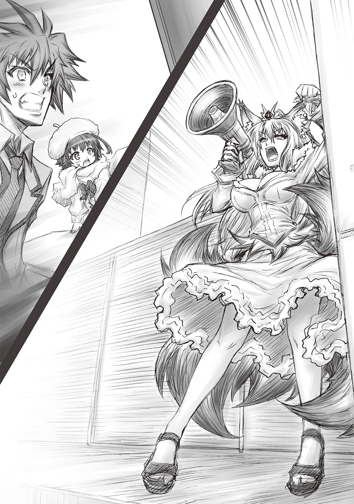
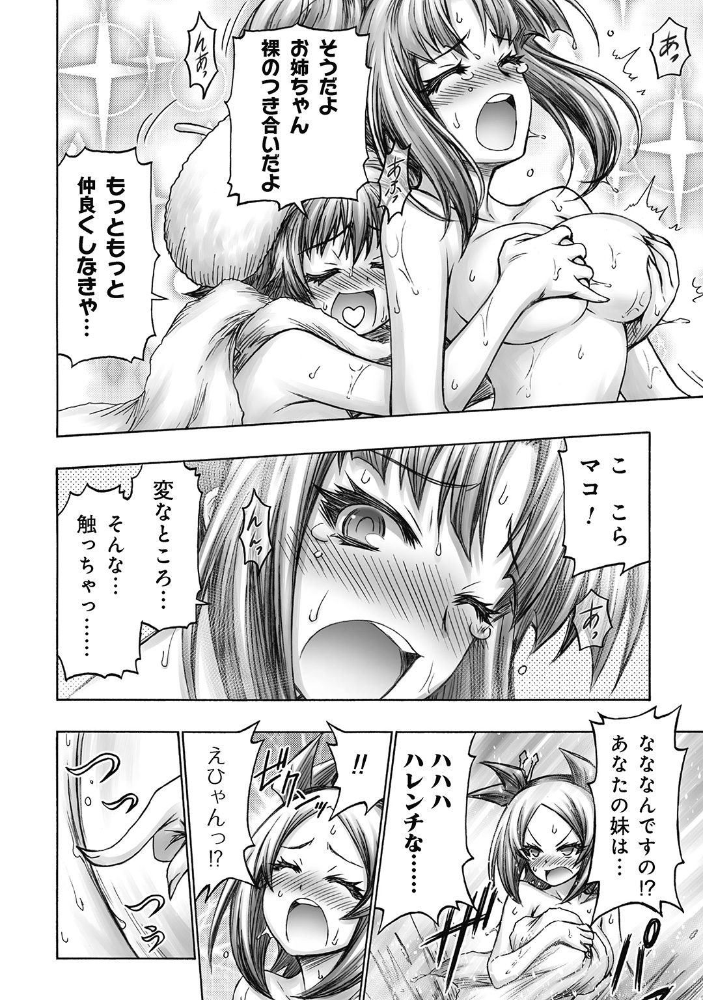
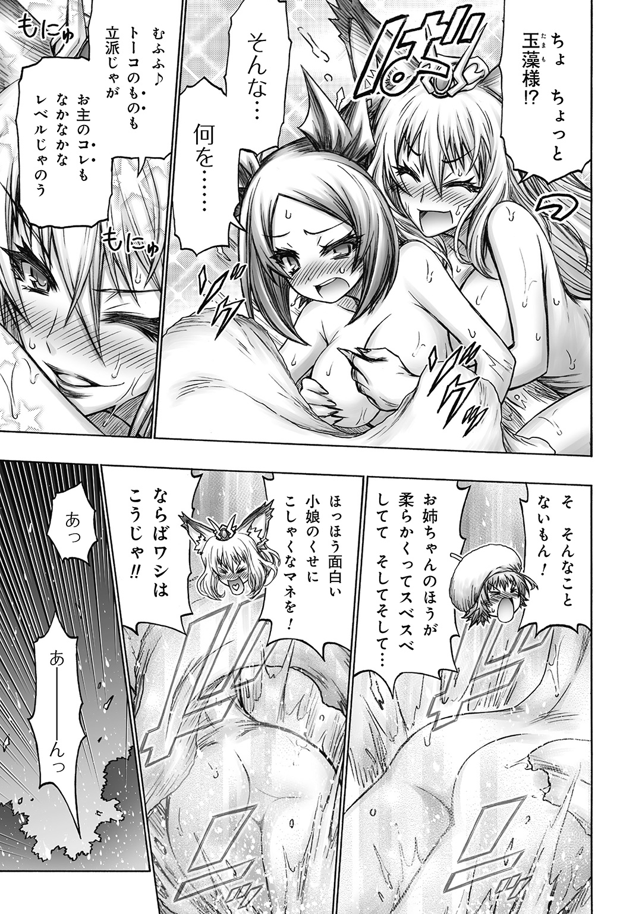

| 魔滅のトーコ 3 | |
| 畑中りんご | |
この本は縦書きでレイアウトされています。
また、ご覧になる機種により、表示の差が認められることがあります。
プロローグ
その光景は、まさに〝災厄〟と呼ぶに相応しいものだった。
舞い散る火の粉。周囲に飛び散る鉄材やコンクリートの破片。大量の血の匂いが、爆発後の蒸気にまじって鼻腔を刺激している。そこかしこの瓦礫の隙間から聞こえてくるのは、逃げ遅れた一般人や、同僚たちの呻き声だ。
つい数十分前まで魔滅社十六夜支社だったビルは、今や見る影もなく崩れ去っていた。
「こんな......酷い」
何十人もの人々が、目の前であっけなく殺されてしまった。
神凪瞳子は無力だった。妖魔の力を降ろす異能など、この災厄の前では何の役にも立たなかったのだ。傷ついた身体には、もはや起きあがる気力もない。この地獄のような光景を見つめながら、自身の無力を嚙みしめることしかできなかったのである。
命を失った人々の中には、瞳子の家族もいた。
家出娘同然の瞳子を保護してくれた、育ての親。
そして瞳子を慕って、遠い北国からやってきた小さな妹――。
何の罪もない彼らが、どうして殺されなければならなかったのか。瞳子は無慈悲な運命を呪わずにはいられなかった。
もし妹が今日この日、十六夜市を訪れていなければ。
瞳子を捜して、この建物に足を踏み入れていなければ。
しかし、そんな仮定にもはや意味はない。瞳子が現場に到着した際には、既に妹の身体はあいつの手で引き裂かれ、見るも無残な姿に成り果てていたのだった。
瞳子は、この災厄を引き起こした元凶を見据える。
「化け物め......！」
うずたかく積まれた瓦礫の山の上で、そいつは胡坐をかいて座っていた。ゆったりとした表情で目を閉じ、人間たちの痛苦の呻きに聞き入っているようだ。
爛々と輝く赤い瞳。黒鋼のごとく浅黒い肌。腰まで伸びた白い長髪。隆々とした肉体には、行者のような法衣をまとっている。背格好こそ人間とさほど変わりなかったが、身を包む邪気は並みの妖魔の比ではなかった。まさに〝冥府の王〟の名にふさわしい威圧感を有している。
この〝王〟を呼びだしたのは、支社の倉庫の奥に保管されていた、古ぼけた勾玉だった。
十六夜支社に保管されていた魔滅兵装――八尺瓊勾玉である。
これはかつて支社長が、「金になりそうだ」という理由で、どこぞの古道具屋からタダ同然で買い叩いたものだった。しかし彼女もまさか、その勾玉が化け物を呼びだす召喚具だったとは、夢にも思っていなかっただろう。
勾玉の効力が発動した理由が、人為的なものだったのか、それとも偶発的なものだったのか、今となってはわからない。ただひとつだけ確かなことは、あの〝王〟が、ひとの世の理を崩壊させうる〝悪戯〟の力を有していることだけだった。
このまま〝冥府の王〟の存在を許せば、十六夜市だけではなく、全世界規模で大混乱が引き起こされることになってしまうだろう。
「もはやなす術なし、というところか」
瞳子のすぐ傍らで、キツネ耳の上司が自嘲気味に唇を歪めた。
壁の残骸に身を預ける上司の身体には、大小無数の傷が刻みこまれていた。彼女お気に入りの白いセーラー服も、既に血と泥まみれだ。
とくに酷いのは、腹部の打撃痕である。まるで焼き鏝を押しつけられたように、いまだジュウジュウと煙を発していた。何らかの術による呪いなのかもしれない。
「ヤツの〝災厄〟と〝悪戯〟は、常識外の力だ。倒すどころか、まともに刃向う手段も残されてはおらん。わしらにできることは、このまま座して死すのを待つのみかもしれんな」
どうせ死ぬなら、札束風呂で溺死したかったものだな――と、十六夜支社長は乾いた笑みを浮かべた。数多の妖魔を従える彼女ですら、〝冥府の王〟の圧倒的な暴力の前には手も足も出なかったのだ。
確かに、あんな化け物にはどうやっても敵う気がしない。
十六夜支社の精鋭たちはおろか、猫妖魔を降ろした瞳子でさえ、一太刀もあびせることすらできずに倒されてしまったほどなのだ。
瞳子が魔滅社に入社して以来、ここまで絶望的な業務に当たったことはなかった。
さすがは神代の魔神というべきか。もはや討滅危険度のランクで測れる相手ではない。〝冥府の王〟は、既存の妖魔とは、まったく別格の存在だったのである。
そいつが数歩歩いてみせただけで、オフィスビルは完全に倒壊してしまった。周囲の建物まで巻きこまれ、多くの命が失われたのである。
おそらくあの魔神には、こちらと戦闘をしているという意識すらなかっただろう。
あれが存在しているだけで、周囲に〝災厄〟が振りまかれる。この煉獄めいた惨状は、最悪のアクシデントが積み重なった結果でしかなかった。
誰の目にも、どうしようもない状況であることは明らかだった。
だが瞳子の傍らにはたったひとりだけ、まだ戦う意志を捨てていない少年がいたのである。
「大丈夫。まだ策はあるよ、トーコさん。玉藻ちゃん」
その年下の男の子は、いつもと変わらぬ緩い笑みを浮かべていた。
彼もまた満身創痍。瞳子と同じ学校の制服は、あちこちがすっかり赤黒い色で染まってしまっている。彼も強力な武器の使い手とはいえ、基本的にはただの人間なのだ。妖力を自在に操る支社長や瞳子とは、戦闘のスタイルが完全に異なっている。
もはや立っているのも限界のはずなのに、どうしてこうも彼は笑顔でいられるのだろう。瞳子には、それが不思議でしかたがなかった。
少年が口を開いた。
「要は、アイツをどっかに封印できればいいんだろ。だったら、トーコさんが〝神降ろし〟をしてくれればいいんじゃないかな」
「〝神降ろし〟、ですか......」
〝神降ろし〟とは、神凪の巫女が、妖魔の力をその身に降ろす儀式である。
確かに、いかな強大な妖魔だろうと、〝神降ろし〟で力を奪ってしまえば一時的に無力化できるだろう。幸い今なら、かの〝王〟は隙だらけだ。儀式を行うチャンスはある。
でも、と瞳子は口を開いた。
「あんな強大な力を持つ妖魔、今のわたしじゃとても制御できませんよ。身体が耐えきれずに朽ち果てるか......最悪、妖力が暴走して身体を乗っ取られることになりかねません」
あの〝王〟の膨大な妖力は、明らかに瞳子の身には余るものだった。
いや、瞳子だけではないだろう。そもそも地球上に、あんな強大な力を降ろせる人間の術者はいない。あの〝災厄〟と〝悪戯〟は、人間には過ぎた力なのだ。喩えるなら、手のひらサイズのラジコンカーに、Ｆ１用のエンジンを積みこむようなものなのである。その末路は、暴走か破裂かの二択しかない。
しかし少年は、不安げな瞳子を励ますかのように、にっこりと頰を緩めた。
「降ろすのはトーコさんじゃない。この僕に、だよ」
「え？」
「生きている人間に降ろそうとするから暴走するんだよ。降ろした先が物言わぬ身体だったら、そもそも暴走の危険はない」
さらりと彼は、そんなことを言ってのける。
物言わぬ身体？ 暴走の危険はない？
彼の言葉の意味を、瞳子は俄かに理解することができなかった。わかったのはただ、少年がいつになく優しい眼差しで瞳子を見つめていることだけである。
「幸い、僕にはこいつがあるからさ」
彼が手にしている両刃の剣は、第一級魔滅兵装――〝草薙〟。幾多の妖魔犯罪者たちを斬り伏せてきた、少年の愛刀である。
「妖魔の力を吸うこの魔剣なら、導体としては十分だよね。こいつで僕とあの〝王〟を同時に貫けば、妖力のバイパスができる。そうすれば、別に巫女でもなんでもない僕でも、〝神降ろし〟の触媒になれるはずだ」
「な、何言ってるんです!? そんなことをしたら、確実に死にますよ!?」
「まあ死ぬだろうね。っていうか、死ななきゃ意味ないし。......トーコさんは、僕の死体に〝神降ろし〟の儀式をしてくれればいいんだ」
あっけらかんと告げる少年に、瞳子は言葉を失った。
支社長も、目を丸くしている。
「お前、まさか死ぬ気なのか......？」
「ええ。他に方法もありませんし。......あ、別に殉職だからって、労災には期待してませんよ。支社長のブラックな性格はよくわかってるつもりですから」
少年は、けらけらと白い歯を見せて笑う。
こんなときに笑える少年の内心が、瞳子にはどうしても理解できなかった。
家族も同僚も、みんな死んでしまったのだ。これ以上の犠牲なんか、とても耐えられるものではないのに。
「どうしてそんなこと言うんです。あなたがいなくなったら、わたし......」
「泣かないでよ、トーコさん」
少年は腰をかがめると、指先で瞳子の涙を拭った。
そして驚くべきことに――彼はそっと自分の唇を、トーコのそれに触れさせたのだ。
「え......？」
彼との初めての口づけ。それは、血と灰の味がした。
「いつもクールでカッコいい。それが僕の好きなトーコさんなんだからさ」
「す、好きだなんて、こんなときに言うのはズルいですよ......！」
いくら瞳子が恨みがましい目を向けても、少年の決意は揺らがない。
彼の柔らかい微笑みには、毅然とした色が浮かんでいた。
「ははっ......！ や、やっぱ、すごく怖いなあ」
柄を握る手を震わせながら、彼は〝冥府の王〟に向き直った。
「でもさ。好きな女の子を守って死ぬとか、ある意味、最高のシチュエーションだよね」
「やめてください！ そんなのダメです！ だってわたし、まだちゃんと告白の返事もしてないのに――」
「それは聞かないでおくよ。せっかくの決意が鈍っちゃうかもしれないしね」
ふっと笑みを浮かべ、少年は〝王〟のほうへと歩きだした。
傷ついた身体だからだろう、その足取りはおぼつかない。瓦礫につまずきそうになりながらも、彼は一歩一歩、〝王〟の元へと近づいていく。
「それじゃ、さよなら。トーコさん」
そうだった。彼は元来こういう少年なのだ。
たとえ自分の身を犠牲にしてでも、周りの誰かを救おうとしてしまう。
瞳子のように特別な力を持つわけでもない彼が、魔滅社のような危険極まりない企業に席を置いている理由――それは単に、その厄介な性格が原因なのである。
そして瞳子が彼に惹かれたのも、そういう部分だった。
このままじゃ、もう二度と彼に会えなくなる。彼の笑顔が見られなくなってしまう。
「行かないで、純平くん！」
行かないで、純平くん――。
そんな叫びとともに、瞳子は目を覚ました。
窓の外は曇天。透き通った空気を感じる。今にも雪が降りだしそうだった。
寒いわけだ。部屋の温度計はマイナスを指している。少しだけ身を震わせながら、瞳子はベッドの中で身を丸くした。
あのときの夢を見るのは、これで何度目だろう。彼がいなくなってからこの数か月、気を抜くと毎夜毎晩こんな調子でうなされている気がする。
――我ながら、感傷的すぎますね。
ふう、とため息をついて、瞳子は再びベッドの中で目を閉じる。寝なおそう。ゆっくり寝なおして、もっと寝覚めのいい夢を見よう。幸い今は冬休みだ。学校に行く必要もない。
瞳子が再び眠りに引きずられようとしていたそのとき、ふいに耳元から甘ったるい声が聞こえてきた。
「むにゃ......お姉ちゃぁぁん......」
ごそごそと、布団の中で誰かが動いている気配がする。
やれやれ、また茉子か。先月の一件で瞳子と同居することになって以来、この甘えん坊な妹は、こうしてしょっちゅうこちらのベッドにもぐりこんでくるのだ。
「まったくもう......」
そりゃあまあ、可愛い妹に慕われるのは姉としては嬉しい。何年も離れて暮らしていたのだから、スキンシップをしたがる気持ちもわかる。
だが、さすがに毎朝ともなるとウンザリしてしまうのも事実なのだ。
この子ちょっと、愛情重すぎ。
「ほらマコ、寝るなら自分のベッドで寝てください。もうこっちのベッドには入っちゃダメだって言ったでしょう」
言いつつ、布団の中の茉子を外側に押し出そうと試みる。
しかし、彼女の身体に触れた瞬間、瞳子はどうも違和感を覚えた。
「......え？」
なんだか今日の茉子は、いつもより少し大きい気がする。髪もごわごわしている。あと全体的にぷにぷにしてない。しかも妙に邪悪な気配を漂わせている。
「うう......お姉ちゃぁん......寒いよう」
ベッド脇を見れば、パジャマ姿の茉子が身体を丸めて床に転がっていた。まるで誰かにベッドから蹴り出されたかのごとく、ぶるぶるとその身を震わせている。
茉子があそこで寝ているということは......瞳子と同じ布団の中で蠢く、この謎の生物の正体は何なのか。思いきり嫌な予感がする。
瞳子が顔を引きつらせながら布団を跳ね除けると、
「あ」
しまった、という表情をして、そいつが薄ら笑いを浮かべていた。
鼻の下を伸ばした、制服姿の少年である。
「お、おはよーございまーす......。ご機嫌いかがっすか、トーコさん？」
少年の顔を見て、瞳子はウンザリしながらため息をつく。
「最悪です。今すぐにでも、あなたを簀巻きにして外に吊るしてやりたい気分です」
「あっはっはー。やだなあもう、トーコさんたら。朝から冗談キツいんだから」
埋めた胸から顔を上げ、そいつは悪びれもせずに笑ってみせた。
しまりのない口元。へたれた目つき。本能の赴くままに生きてます、と言わんばかりの緩んだ表情。少なくとも、起き抜けのベッドの中で顔を合わせたい相手ではない。
彼の名は、早池峰純平。
夢の中の少年と、同じ顔、同じ名前、同じ声の男の子である。そしてそのことがまた、瞳子の心を苛々とささくれ立たせるのだ。
「......それで、何か申し開きは」
ベッドの傍らに立てかけておいた草薙を手に取り、瞳子が低い声で呟く。
「ひいっ......!?」
すると条件反射と言わんばかりに、純平がベッドの上で膝を正した。その額には、いつものように脂汗が浮きはじめている。
「い、いやいや、何も夜這いってわけじゃないんすよ!? これはあくまで、肉声モーニングコールっすから！」
「はあ？ 肉声モーニングコール？」
「そうです！ 冬休みだからってトーコさんが怠けた生活を送らないよう、ぼくがわざわざこうして起こしに来てあげたってわけです！」
「それはどうも余計なお世話をありがとうございます。ではお返しに、あなたがこれ以上色欲にまみれた生活を送らないよう、引導を渡して差し上げましょうか」
瞳子が鞘から剣を引き抜くと、純平の顔色が真っ青になった。
朝から女の子のベッドに侵入しておいて、ただですむとでも思っていたのだろうか。本当にバカな男の子である。その浅慮には、怒りを通り越して、もはや憐れみすら覚えてしまうくらいだった。
「じょ、冗談ですよね？ トーコさんは純真無垢な可愛い後輩を虐めたりしませんよね？」
「まあ、ツッコミたいことは多々ありますが......尋問を続けましょう。ところで純平くん。この部屋にはどうやって入ったのです。鍵がかかっていたはずですよね？ それに、マンション入り口のオートロックは？」
瞳子の質問に、純平が「ご冗談を」と肩をすくめた。
「あんなの、ちょーっとピッキングの技術を習得してれば、誰でも侵入できますって。だいたいぼく、トーコさんちのカードキーの複製、五枚は持ってますからね！」
そう言って純平は、ブレザーの内ポケットから、一枚のカードを取り出して見せた。それは寸分違わず、このマンションのキーと同じものである。いつの間にコピーしたのだろう。
「まったくもう、セキュリティ甘々っすよトーコさん。こんなんじゃ、変態に目をつけられたら大変ですよ？」
「そうですね。既に目をつけられているようですし――」
そのどうしようもない変態に〝草薙〟の切っ先を向け、思い切り睨みつける。
「袈裟斬りか切腹か、好きなほうを選びなさい」
「究極の二択!?」
頭を抱える純平の姿を見て、瞳子はため息をついた。
――これが、あの日わたしたちを救った純平くんと同じ人間だとは思えませんね。
この目の前の少年は、厳密には早池峰純平ではない。いわば、彼のゾンビだ。死んだ純平の死体に〝冥府の王〟を降ろした結果、なぜか動きだしたという不思議存在なのである。
「どうせなら切腹より制服がいいっす！ ......とかいう雰囲気じゃないっすね。はいすいません。反省してるっす」
彼自身は早池峰純平のつもりらしいが、その精神性は妖魔の魂魄に大いに引きずられている。生前の記憶の一部を欠損しているだけではなく、本能と性欲に忠実な、ゲス野郎に変じてしまっているのだ。
もちろん以前の純平なら、同僚のベッドに夜這いを仕掛けるようなことはなかった。だいいち、瞳子の神降ろしの衣裳にすら毎度顔を赤らめるほどの純情少年だったのだ。
一度は心を通い合わせたはずの少年が、救いようのないゲス野郎と化している。この変化は、瞳子にとっては、かなりショッキングなことだった。十か月経った今でも、下半身だけでモノを考えている今の純平くんの姿を見るたびに、やはり違和感を覚えてしまう。
やはり今の彼は、あくまで妖魔。〝冥府の王〟と割りきるべきなのか。
「純平くんを完全消滅させるためには、〝草薙〟で斬るしかない......」
「か、完全消滅!? もはや肉片すら残さないつもりっすか!? 滅多切りっすか!?」
純平が、またしても「ひいっ」と情けない悲鳴をあげた。
そう。〝冥府の王〟を消し去るためには、あの日〝神降ろし〟の導体となったこの剣で、彼の身体を斬り裂くしかないのだ。
――わたしにできるのでしょうか、それが。
どうやら封印の効果が消え去るまで、残り時間はひと月もないらしい。支社長の言う通り、いい加減覚悟を決めて彼を消し去る時がきたのかもしれない。
それでも――と、瞳子は思う。
今の純平くんは普段の言動こそゲス野郎だが、本質的には悪い人間ではない。先日の茉子の一件だって、身を挺してまで暴走する彼女を止めようとしてくれたのだ。もし仮に、あの場面でかつての純平くんが生きていれば、きっと同じ行動をとっただろうと思う。
今の彼と昔の彼。ふたりは本当に別人なのだろうか。今の純平くんを殺すことが、本当に正しいことなのだろうか――。そんな思考が脳裏にうずまき続け、瞳子は、どうしても決断できずにいたのである。
瞳子がぼんやりと草薙に目を落としていると、
「す、すんませんっしたーっ！」
純平が光の速さでベッドを降り、フローリングに額をこすりつけていた。
「こ、殺さないでくださいトーコさん！ ほ、ほら！ 持ち出そうとしていた下着はちゃんとお返ししますから！ ね!?」
彼は頭を下げたまま、後ろポケットに入れていた小さな布を差し出してみせる。フリルのついた、ワインレッドのシルク生地――それは瞳子のお気に入りの一枚であった。
なるほどこの男、夜這いだけでは飽き足らず下着窃盗も行っていたというわけか。相変わらずの見下げ果てた外道っぷりである。
「やはり、可能な限り速やかに殺害したほうがいい気がしてきました。それも、生まれてきたことを後悔するくらいに惨たらしいやり方で」
「な、なにする気っすか、トーコさん!?」
恐怖に顔を歪ませる純平の襟首を捻りあげ、瞳子が古今東西の処刑方法について思いを馳せていたそのとき、枕元の携帯電話が通話の着信を告げた。
発信元はどうやら、先月本社に戻ったばかりの先輩社員からのようである。
忙しいあのひとが、朝っぱらからいったい何の用事だろう――。通話ボタンを操作すると、通話口からバリトンボイスが聞こえてきた。
『やあ、おはようトーコ』
「おはようございます。伯道さん。どうしたんですか」
本社のエリート社員にして稀代の陰陽師、伯道さん。
瞳子がその名前を出すと、純平が露骨に表情をしかめた。まあ、以前ケンカを吹っかけた挙句、ボッコボコに返り討ちにされたのだから、その苦手意識はわからなくもないけれど。
『いや、今朝の式占によくない結果が暗示されたからね。忠告をしておこうと思って』
「はあ。式占ですか」
式占とは、古代から陰陽道で用いられている占いのことである。
式盤や亀甲を使うやり方が一般的で、瞳子もかつて伯道さんが式盤を片手になにやら計算している姿を見たことがあった。
たかが占いと侮るなかれ、術師によっては予知レベルで正確な未来を見通すことができるのだそうだ。魔滅社最強の術師とも名高い伯道さんの占い――。それは決して無視できるものではないだろう。
『なあトーコ、君、いま純平くんと一緒にいるんじゃないのかい？』
「え......あ、はい。そうですが」
『やはりか......どうやら最悪のシナリオが実現してしまったらしい』
伯道さんが、低い唸り声を漏らした。その声色には、酷く消沈した雰囲気が感じ取れる。いったい何が起きたというのか。
「最悪のシナリオ......!? 伯道さん、純平くんに何が？ 式占の結果はどのようなものだったのですか」
喉の奥からやっとのことで言葉を絞り出すように、伯道さんは告げた。
『俺の純平くんがトーコと同じベッドで朝チュン状態......それが今日の式占の結果だよ』
「は？」
『毎朝欠かさずにやっていた俺と彼との相性占いが、まさかこんな惨憺たる結果に終わるなんて......。くっ......彼はノンケに堕ちたというのか』
通話口から、なぜか大変に悔しそうな歯嚙みが聞こえてきた。
そうだった。伯道さんはこういうひとだった。ルックスも収入も実力も、あらゆる女性を惹きつける魅力を持ちながら、そのくせ本人は男性に対してしかその愛情を向けないという――魔滅社きってのエリート兄貴、それが伯道さんなのだ。
『トーコ、君に忠告しておこう。たとえ純平くんの童貞が君に奪われたとしても、彼の後ろの処女までは渡すつもりはないと――』
「あの。その手のどうでもいい話なら、もう切っていいですか」
瞳子がそっけなく電話を切ろうとすると、伯道さんが『待て』と言った。
『冗談だよ。本題は別にある』
「はあ......それなら最初から真面目におっしゃってください」
『部屋にテレビはあるか？ 今すぐ電源をつけてみてくれ。チャンネルはどこでもいい』
幸い、この寝室の棚の上にも小型のディスプレイが置かれていた。瞳子は伯道さんに言われた通り、リモコンの電源を入れてみることにする。
画面に現れたのは、ヘリから撮影中の高いビルの遠景である。ビルの一部からは黒い煙がもうもうと立ち上っており、緊迫した状況であることをうかがわせる。
「あれ。これって、完成したばっかりのタワービルじゃないっすか」
純平くんが呟いた。
確かに、画面内のビルや背景の街並みには見覚えがある。場所は駅の反対側。あのビルは街の北側にオープンしたばかりの新たな娯楽スポット、〝十六夜タワービル〟である。
何かアクシデントがあったらしい。画面には、『妖魔によるテロか。人質はおよそ二十名』とテロップが流れていくのが見える。
「なるほど、それで魔滅社の出番というわけですか」
携帯を耳に当てたまま、瞳子はベッドから下りた。冬休みだというのに、おちおち寝てばかりもいられないらしい。
『ああ、だけどね。注意をしてくれ。今回のテロの首謀者は、君もよく知る人物だ』
その瞬間、瞳子の視線がテレビ画面に釘づけになる。ビルの屋上に佇む妖魔の姿が、画面に大写しになったのだ。
「え」
腰まで届く、輝くような長いブロンド。ふさふさの大きな狐耳と尻尾を有する妖狐だ。瞳子にはすぐに、その妖魔が何者か判別することができた。彼女の頭部を飾る黄金の冠は、百円均一のおもちゃ売り場で買ったもの――それは間違いなく、貧乏妖魔王の証である。
「でも、なんですか。あの姿は」
瞳子が知るその妖狐は、普段はもっと子供のような体型をしていたはずだった。しかし、今テレビに映っている彼女は、艶やかな大人の女性の姿をしていたのである。
グラマラスにすぎるその肢体は、色気も妖気も迫力十分。はちきれんばかりの乳房も、艶めかしい腰つきも、黄金色に輝く巨大な尻尾も、普段の彼女とは大きくその姿を異にしている。唯一瞳子がよく知る彼女の面影が残っているのは、その挑戦的な切れ長の眼差しだけだった。
「え、もしかして、このボンキュッボンなキツネ姉ちゃんって――」
純平も、口をぽかん、と開けながらその映像に見入っていた。
無理はない。つい昨日までデスクで小銭を数えていた貧乏上司が、テロリスト妖魔として大々的に報道されてしまっているのだから。
一方、通話口から聞こえる伯道さんの声は、冷静なものだった。
『白面金毛九尾――通称〝玉藻〟。あの裏切り者に対して早急に魔滅執行せよというのが、本社からの緊急業務命令だよ』

あの伯道の野郎の指示に従うのは癪だったが、本社からの緊急命令というのであればしかたがない。
ぼく――早池峰純平は、トーコさんやマコちゃんとともに十六夜支社オフィスへと向かうことになった。動きがあるまでオフィスで待機、というのが伯道からの指示なのだ。
オフィスには、やはり玉藻ちゃんの姿はない。
普段彼女の定位置となっているデスクの上にも、彼女が寝床にしている倉庫にも、支社の売り上げが保管されているはずの金庫の中にも、あのなんちゃって幼女はいない。
ついでに言えば、金庫からは金が持ち逃げされた形跡があった。まったくもって最低の守銭奴ババアである。
だとするとやはり......テレビに映るあのダイナマイトバディなキツネ女が、玉藻ちゃん本人だということなのだろうか。
まったくもって信じられない。つるぺた幼女が一晩で爆乳美女に成長するだなんて、人体を舐めすぎである。おっぱいは乾燥ワカメではないのだ。
オフィスのテレビからは、緊迫したレポーターの声が聞こえてくる。
『現場の十六夜タワービルからお送りしております。警察の発表によりますと、占拠されたビルに捕らえられている二十名は、本日午後に行われる予定だった環境開発会議の出席者とのことです。大江グループ総帥の大江伊吹氏、ヒューマン建築ＣＥＯの佐伯元治氏など、人質には政治家や大企業関係者が数多く含まれることから、警察では犯人グループの目的は身代金ではないかとの見方を示しているようです。しかし今のところ、主犯格と目される狐妖魔に動きはなく――』
テレビの中のタワービルは、マスコミと警察と野次馬に囲まれ、大混乱の様相を呈していた。企業の重役やら十六夜市の為政者やらがこぞって生命の危機に陥っているのだから、大騒ぎになるのもわからないではないけれど。
しかしぼくはと言えば、なんだか実感が湧かない。まるで映画か何かを見せられているような、酷く現実味を欠いた光景のように感じていた。事件の元凶が自分たちのよく知る人物だということが、この状況を冗談めいたものにしているのかもしれない。
オフィスのソファーに深く腰を下ろし、ぼくは首を振る。
「いったいどうしちゃったんすか、玉藻ちゃん......」
「そうだよね。ホントにどうして、こんなことしたんだろ」
ぼくの隣で、白い帽子の少女が不安げな表情を浮かべていた。
小柄で華奢な、セーラー服姿の妹系ゾンビ少女、マコちゃんである。彼女はマフラーの紐をくるくる弄りながら、ニュース画面をじっと見つめている。
「やっぱり、お金に困って......なのかな。玉藻さん、いつも二言目には『金がー金がー』って言ってたもんね。そういえばマコも、ここで働き始めてから一円もお給料貰ったことないし......」
「資金繰りに困った挙句、身代金目的で犯罪に走ったということですか。あながち否定もできませんね。あの支社長の性格を考えると」
トーコさんは眉間に皺を寄せながら、カップにコーヒーを注いでいた。
やはりみんな、玉藻ちゃんの凶行の理由が気がかりなようだった。彼女はなぜ、人質をとってタワービルを占拠したのか。その目的はいったいなんなのか。どうして、自分たちには何ひとつ事前に相談をしてくれなかったのか――と。
もちろんぼくだって、それは気になる。あの血も涙もないブラック支社長のことだ、本気で身代金が目的なら、ぼくたちに犯罪の片棒を担がせることすら躊躇しないだろう。いつ手伝いを求める連絡がきてもおかしくはない。
しかしぼくにはむしろ、それよりも気になることがあったのだった。
「どうやってあのつるぺたが、ワガママボディへと至ったのか......それが問題だ」
画面に映る妖艶な金髪妖狐のセクシー極まりない体型に、ぼくはごくりと生唾を飲みこむ。
まず、なんと言ってもあのおっぱいだ。
衣装の胸元から半分だけ顔を出した釣鐘型のバストは、ぷるん、と張りがあり、まるで見る者の視線を完全に釘づけにするかのごとき魔力を帯びている。アレをこの手の中で弄んだとしたら、どんなに柔らかいことだろう。おっぱいマイスターを自称するぼくにも、その感触はまったく想像できない。
なにせ、とんでもないサイズなのである。まさに規格外。実にけしからん。ヘリのカメラマンさんには、もっとズームで撮影してほしいレベルだ。とくに谷間あたりを。
「なんで一晩であんな成長してんすかね。いっそ母親とか姉とか言われたほうが、まだ納得できますよ」
「いえ、純平くん。むしろあれが支社長の本当の姿なんだと思いますよ」
トーコさんが淡々と告げた。
「もともと白面金毛九尾は、その美貌で一国を滅ぼしかけた大妖魔です。知りませんでしたか？」
「ああ、なんとなく前に聞いたことがあるような、ないような......」
「つまり、あの姿が元々の支社長ということですよ。ここ最近はずっと、省エネのために子どもの姿になっていたそうですけどね」
なんでも彼女には、普段の妖力消費を抑えなければならない理由があるらしい。そのために、非力な子どもの姿をとっていた――と。
「なるほど、省エネかあ。相変わらず発想がケチくさいなあ......」
マコちゃんが納得したようにうんうん、と頷いている。ぼくも非常に同感だった。
「あんだけエロいバディを隠し持ってたってのは実にもったいない。普段から玉藻ちゃんがあの姿だったら、十六夜支社の金庫も潤ってたと思うんすよ」
カップをテーブルの上に置き、トーコさんが首を傾げた。
「そうでしょうか。あのなんでも他人任せの支社長が、自ら魔滅業務に精を出す姿なんて想像できないのですが」
「いやいや、別に魔滅業務なんてする必要ないんじゃないですか。あんだけセクシーな容姿なら、来たお客さんにお酒注いでるだけでがっぽり儲かりますよ」
「は？ お酒？」
「ええ、そうです。これを機に十六夜支社も、女の子と明るく楽しくおしゃべりできるバー的な雰囲気に改装しちゃうとかどうでしょう。場合によっては水着でシャンパンタワー作ってもらったり、下着でダンスしてもらったりとか......ああそうだ。それならトーコさんやマコちゃんも一緒にコスプレ接客したほうが儲かるかな。お客さんから指名料金とか徴収しちゃって。......でもアフターのサービスはぼく限定っすからね。ここ重要」
勢いに任せて喋っていたら、神凪姉妹の視線がゴミを見るような目に変わっていた。
「いつも思ってたけど純平さんの発想って、心底見下げ果てたゲスの思考だよね」
「そんなに風俗営業がしたければ、純平くんおひとりでどうぞ。あなたが接客するなら、きっと熱烈な固定客がつきますよ。......伯道さんとか」
トーコさんがその薔薇野郎の名を出した瞬間、ぼくは尻穴がきゅっと窄まるような感覚に襲われた。そう。一時はトーコさんの恋人かと思われたあの男だが、どうやら狙いは彼女ではなく、ぼくのほうだったらしいのだ。
言うまでもなく、ぼくはＢＬ的なアレに対しては一ミリの素養もない。伯道なんぞに好意を向けられても、ぶっちゃけノーサンキューである。恐怖しか感じない。
「じょ、冗談じゃないっすよトーコさん。伯道相手に接客するだなんて、鳥肌ってレベルじゃねえっす！」
そのとき、ふいに聞き覚えのある低い声色が、戸口のほうから聞こえてきた。
「そうかな？ 俺は純平くんがホストになってくれる店なら、毎晩でも通うけどね。もちろんホテルまでの送迎も欠かさずに、だ」
背筋に冷や汗が伝う。
ゆっくり振り返ると――オフィス入口のドアにもたれるようにして、そいつは立っていた。ひっつめに結んだ長い髪。ムカつくほどに端正な甘いマスク。長身をダークスーツに包んだ、見た目だけは爽やか系イケメンだ。
無駄に情熱的な視線をこちらに向けながら、彼は口を開いた。
「俺の純平くんが心配だったものでね。つい本社から飛んできてしまったよ」
「俺のって......いつぼくはあんたのものになったんすか!?」
伯道は勝手知ったる様子でソファーに近づいてくると、ぼくの背後に立った。こちらの肩に手を置き、にこり、と口元を緩めてみせる。
悪寒がぞわりと全身を走り抜けた。
トーコさんもマコちゃんも、呆気に取られた表情で、その突然の訪問者を見つめている。
「いったいいつの間に部屋の中に......全然気配を感じませんでしたが」
「突然の無礼をすまないね、トーコにマコちゃん。ことは一分一秒を争う事態だ。挨拶は省かせてもらうよ」
そう言いつつ、伯道は手に提げた鞄の中から箱を取り出して見せた。片手で持つにはちょっと大きめの木箱だ。木目の入った檜の板に、赤い札のようなもので厳重な封印が施されている。
いったい何だ、この箱は。
「これは、玉藻さんが要求している物品さ」
「玉藻ちゃんが？」
テレビのほうに目を向ける。するとタワービルの屋上にいるキツネ女が、拡声器を片手に何ごとかを叫んでいる真っ最中のようだった。

『先ほどから言ってるように、わしの要求はたったひとつ！ 魔滅社本社が保管する〝カガミ〟を、十六夜支社の、神凪茉子の手によって運ばせること――あと一時間以内にな！』
「え？ マコが運ぶの？」
急にテレビで名前を呼ばれ、マコちゃんが目を丸くする。
確かに意外だった。なぜ玉藻ちゃんはマコちゃんを指名したのか。彼女でなければならない理由が何かあるのだろうか。
『あまり待たせるなよ。わしはあまり気の長いほうではないのでな。十分遅れるたびに、人質をひとり殺す』
テレビカメラが、玉藻ちゃんの横にいる人質の姿を映し出した。
人質は、大柄で白髪の老人だった。ロープで手足を縛られ、口をガムテープでふさがれている。その目は恐怖に見開かれ、額にはじっとりと脂汗をかいているようだ。
これは見るに堪えない。あのキツネババア、老人相手になんてことをしていやがるのか。
そんな上司の暴虐映像に、トーコさんも眉根を寄せていた。
「冗談を言っている雰囲気ではありませんね。支社長のあの目は本気の目です。純平くんの未払い給料をパチンコに突っこんだときと同様、ドス黒い濁り方をしています」
「そんなことしてたんすかあの腐れギツネ!? つーかトーコさんも知ってたんなら止めてくださいよ！」
どうりで最近給与支払いが滞っているはずである。つくづく悪党だった。
そんなぼくの悲痛な思いを知ってか知らずか、画面の中の腐れギツネはニヤリと口元を歪めてみせた。
『それと、こうして頭上をヘリに飛び回られるのは煩くてかなわん。マスコミや警察には、そろそろこのあたりでお帰りいただこうかな』
言うなり、玉藻ちゃんはその豊満な胸の谷間から何かを取り出した。
手のひら大の黒い石......だろうか。ほぼ球形に近い水晶玉のようなその石を、テレビカメラはズームアップする。
画面に大写しになったその石を見て、伯道が顔をしかめた。
「まずい。殺生石か......！」
なんだそれ――と尋ねる暇はなかった。
玉藻ちゃんがその石を頭上に掲げたとたん、画面に強烈なフラッシュが迸ったのである。
「え、な、なにこれ」
映像が突然大きくぶれ、急にブラックアウトしてしまった。
聞こえてくるのはノイズまじりの音声のみ。『しっかりしろ！』『何が起こったんだ!?』『わからん！ こいつが急に気を失って......』などと、テレビクルーたちの緊迫した状況が伝わってくる。
ややあって、何かが弾けるような大きな爆発音が耳を刺した。途端に画面には砂嵐が走り、今度は音声さえも聞こえなくなってしまったのである。
良くないアクシデントが起こったのは、誰の目にも明らかであった。
マコちゃんは顔を引きつらせながら、
「つ、墜落しちゃった......ってこと？」
「やれやれ、玉藻さんも躊躇がない。せめて人死にが出てないことを祈るばかりだよ」
伯道が肩をすくめた。
やはりこの放送中断の原因は、玉藻ちゃんの黒い石のせいだったらしい。どういう現象なのかはよくわからないが、彼女はあれを使ってヘリを墜落させてしまったのだ。
トーコさんもカップの取っ手を握ったまま、茫然と画面の砂嵐を見つめている。
「なんということを......。あれじゃもう、完全にテロリストの所業じゃありませんか」
「そっすね。見た目はあんなにエロいのに......。いや、でも、エロいテロリストだから、さしずめエロリスト、とでも呼ぶべきなんすかね」
「あのですね、純平くん。もうふざけている時間はないんですよ」
こめかみを押さえながら、トーコさんがため息をついた。
「支社長の要求は、一時間以内に〝カガミ〟とやらをマコに運ばせること。目的はよくわかりませんが、その要求に従わなければ無辜の市民が犠牲になってしまうのですから」
「むー、なんでマコが運び役なんだろ。〝カガミ〟っていうのもよくわからないし......」
わかんないことだらけだよ、もう！ とマコちゃんが口をへの字に曲げてみせた。
「心配しないでくれよマコちゃん。〝カガミ〟とは、この箱の中に入っているもののことさ」
伯道が、手にした檜の箱をテーブルの上に置いた。それからマコちゃんのほうを向いて、優しげな口調で話しかける。
「今から君はこれを持って、俺とともに十六夜タワービルに行ってほしい。人質を救うためだ。協力してくれるね」
「え、えーと......」
マコちゃんはどこか歯切れ悪そうに、姉のほうをちらちらと見つめている。彼女にとって伯道は、かつて本気で命を狙い、死闘を繰り広げることになった相手なのだ。そんな相手と行動することに、若干のためらいがあるのかもしれない。
「わたしからもお願いします、マコ。今の支社長を止められるのは、もしかするとあなただけかもしれないのですから」
トーコさんに諭され、マコちゃんも「お姉ちゃんが言うなら」と、首を縦に振った。
その様子を見て、伯道が満足げに目を細める。
「ＯＫ。それじゃあ作戦を説明しよう」
「作戦？」
「ああ。俺がこの子を連れて、タワービルの正面から支社長と交渉をする。要求物を渡すにしても、まずは人質の安全を確保しなればならないからね」
さすがは有能なエリート社員様だけあって、もっともな意見だった。交渉で人質を守ることは確かに大事なことである。
とくに、相手はあの強欲極まる支社長なのだ。その〝カガミ〟とやらを渡しても、人質が手元にいる限り、無茶な要求を次々としてくる可能性がある。交渉ごとは、頭の切れるこの男に任せるのが得策だろう。
「んじゃ、その間ぼくとトーコさんはお留守番っすかね。できることもなさそうだし」
「なにを言っているんだい純平くん。君とトーコには、もっとも重要な役どころを果たしてもらわなければならないというのに」
「はあ。重要な役どころ？」
ぼくとトーコさんの顔を交互に見て、伯道は鷹揚に口を開いた。
「そうだ。俺の交渉はあくまでも陽動。君たちふたりはタワービルの裏階段から潜入し、彼女――玉藻さんを排除してほしい。実力で」
「え。じ、実力ってことは、つまりバトれと？」
困惑するぼくとは対照的に、伯道の面持ちは冷静そのものだった。いとも容易く「その通り」と頷いたのである。
「最初から言ってるだろ。これはあくまで魔滅業務なんだ。本社からの命令は、白面金毛九尾の抹殺。支社長が蛮行に走ったのなら、そこの社員が止めるというのが筋だろう？」
「なるほど。支社長の失態の尻拭いは、自分たちでしろ――と。そういうわけですか」
トーコさんが、ふう、とため息をついた。
ため息をつきたいのはぼくも同じである。もちろん、あの老害幼女がテロリストになろうがエロリストになろうが知ったことではない。だが、直接戦闘をしなければならないとなると、これはなかなかに憂鬱だった。
「大丈夫かな。あのババア、実はすっげえ強いって話っすからね......」
そう。ああ見えて彼女は、何百何千という妖魔を束ねる妖魔の王様なのである。その実力は未知数だが、さきほどヘリを墜落させた妙な術のこともある。間違いなく強敵だろう。百戦錬磨の十六夜支社エースでも勝てるかどうか。
ちらりとトーコさんの横顔を盗み見ると、彼女も彼女で神妙な表情をしているようだった。なんだか前途多難な気配がする。あれ、もしかしてヤバイ？
「時間が惜しい。俺たちはそろそろ出るよ。君たちは状況を見て、タワービルに潜入してくれ」
伯道は席を立ち、戸口のほうに向かった。
マコちゃんもテーブルの上の木箱を胸に抱きかかえ、不安げな表情でその後に続く。
「お、お姉ちゃん。なんか大変なことになっちゃったけど......マコ、頑張ってみるよ」
「ええ。無理はしないでください」
ばたん、と扉が閉められ、ぼくとトーコさんのふたりのみが室内に残された。
緊張と困惑がないまぜになった、妙な静けさがオフィスを支配している。
「いやしかし、支社長とガチバトル展開は予想だにしてなかったっすね......」
「ええ、そうですね」
「勝てますかね？ ぶっちゃけ」
ぼくの問いに、トーコさんは答えない。ただ無言でじっと、カップの底にたまったコーヒーに目を落としている。
「あ、あれ、まさか、勝ち目ない系......とか言わないっすよね？ 今日もエロカッコいいコスプレで、あの暴走中の玉藻ちゃんをぶっとばしてくれるんですよね？」
「コスプレじゃなくて〝神降ろし〟です」神凪の巫女が、ぶすっとした表情で呟いた。「というかですね。その〝神降ろし〟が一番の問題なんです」
「え？ どういう意味です？」
眼鏡の奥のクールな瞳が、首を傾げるぼくを見据える。
「純平くん、〝神降ろし〟の儀式がどういう手順で行われるかは知っていますね。......あなたのような唾棄すべき変態なら、毎度覗いていることでしょうし」
「ええ、そりゃまあ。あれでしょ、玉藻ちゃんが口寄せした妖魔の魂を、ディープでウエットな粘膜接触によってトーコさんの身体の中に送りこむ、百合ん百合んな――」
と、そこまで言って、ぼくはようやく気がついた。
そうなのだ。玉藻ちゃんがいなければ、妖魔の魂を召喚することができない。〝神降ろし〟以前の問題なのだ。
「そうです。支社長と敵対している以上、通常の方法では〝神降ろし〟はできません」
これはゆゆしき事態だった。トーコさんが妖魔の力を使えなければ、玉藻ちゃんと戦うどころの話ではない。
それに彼女の絶対領域が拝めないとなると、ぼくの士気にも大きく関わってくる。なにより、トーコさんのコスプレを楽しみにしている全国一千万の諸兄が黙っちゃいない気がするのだ。
「ダ、ダメっすよトーコさん！ ここは無理やりにでも〝神降ろし〟をしないと！」
「あなたの脳みそはスポンジですか。だからできないと言っているでしょう」
ちっ、と舌打ちをして、トーコさんがぼくを睨みつけた。
ぼくは必死で頭を回転させる。なんとかして彼女にコスプレをしてもらわなければ、八方塞がりである。
〝神降ろし〟に必要なものは妖魔の魂。そしてキスの儀式――。
その瞬間、ぼくの脳裏に天啓が訪れた。
「そうだ！ 前みたいにぼくを降ろせばいいんすよ！ ほら、前に鬼と戦ったときみたいに――」
「嫌です」
神速の拒絶だった。その顔には、「誰があなたのようなゴミと口づけを交わしますか」とでも言わんばかりの、確固たる拒否の色がありありと浮かんでいる。
「前にも言ったかもしれませんが......純平くん程度の雑魚妖魔を降ろしたところで、得られる妖力はたかが知れています。あのときはギリギリでなんとかなったとはいえ、さすがに支社長相手には通用しないでしょう」
「で、でもほら！ こないだマコちゃんがぼくを降ろしたときには、あの伯道を追い詰めるくらいのとんでもないパワーを発揮したじゃないっすか！」
「あれは、マコが巫女として未熟だったからですよ」トーコさんがため息をつく。「あなたの中の〝冥府の王〟の力を直接引き出してしまったせいで、暴走状態に陥っていただけです。わたしだって、あの力を直接降ろしたら無事ではすみませんよ」
トーコさんに言われ、ぼくは「むう」と押し黙った。
まとめれば、こういうことになる。
早池峰純平を普通に〝神降ろし〟すれば、雑魚妖魔としての力しか発揮できない。
一方、早池峰純平の中の〝冥府の王〟を降ろせば、強大な力を得られるものの、暴走によって大変な事態を引き起こすおそれがある――と。
帯に短しタスキに長し。早い話が、どっちつかず。ピーキーすぎて使いものにならないらしい。早池峰純平は、またしても役立たずの烙印を押されてしまったということである。
「でもでもトーコさん、現状ぼくしか妖魔はいないわけですし......戦いに使えなくても、ここはキスしとくしかないんじゃないですかねえ？」
「さりげなく肩をつかまないでください。この外道」
「肩がダメなら、腰っすか？ それとも太もも？ むしろ全身愛撫をご希望っすか？」
「なにバカなこと言って――」
抵抗するトーコさんを押さえこみつつ、ぼくは彼女の身体を勢いよく押し倒した。
「きゃっ」と小さな悲鳴をあげて、トーコさんの細い肢体がソファーに沈みこむ。
私服のロングスカートの裾から覗く、ふくらはぎが色っぽかった。冬のタイツ履きも、なかなかに趣深いというものだ。
そう。コスプレさえしていなければ、彼女は見た目通りの華奢な女子高生。男性の腕力にはかなわないのだ。げへへ。
「まあまあ。これも支社長の横暴から街の平和を守るためなんですよ。ほら、大人しくぼくに唇を委ねてくださいって」
「とんでもないゲス顔してますねあなた......。〝神降ろし〟云々はどうでもよくて、ただキスしたいだけなんじゃないですか」
「ええそうですよ。ぼくはトーコさんとキスがしたい......！ 年がら年中ちゅっちゅしたい！ 青少年なら当然の願望でしょう!? それの何がいけないってんですか！」
「言いきればカッコイイとでも思っているんですか!? いいから放してください！ 支社長を止めるために、早く他の手段を考えなければいけないんですから！」
ぼくの両肩に当てた腕を突っ張り、トーコさんが思いきり拒んでいる。まったく、二度までも情熱的なキスを交わした間柄だというのに、恥ずかしがり屋さんなんだから。
「ぐぐぐ......ほらほら、また合体しちゃいましょうよ」
「が、合体とか言わないでください破廉恥野郎！ あなたが言うと卑猥な意味にしか聞こえません！」
桃色に染まったトーコさんの顔に、ぼくは唇を近づける。
しかし彼女のツンも一筋縄ではなかった。顔を背け、絶対ぼくに唇を許そうとする気配はない。まあそういう頑固さも、彼女の可愛いところだったりするのだけれど。
「ねえトーコさん。いい加減諦めましょうって。あのエロリストと戦うには、やっぱぼくを降ろすしかないと思いますよ？」
「それはどうでしょうね」トーコさんが、ふっと笑みを浮かべる。「十六夜市は妖魔の坩堝です。もしかしたら強力な妖魔がそこのドアからひょっこり顔を出して、わたしたちに力を貸してくれる......なんてことが起こるかもしれませんよ？」
「あるわけないっすよ、そんなご都合な奇跡――」
と、ぼくが呟いたその瞬間だった。
オフィスの扉が、ばん、と勢いよく開かれたのだ。
「ちょっとあなたたち！ この緊急事態に何をやっておりますの!?」
甲高い声が、キンキンと耳に響いた。
戸口に現れたのは、着物姿の小柄な少女だ。
黒髪は上品に肩口で切りそろえられ、丁寧な細工が施された簪で飾っている。
淡雪のように白い肌に、柳のごとくしなやかな指先。麗しの牡丹の小袖は、和風のお嬢様スタイルである。そしてなによりぼくの目を惹いているのは、帯の上で激しく自己主張をしている、推定Ｆカップのビッグなバストだった。
でかい。やはりでかい。相対的なサイズ比では、エロリスト玉藻に勝るとも劣らぬレベルである。実に眼福......！
「テレビに映っていたあのキツネ女、あなたたちのボスでしょう!? 私のおじい様を人質に取るだなんて、いったいどういうつもりです！」
ソファーの上でくんずほぐれつするぼくとトーコさんに向けて、着物の少女は鬼のような表情を向ける。
いや、「鬼のような」という表現は少し違うかもしれない。
なにせこの少女――大江朱音は、まごうことなき鬼なのである。しかも当代の酒吞童子を襲名する、鬼の頭領なのだ。
「あ、いや、その朱音さん。玉藻ちゃんの暴挙は十六夜支社とは何の関係もないっすよ。なんであんなことしてるのか、ぼくたちだって知りたいくらいで......」
「そんなの知ったことではありません！ どちらにせよあなた方の落ち度ですわ！ ことと次第によっては、大江の鬼の総力を挙げて、魔滅社に宣戦布告いたしますわよ！」
朱音さんは頰を膨らませて、ぼくたちのほうをきつく睨みつけている。
おじい様を人質に取られたと言っていたが......もしかすると、先ほど画面に映った縛られた老人が、彼女の祖父だったのかもしれない。肉親を殺すとまで脅迫されれば、激昂して当然だろう。
朱音さんがぷるぷると肩を震わせる一方、トーコさんは涼しい顔で笑みを浮かべていた。
「ご都合な奇跡、あるじゃないですか」
数十分後、ぼくたちはタワービルの裏階段を駆け上っていた。
「はあっ、はあっ......」
十六夜タワービルは、つい一か月前に完成したばかりの高層複合ビルである。地上六十階建て。市の役場や会議場といったお堅いものから、ショッピングモールや映画館、レストランなどの一般客向けのものまで、各階ごとにさまざまな施設が混在している。
まさに、十六夜市の新名所というわけだ。この一か月だけでも、けっこうな利用者がいたことだろう。
もっともこの裏階段のほうは、お客さん向けに作られたものではないようだった。壁には剝き出しの鉄骨や配線が這っているし、照明もどことなく薄暗い。それなりに広いのはいいとしても、飾りけのないリノリウムの階段が延々続いているだけの退屈な空間である。おそらく従業員用なのだろう。
「ふうっ、ひいっ......階段で六十階分上るって、け、けっこうキツイっす......ね」
「これしきの階段で泣き言ですか。まだ十階分すら上っていないのに」
さすがは十六夜支社のエース。隣を走るトーコさんの呼吸は、まるで乱れていなかった。
「公衆道徳だけじゃなく体力も根性もないなんて、あなたの生きている価値はどこにあるというのです」
「うぐう......え、抉りにきましたね。後輩に対する労わりの気持ちゼロっすか......！」
「表では今頃、支社長相手に伯道さんとマコが時間稼ぎをしてくれているはず。わたしたちは一刻も早く、屋上に辿りつかなければならないのです。わざわざあなたに気を遣っている暇なんてありませんよ」
ぼくのほうをちらりとも見ずに、トーコさんは階段を駆ける。普段と違う着物姿でもその足取りは軽く、いつもより大きめなバストもたゆんたゆんと揺れている。
ああ。実に素晴らしい。ナイスおっぱい。これが見られるから、ぼくもこの苦行に耐えられるのです......！
「じろじろ視姦するのはやめてください。この万年発情猿」
トーコさんは恥ずかしそうに、両手でその爆乳を覆い隠した。
羞恥に頰を染めるその表情、すごくいい。
「朱音さんと合体したトーコさん......。最高っす」
「わたしは最悪の気分です。あなたの視線が気持ち悪すぎて」
「しかしなぜでしょうね。〝美少女同士の合体〟って、ものすごく血沸き肉躍るフレーズじゃないっすか？」
「だから合体合体言わないでください。〝神降ろし〟です」
セミロングの髪に椿の花飾り。朱音さんばりの豊満なおっぱいを包むのは、桃の布地の華やかな和装だ。しかもただの着物というわけではなく、下半身の丈がやたらと短かったりする。ひらひらと裾が翻る、魅惑のミニスカ風着物というわけだ。
とんだ破廉恥和装である。これぞ、わび、さび、萌え。爆乳と絶対領域を同時に楽しんじゃえ、という粋な計らいなのだろうか。本社の誰がデザインしたのかは知らないが、ぼくはそのひとに心からの敬意を表したい。鬼コスプレのトーコさんは、これまでの数々のコスプレの中でも、屈指のコケティッシュな魅力に満ち溢れているのだ。おっぱい最高！ 太もも最高！
感極まった挙句ぼくは足を止め、天を仰いだ。
「ああ！ ぼくの心は今、歓喜の涙を流している！ ありがとうトーコさん！ ありがとう朱音さん！ ふたりが生み出した至高の美を、ぼくは生涯忘れないっ！」
「なにが至高の美ですか」トーコさんが振り向き、ジト目を向ける。「わたしだって緊急事態でもなければ、好きこのんであんな女を降ろしたくはありませんでしたよ」
どうやらトーコさん本人は、このミニスカ着物のコスプレをあまり気に入っているわけではないらしい。いや、コスプレというよりも、朱音さん自体を嫌っている節がある。前に騙し討ちで殺されかけたのだから、それも無理はないけれども。
そしてもちろん、相手を嫌っているのは朱音さんのほうも同じだったようで、最後までトーコさんとの粘膜接触に難色を示していたのも彼女だった。
「どうしても貴女の力が必要なんです」「おじい様は絶対助けますから」「交換条件として、超高級老舗温泉旅館一泊旅行をつけさせていただきます」「それでも足りなければ、この早池峰純平が小間使いになりますから」「昼夜問わずに朱音さんに密着奉仕いたしますから」「むしろ断っても密着奉仕しますから！」――とぼくが必死に土下座で拝み倒して、ようやく力を貸してもらうことができたというわけだ。
最後のほうは朱音さんも「話はわかりましたから、密着奉仕は勘弁してください！」と、なかばキレ気味になっていたけれど。
「これでふたりのキスシーンも見られれば言うことなしだったのに......。反目し合っている美少女同士が唇を重ねるところなんて、そんじょそこらじゃ見られない、垂涎モノのシチュなのに」
「バカなこと言ってると、またその視界を潰しますよ」
そうなのだ。ふたりの百合ん百合んな〝神降ろし〟の儀式を覗く――そんなぼくの崇高な野望は、トーコさんの容赦ない目つぶし攻撃によってあえなく潰えてしまったのである。なんてケチな先輩だろう。
「いいじゃないっすか、別にキスなんて見られて減るもんじゃないですし。むしろここは、日ごろ頑張る後輩に精神的なインセンティブを与えるためにも、もっとお色気シーンはガンガン公開していく方向で――」
と、ぼくが言い終わらないうちに、トーコさんがなぜか飛びかかってきた。眉を吊り上げ、肩口からの鋭い体当たりを仕掛けてきたのである。
「え――!?」
悲鳴をあげる暇もなかった。四段ほど上にいた彼女のタックルは、ほとんどフライングボディプレスの勢いで、ぼくの身体を階下の踊り場へと叩きつけたのである。
したたかに後頭部を打ちつけ、「あでっ!?」と悶絶する。受け身など取れなかった。ぼくは轢き逃げされた夏場のカエルのごとく、床に四肢をだらしなく伸ばして倒れこんでしまったのだ。
「いつつ......ト、トーコさん、これはツッコミ厳しすぎじゃないっすかね？ 一歩間違ってたら死んでたつーか」
「相も変わらず鈍感無能無知蒙昧ですね純平くんは。あのままぼんやりしてたら、それこそ死んでましたよ」
彼女は、先ほどまで立っていた階段に目を向ける。
よく見ると――なんということだ。階段が抉れている。鋭利な刃物でくり抜いたかのように、段の一部が綺麗に削ぎ落とされていたのだ。
どうやらぼくは、危ないところを間一髪でトーコさんに救われたらしい。
「うわーお......やっべえ。何が起こったんすか、これ」
「わたしたちの潜入は、敵にもとっくに気づかれていたということでしょうね」
ミニスカ和装のコスプレ巫女が、身体を起こし、階段の上を見上げる。
視線の先には、少女の姿があった。十数段上の踊り場からこちらを見下ろしていたのは、見知らぬはずの、しかしどこか見慣れた猫耳少女である。
「某、主のために貴様らを討つ者なり。いざ尋常に勝負をするニャ」
手にしているのは、銀に輝く鋼鉄のサーベル。洒落たマントとロングブーツを身にまとった、洋装の猫娘である。赤いスカートの裾からは、長い尻尾がぴょこりと顔を出していた。
「な、なんすかあの子!?」
もふもふした猫耳に、気の強そうなぱっちりツリ目。ショートカットは猫っ毛。そのわりに外はねなんかしちゃっていて、とてもキュートだ。トーコさんに負けず劣らず、素晴らしい脚線美のコスプレイヤーである。あのおみ足に頰ずりしたい。
「なんか可愛いの出てきちゃいましたね。どっかのお店の子でしょうか」
「バカですかあなたは。妖魔ですよ妖魔。支社長の配下の」
トーコさんが手にしていた草薙を抜き放ち、正眼に構える。朱音さんの妖力が刀身に伝わり、剣は赤銅色の熱を帯び始めた。
「猫妖魔〝ケット・シー〟。純平くんもおなじみの強力な妖魔でしょう。見た目の可愛らしさに油断していると、一瞬で死にますよ」
「ははあ、あの子がケット・シーちゃん」
ケット・シーと言えば、トーコさんもお気に入りの、妖力探知に優れた猫妖魔だ。まさか見た目がこんなキュートな猫娘だとは思わなかったが、それはそれで嬉しい誤算である。ぼくもその絶対領域には、何度もお世話になったものだ。もちろん性的な意味で。
いつもいつもありがとうございます――と、ぼくは心の中で頭を下げた。
当のケット・シーちゃんが、階下のトーコさんを見下ろしながら口を開く。
「神凪トーコ。いつか貴様とは、こうして直に剣を交えてみたいと思っていたニャ。魔滅の巫女の力、騎士たる某が見極めてやるニャ」
びしり、とサーベルの切っ先をこちらに向ける。
その仕草自体はカッコイイのに......なんだろう、このそこはかとない脱力感は。
猫耳のせいだろうか。語尾の「ニャ」のせいだろうか。もうただただ可愛い生き物としか思えない。
そりゃ猫耳で猫言葉なんて、化石レベルのベタ萌えである。いまどきメイドカフェでもそんな店員にはなかなか出会えない。しかしあなどるなかれ、ベタだからこそ、男はそれに萌えるのだ。つまり猫キャラ萌えとは、人間の根源に根差した純粋なる魂の発露だと言っても過言ではない。ケット・シーちゃん、きゃわわ！
「支社長もこんな隠しダネを用意しているとは......やってくれますね」
「ああ見えて一応、万魔を総べる妖魔王です。行く手を阻むのは彼女だけではないでしょう。楽に屋上まで行けると思わないほうがいいかもしれませんね」
トーコさんの纏う空気が、ぴりぴりとしたものに変わっていく。臨戦準備は完了というわけだ。まったく頼もしい。
美少女同士のガチンコバトル――文字通りのキャットファイトの開幕に、ぼくの期待とテンションは否応なく高まっていく。
「猫娘バーサス鬼娘！ 真の絶対領域女王の座はどちらに!? さあさあ盛り上がってきたっすねえ！」
しかしぼくとは対照的に、トーコさんの表情は冷静沈着そのものだった。眉ひとつ動かさずに、じっとケット・シーちゃんを見つめている。
「相手にとって不足はありません。たとえあなたが敵に回ろうと、邪魔をするならば魔滅執行させていただくまで」
「よかろう。さあかかって来るニャ！ 神凪トーコ！」
猫娘の声が、裏階段にこだまする。それが戦闘開始の合図となった。
トーコさんが床を蹴り、一足飛びで猫娘へと躍りかかる。
「妖迅一閃――！」
紅い剣を上段に振りかぶり、思いきり叩きつけるように振り下ろす。
惚れ惚れするような躊躇ない先制攻撃だ。ぼくの目には、完全にその斬撃が入ったように思われたのだが、
「遅いニャ！」
刀の切っ先が触れようとするその刹那、猫娘は身体を丸め、くるんと後ろに転がっていたのである。なんという反射神経。なんという身体のしなやかさ。さすがは化け猫妖魔である。
空振りした草薙は、轟音とともに踊り場の床を砕き、リノリウムの破片を周囲に飛び散らせていた。半径五十センチほどのクレーターができているあたり、トーコさんはトーコさんで凄まじい怪力を見せつけている。これが鬼のパワーというやつなのか。
猫妖魔が、尻尾をバネに上体を起こした。余裕の表情である。
「いかに強烈な膂力を有していようと、それを当てられニャいのでは意味がないニャ、神凪トーコよ」
「なら、当たるまで続ければよいだけです」トーコさんが不敵な笑みを浮かべた。「酒吞童子の怪力とスタミナ、その身で味わいなさい。化け猫！」
言うなりトーコさんが、剣を横薙ぎに払う。猫娘の胴体を狙いすましての一撃だった。
しかし、ケット・シーちゃんも負けてはいない。サーベルの腹で草薙を受け止めつつ、バックステップで斬撃の勢いを殺しきったのだ。
「やりますね......！」
「柔よく剛を制す、だニャ。貴様もよく知る闘い方のはずだニャ」
和装と洋装、ふたりのコスプレ少女が、手にした剣を力の限りに振るう。刀身同士がぶつかり合うたびに、妖力の火花が飛び散り、激しい金属音が周囲にこだました。
少女たちの攻防は一進一退。トーコさんが全力で打ちこめば、ケット・シーちゃんがそれをひらりと回避する。強烈な鬼の破壊力と、素早い猫の身のこなしが、拮抗したパワーバランスを作り上げているのだった。互角の闘いだと言える。
「すっげー......」
ぼくはと言えば、こうして下の踊り場から、ふたりの戦闘を遠巻きに眺めているくらいのことしかできない。せめて役立たずは役立たずらしく、闘いの邪魔にならないよう、分をわきまえて大人しく状況を観察しているというわけだ。
「まったく......これは甲乙つけがたいですなあ......」
まあ、状況を観察するというより、躍動する乙女の肢体を観察するといったほうが正確だったかもしれない。美少女キャットファイト、実にエクセレント......！
まずは新顔、ケット・シーちゃんだ。猫耳猫尻尾のこのマント娘は、とにかくスレンダーである。太もももふくらはぎも程よくしまっていて、まるでアスリートのような健康的なプロポーションなのだ。しなやかな筋肉、輝くような汗。無駄な肉の一切ついていないあの足に、思うさま顔を挟まれてみたい、と考える男はぼくだけではないだろう。
そして鬼コスプレのトーコさん。これはヤバイ。何度でも言うが、そのたゆんたゆんと躍動するＦカップは、もはや存在自体反則である。トーコさんが剣を振るうたび、水風船でも入ってるのかってくらいに悩ましく揺れるのだ。目の毒である。凶器である。個人的には、酒吞童子を降ろしたことによる最大の恩恵は、パワーやらスタミナやらよりも、あのマシュマロおっぱいのほうだと思う。大きいことは、いいことだ！
「ぽ・ろ・り！ ぽ・ろ・り！」
コスプレ巫女の揺れる爆乳を見上げながら、ぼくは手拍子とともにそんな声援を送らずにはいられなかった。無防備な着物の衿元から、もしもあの存在感溢れるバストがコンニチワしてしまったら――その画を想像するだけで、もう前屈みになってしまう。
そう。ぽろりこそ、キャットファイトの華である。見たい！ ぽろりが見たい！
「ケット・シーちゃん！ 帯だ！ トーコさんの帯を狙うんだ！」
そんなぼくの応援が気に入らなかったのだろうか、猫娘は切り結んでいた手を止め、こちらを睨みつけた。
「貴様、少し黙れ。真剣勝負の最中ニャ」
舌打ちをして、彼女は嫌悪のこもった眼差しでこちらを見下ろしている。
トーコさんも同様だった。ふたりとも、汚物でも見るかように冷たい視線をぼくに向けている。なんだかすごく腹立たしい。
「ぼ、ぼくだってこう見えてすごく真剣なんすよ！ 真剣にトーコさんのおっぱいの挙動が気になっているだけなんです！」
「早池峰純平......。前々から思っていたが貴様、どうしようもニャく曲がった根性の持ち主だニャ。男児の風上にも置けぬニャ」
ケット・シーちゃんが床を蹴り、ぼくの目の前に飛び降りてきた。猫のごとく音もなく、四点接地で床に降り立ち、至近距離からぼくに非難がましい視線を向けていた。
「いつもいつも貴様は、某を降ろした神凪トーコの身体を、ゲヘゲヘと好色な目で見回してばかりニャ......。男児たるもの、そんな情けニャいことでいいのか！ たまには女子を守ろうという気概くらい見せられニャいのか！」
「それは違うっすよ、ケット・シーちゃん」ぼくは首を振る。「男子だからこそ......。健康優良な青少年だからこそ、絶対領域の魅力には逆らえないんです。あんな抜群の太ももを前にして、無視を決めこむほうが失礼ってもんすよ！」
「き、貴様という男は――！」
猫目の目じりをさらに吊り上げ、ケット・シーちゃんがいきり立った。サーベルの切っ先をぼくの喉笛に突きつけ、肩をわなわなと震わせている。
なるほどこの子、冗談の通じない堅物タイプと見た。トーコさんお気に入りの妖魔というだけはある。
「いますぐ死にたいのか！ 某の剣の錆になりたいのかニャ!?」
マズイ！ 斬られる――!?
「ひいっ!? ぼ、暴力反対！ バトルはトーコさんの領分っすよ!?」
「だったら早池峰純平、そこに直れ！ いい機会だニャ！ 某が騎士道のニャんたるかを、貴様に教えこんでやるニャ！」
「は、はいっ！」
あの鋭いサーベルで斬りつけられてはたまったものではない。
ぼくはとっさにその場に正座し、愛想笑いを浮かべることにした。勝てない相手には、速攻でおもねりへつらう。これこそ、ぼくが魔滅社での命がけのバイト生活を通じて体得した奥義なのであった。
頭を垂れるぼくを見て、猫娘が満足げに口を開いた。
「いいか貴様。そもそも男児たるもの、その心にはすべからく騎士としての高潔な精神を持たねばならぬニャ。高潔な精神とはすなわち、勇気、慈愛、清貧、正直さ、信念、寛大さ、弱者を守ろうする意思のことであり――」
なんかケット・シーちゃんの説教が始まってしまったが、別にどうでもよかった。
そんなことよりもぼくが気になっているのは、この正座という低い姿勢から窺える、目の前のミニスカートの中身である。
――純白ッ......純白いただきましたッ！
このケット・シーちゃん、騎士道精神とかなんとか言っているあたり、下着のセレクトも実に真面目なご様子である。柄やフリルのひとつもない、地味ショーツであった。
だがそれがいい。質素だからこそ、彼女独特の脚線美が引き立つのだ。シンプルイズベスト。ぱんつも、純白こそが原点にして至高なのである。
「白はいいっすね......」
「ああそうだニャ。城はいい。自らの領地を抱えてこそ騎士の誉れだニャ。某もかつてアイルランドでは、猫の王様と呼び慕われたことも――って、なんで貴様、そんな不自然に頭下げてるニャ？」
斜め四十五度の角度からミニスカ内部を見上げていたぼくに、猫娘が疑惑の目を向ける。
あ、やべ。ぱんつ覗いてるのバレたっぽい。見る見るうちに、ケット・シーちゃんの頰が紅く染まっていく。
「き、貴様あああっ！ 早池峰純平っ！ 某が騎士道を説いている最中に覗きをするとは、どういう神経をしているんだニャ！」
「ごごご、ごめんなさいっ！ 出来心だったんです！ 男ってのは、ミニスカがそこにあれば覗きこまずにはいられない生き物なんです！」
「問答無用だニャ！ 即刻成敗してやるニャああああっ！」
「ひいいいいいいいっ!?」
死の恐怖から逃れるべく、ぼくはぎゅっと目を閉じる。
ああ、鬼娘トーコさんのぽろりを見ることもなく死ぬのはやっぱりツライ。でもケット・シーちゃんの清純ぱんつ見られたからそれはそれでまあ満足かな。生真面目妖魔の生下着なんてレアだもんな――などと辞世の文句をつらつら考えていたのだが、一向にぼくに鉄槌がくだされる気配はなかった。
「――あれ？」
おそるおそる目を開けてみると、なぜかそこには白目を剝いて倒れている猫娘の姿があった。まるで後頭部に不意の一撃でも受けたかのように、口から泡を噴き、四肢をだらりと弛緩させて床に伸びている。いったい何が起こったのか。
「隙だらけでしたので、遠慮なくやらせていただきました」
草薙を鞘に納めつつ、トーコさんが口を開いた。
いつの間にやら、彼女もこの踊り場へと下りてきていたらしい。それで、ぼくに説教中のケット・シーちゃんを、こうして背後から叩き伏せたというわけか。さすがトーコさん。敵には情けも容赦もない。
「ふう、助かった......。ありがとうございます、トーコさん」
もちろん安堵はしたものの、なんとも腑に落ちない幕切れではあった。十六夜支社のエースたる者が、こんな卑怯な戦法をとっていいのだろうか。
「アレっすよね。最近わりとトーコさんもゲスな闘い方しますよね」
「臨機応変な戦術と言ってください。あなたと同類扱いされるのは反吐が出る」
ふん、と鼻を鳴らして、彼女は再び階段を上り始めた。
まったくプライド高いんだから。まあ、そういうところも可愛いけれど。
水棲妖魔〝アプサラス〟。魔弾の射手〝サマエル〟。亡霊少女〝花子さん〟。
淫堕の邪精〝サキュバス〟。北国の小人〝コロポックル〟。赤騎士〝エリゴール〟。
魅惑の踊り手〝天鈿女〟。炎の魔人〝イフリート〟。そして中華天女〝天仙娘々〟――。
階段を上るぼくたちの前に、玉藻ちゃん配下の妖魔軍団が次々と襲いかかってきた。
こちらを休ませるつもりなどまったくないのだろう、敵は矢継ぎ早の物量作戦で攻めてきているというわけだ。さすが支社長、血も涙もない。
しかし、それらの妖魔はみな、トーコさんが一度はその身に降ろした妖魔ばかりなのだ。敵の戦い方も弱点も熟知している十六夜支社エースが、そうそう簡単に負けるはずもない。
「秩序ある人の世に、邪悪な妖魔の存する由はなし！ 神凪の名において、魔滅を執行いたします――」
鬼の妖力を帯びた紅い草薙が、異界の妖獣〝月兎〟を斬り伏せる。
「妖迅一閃っ！」
勝敗は、ただの一撃で決した。
斬撃をその身に受けた巨大ウサギが、握っていた鋼鉄の杵をとり落とした。「ヒキャアアア」と身の毛もよだつような断末魔の叫びをあげ、仰向けに倒れ伏したのだ。
身の丈三メートルの巨体が倒れ、ずしん、とフロアが振動した。
「おお......すげえ」
「魔滅完了、ですね」
軽々と巨獣を打ち倒し、魔滅の巫女は剣を鞘に納める。
強い。今日のトーコさんはめっちゃ強い。
やはり、酒吞童子の怪力無双は伊達ではないということか。こんだけ無敵なら、これからの魔滅業務も毎回、朱音さんに〝神降ろし〟を手伝ってもらいたいところだ。視覚的な意味でもすごく嬉しいし。
と、そんなどうでもいいことを考えていたときだった。
トーコさんが、糸の切れた人形のように、がくりとその場に膝をついたのである。
「ト、トーコさん!?」
慌てて彼女の背後に回り、その肩を抱きかかえる。腕の中のトーコさんは、額に脂汗を浮かべ、息を荒らげていた。だいぶお疲れモードのようだ。
よく見れば彼女の和装コスプレも、あちこち破れたり汚れたりしている箇所が見受けられる。白い肩口や二の腕が露出していたりして、なかなかにエロティックだった。
「連戦に次ぐ連戦でしたからね。いかに鬼のスタミナとはいえ、無尽蔵ではないということなのでしょう」
彼女がひとつ呼吸をするたびに、そのワガママなバストも大きく上下する。
なるほど、こんな重りをつけて戦闘を続けていたのでは、疲労してしまうのも無理はない。いろんな意味で、罪つくりなおっぱいだった。
「大丈夫ですかトーコさん。お疲れなら、ゴールドフィンガーの異名を持つこの、早池峰純平が、疲労回復マッサージをいたしますよ？ ええ安心してください。ぼくのマッサージはとくに乳首を中心にこう、優しく淫らにこね回すようにですね――」
言い終わらないうちに、ぼくの鼻面に衝撃が走った。
一片の容赦すらないトーコさんの掌底――顔面が陥没しそうな勢いである。哀れ早池峰純平は、「あおお......」と声にならない悲鳴をあげることしかできなかった。
「なにがゴールドフィンガーですか。本気でそんなことする気なら、わたしが純平くんをこね回しますよ。この鬼の腕力で」
「ひいっ......!? ま、まあ元気ならいいんすよ、元気なら！」
さてと、と言ってトーコさんが立ち上がる。だいぶ疲労は溜まっているようだが、ここは地上五十九階。屋上まであとワンフロアを残すのみである。
残る敵はエロリスト玉藻のみ。彼女の狙いが何なのか、いまだによくわからないが――他人様に迷惑をかける妖魔がいれば、しっかり魔滅するのがぼくたちのお仕事である。支社長だろうとそれは例外ではない。サックリ倒して、徹底的にお仕置きをしてやることにしよう。
そう。お仕置きだ。お仕置きをするのだ。
残るワンフロア分の階段を上りながら、玉藻ちゃんのあのグラマラスなカラダに、どんな卑猥な肉体的制裁を科してやろうかと頭を捻る。なんだか胸が高鳴ってきた。
「これがいかがわしい動画なら、復讐に堕ちる金髪美人支社長～ああやめて、バイト君に好き放題されちゃう～......ってとこっすかね。くっくっく......」
「頭悪すぎてツッコむ気にもなれないタイトルですね」
「ふふふ。これまでさんざんブラックな業務に従事させられてきた恨みを、身体で晴らさせてもらうってことっすよ。高飛車女上司ってのはたいてい、見下していた部下の毒牙にかかっちゃうのがお約束ですから」
「どこの世界のお約束ですか......。相手が仮にも妖魔の王様だというのに、まったくブレませんね。この変態ゲス野郎は」
トーコさんが、ため息まじりに肩をすくめた。こうして一緒に働き始めて一年弱、凍りつくようなその眼差しが、なんだか最近快感になりつつある。
「こんなことなら、いろんなアイテム準備してから来ればよかったっすね。ムチとか荒縄とか......。エロリスト緊縛プレイもオツじゃないっすか。ＳＭばりに縛って嬌声をあげさせちゃったりなんかして」
「むしろ、今すぐ縛りあげるべきは純平くんですね。街の性秩序を守るために」
そんなことを話しているうちに、ぼくらはとうとう屋上への入り口に到達する。
この真新しい鉄製の扉の向こうにはきっと、あの悩ましげな肢体を持て余す玉藻ちゃんがいるに違いない。いろんな意味でドキドキする。
「それじゃ開けますよ」
トーコさんが頷くのを見て、ぼくはドアノブに手を掛けた。
ギイッと鈍い音を立てて、鉄扉がゆっくりと開いていく。
十二月の冷たい風が、開いた隙間から吹きこんできた。さすがは地上六十階。寒さも強烈だった。
「あれ......？」
屋上のヘリポートの中心に、見知った人影が横たわっていた。その姿を目の当たりにして、ぼくとトーコさんは同時に息を吞む。
「マ、マコちゃん!?」
そう。驚くべきことに、屋上のど真ん中で、マコちゃんがその身を横たえていたのだ。
彼女の両手は頭の上で縛られ、口はガムテープでふさがれている。足にもロープがぐるぐると巻かれ、ぷにぷにとした太ももに食いこんでしまっていた。
「ど、どうしてマコがここに......？」
驚きに目を見張る姉の姿を、マコちゃんが見上げる。
目に涙を溜めて「うーうー」と身体を悶えさせるその様は、どこからどう見ても美少女緊縛プレイである。火照った頰に流れる一筋の雫が、背徳感とエロティシズムを喚起させていた。
しかもこちらからは角度的に見えないがあのロープ、まさか下着にも食いこんでいるのではないだろうか。マコちゃんのあどけない子供パンツに、ばっちりと食いこんでしまっているのではないだろうか――。想像するだけで、アブない図だった。
ふう......けしからん。実にけしからん。
「玉藻ちゃんをふん縛ってやろうと息巻いて来てみたら、まさか緊縛されたマコちゃんに出会うとは......。いったい何がどうなっているのやら」
マコちゃんはたしか、伯道と一緒に身代金代わりの〝カガミ〟とやらを運んでいたはずだった。それがどうしてここで縛られているのか。
「支社長も近くにいるはずです。純平くん、気を緩めないでください」
ぼくたちが周囲をキョロキョロと見回していると、マコちゃんが「うー！」と唸り声をあげた。
よくよく見れば、彼女の白いマフラーの先端が、ふよふよと宙で動いている。あれは確か、妖魔の糸で編まれた伸縮自在の不思議マフラーだったはず。
マフラーの紐は複雑に絡まり合い、矢印のようなフォルムを形成した。身動きも発声もできない彼女が、必死にぼくらに何かを伝えようとしているようである。
白い矢印は、ぼくたちのちょうど真後ろあたりを、ぴょこぴょこ指し示している。
「えっと......後ろ？」
振り向いて、入ってきた扉のほうを見る。
すると――いた。
「おやおや。見つかってしまったようだな。せっかく苦しまずに眠らせてやろうと思っておったのに」
出入口の屋根の上から豊艶な色香を振りまくがごとく、キツネ女がこちらにじっと流し目を送っていたのである。
それにしても、こうして下から見上げると......なんという大迫力のスタイルだろう！
くびれたウエスト。肉感的なヒップ。そして見せつけるように大きく強調された、ダイナマイツなバスト。まさに、十六夜支社に秘められた隠し財産というところか。これだけ素晴らしいモノを持ちながら申告を欠くとは、許されざる重罪である。ぼくが国税局なら、隅から隅までそのカラダに、じっくりねっとり査察の手を入れていたところだろう。
頭上のクリミナルおっぱいに向かって、ぼくは声高らかに叫んだ。
「このエロリスト！ ぼくとトーコさんが来たからには、これ以上好きにはさせないっすよ！ 徹底的にお仕置きして、極上のトロ顔キメさせてやる！」
「ジュンペーごときが、わしをお仕置きするだと？」
玉藻ちゃんが、くすりと口元を歪めた。
「笑わせてくれるな。傾国の美姫たるわしが身体を許すのは、常にこの世の支配者のみ。皇帝か国主か、はたまた上皇か――現代ならば、年収十兆円規模のスーパーセレブといったところか。貧乏なバイト学生ごときには、指一本たりとて触らせはせぬよ」
「やっぱり金に靡くのかこの守銭奴ギツネ......！ トーコさん、遠慮はいらないっす！ この思いあがったエロリストに、鬼の超パワーを見せつけてやってください！」
「やれやれ。威勢がいいのは口だけで、あとは結局他人任せですか。ヘタレにもほどがありますね、純平くんは」
トーコさんがため息まじりに草薙を抜き放つ。紅く染まった刀身を支社長に向け、強く睨みつけた。
「支社長。どうしてマコがここに？ 人質交換の交渉はどうなったのです？」
「交渉は終わったよ。決裂という形でな」
「決裂......？」
「そうだ。人質どもはいまだ、わしの手のうちにある」
玉藻ちゃんによれば、伯道との交渉が終わったのはつい十分ほど前だったという。ぼくらが必死に裏階段を駆け上っている間、五十階の会議室では、マコちゃんが運んできた〝カガミ〟と、人質を交換するための話し合いの場が設けられていたのだ。
「伯道さんが交渉をして、みすみす話し合いが決裂するとも思えませんが......いったいどういう交渉だったのですか」
「ふふ、話し合いどころではなかったな」玉藻ちゃんが、上機嫌に鼻を鳴らした。「あやつめ、交渉と見せかけてわしを式神で捕らえようとしおったからな。返り討ちにしてやったわ」
「返り討ちって......あの伯道が？」
思わず驚きの声を上げてしまった。伯道といえば、悔しいことにぼくが手も足も出なかったほどの優秀な社員である。それをいともたやすく返り討ちにしてしまうとは、どんだけ強いんだこのババア。
玉藻ちゃんが、大きな尻尾を揺らしながら頷いた。
「そうだ。伯道は下の会議室で他の人質と一緒に、仲良く眠っておるぞ。おかげでわしはほぼ労せずして、〝カガミ〟を手に入れることができたというわけだ」
「自分がやられるだけならまだしも、交渉物品まで奪われるとは......。使えねえっすね伯道の野郎。エリート社員とかいうわりに」
あのイケメン、偉そうなくせに、とんだ役立たずだったようだ。もうぼくの前でデカい顔はさせまい。
「ですが、どうしてマコまで？」トーコさんが支社長に訝しげな目を向ける。「支社長の要求はその〝カガミ〟とやらだけではなく、それをマコに運搬させることでした。どうしてマコだったんです？ なぜあの子を拘束しているんです？」
しかし玉藻ちゃんは、彼女の疑問に答えようとはしなかった。意味深な笑みを浮かべていただけである。
「まあ、わしが話さずとも、いずれわかることだ」
「いいでしょう。叩き伏せて、洗いざらい吐いてもらいます。支社長の暴虐、魔滅社社員として、これ以上見過ごすわけにもまいりません」
トーコさんが、剣を掲げ、その切っ先を支社長に突きつけた。宣戦布告である。
「来るかトーコ。果たしてその傷ついた身体で、わしとまともに戦えるかな」
言うなり玉藻ちゃんは、懐から丸い石を取り出した。鏡のように磨き上げられた、怪しげな黒い水晶――たしか、殺生石とかいう名前の謎ストーンだ。
彼女の掌の上で、殺生石が強い光を放ちだした。
「残念だが、わしの計画の邪魔はさせぬよ。トーコ、ジュンペー」
「えっ!?」と、目を見開いたときには時すでに遅し。石が放つ光をモロに浴びてしまい、身体の自由が利かなくなってしまったのだ。全身に感じる、極度の倦怠感。膝に腰、肘、手首、指先――ありとあらゆる関節から力が抜け、ぼくの身体は蒟蒻のように地面に頽れてしまった。
「これが悪名高い殺生石の効力ですか......。これほどの効力があるなんて......！」
見ればトーコさんの様子も普通ではない。剣を支えに、やっとのことで倒れるのを踏みとどまっている、という感じである。
超パワーを誇る鬼トーコさんまで行動不能にしてしまうとは、恐ろしい石である。そんなぼくの内心の驚きを読み取ったように、玉藻ちゃんが口を開いた。
「知らなかったか？ わしの身体が生み出す魔石は、周囲の生物から根こそぎ生気を奪い取ることができるのだよ」
「生気を......？」
「お前ごときでは、指一本も動かせんだろう、ジュンペー」
彼女は胸の谷間に、再び黒い水晶を収納する。
うう......あの魅惑の谷間に指を伸ばす気力もない。実に無念である。
「トーコも、いかに大江の鬼娘を降ろしているとはいえ、妖魔軍団との連戦のあとでは、殺生石に抵抗できる体力は残っていないようだな」
くっくっく、と玉藻ちゃんが底意地の悪い笑みを浮かべてみせた。
黒い。あれはもう、完全に悪党の笑みである。
妖魔王の名は伊達ではなかったということか。一切手を触れずに周囲の生物の生命力を奪い取るだなんて、チートすぎる。ズルい。反撃のしようもない。さきほどヘリの報道陣の皆さんが一蹴されたのも、このインチキめいた石の仕業なのだろう。
ぼくはどうすることもできず、屋上の床に伸びていることしかできなかった。きっと、タコとかイカとかクラゲとか、骨のない生き物はこんな気分なのだろう。ダルダルである。もはや立ち上がる気力もない。
「くっ......どうせセイキを吸われて骨抜きにされるなら、ベッドの上がよかった......！ あの規格外のおっぱいに挟まれて、枯れ果てるまで搾り取られたかったあああっ！」
「生気を抜こうとも、性欲だけは尽きんのだな......。呆れたヤツめ」
やれやれと肩を竦め、玉藻ちゃんが屋根の上からふわりと身を躍らせる。軽々とぼくらの頭上を飛び越え、トーコさんのすぐ背後へと着地した。
「まあ、ジュンペーなどどうでもよいわ。わしはわしの成すべきことをするまで」
魔滅の巫女はさっと振り向き、キツネ女を睨みつける。
「させませんよ、支社長」
「ふん。お前と戦いたいわけではないのだがな。そもそもトーコ、その身体でわしを止められると思うておるのか」
「なにを......！」
トーコさんが、握った剣を下から振りあげた。
支社長の脇腹を狙った、絶妙な逆袈裟斬り――だが、やはり体力の衰えは隠しきれないのだろうか。その一撃には、先ほどまでの力強さは微塵も感じられなかった。
「貧弱だな。十六夜支社のエースにしては情けない」
彼女の紅の刀身は、玉藻ちゃんの白い二本の指先によって、いとも容易く止められてしまっていたのである。
「そんな......！」
「すまんなトーコ、草薙を貸してもらうぞ」
「えっ？」と声を吞むトーコさんの手から、するりと剣の柄が引き抜かれる。数々の妖魔を斬り倒してきた第一級魔滅兵装は、易々とテロリストの手に渡ってしまったのだった。
「いや、『貸してもらう』というのも変な話か。もともと、わしがあやつに貸していたものを、お前がそのまま譲り受けたんだものな。『返してもらう』と言うべきか」
あやつ、って誰だろう。ぼくにはイマイチわからない話だった。
ともあれ玉藻ちゃんには、その剣で彼女に止めを刺そうという気はなさそうだ。彼女はトーコさんに背を向け、縛られているマコちゃんのほうに向けて歩きだした。
トーコさんは歯を食いしばり、支社長の背に追いすがろうと手を伸ばした。
「マ、マコに何をするつもりです......！」
「わからぬか？ 灰は灰に。塵は塵に。反魂の法で形作られたかりそめの生命は、黄泉へと返してやらねばな」
草薙が支社長の妖力を吸い、赤から黄金色へと纏う光を変えていく。どうやら彼女はこの刀で、マコちゃんを殺すつもりらしいのだ。
「な、なに言ってんすか玉藻ちゃん!? 今日の玉藻ちゃんの言動は、全然さっぱり意味がわかんないっすよ!? 人質取って立てこもってみたり、マコちゃんを緊縛プレイしてみたり、おまけに今度はそのマコちゃんを殺すって......！ 支離滅裂にもほどがある！ 酔っぱらうのもいいかげんにしてくださいよ。このアル中上司！」
「がなるなジュンペー。そもそも、すべての元凶はお前にあるのだぞ」
こちらを振り向いた玉藻ちゃんの瞳には、どこか憂いの色が漂っていた。
「あの日、早池峰純平が命を賭して施した封印が完全なものだったのなら。お前がひょっこり黄泉返りさえしなかったのなら......。わしはそもそも、こんな強硬手段を採る必要などなかったのだ」
「な、なんの話っすか......？」
玉藻ちゃんがエロリスト化したのも、マコちゃんを殺そうとしているのも、全部ぼくのせいだという。身に覚えがなさすぎる話だった。そんなの知ったこっちゃない。
もっとも、隣のトーコさんには何か心当たりがあったらしい。目を見開いて、支社長をじっと見つめている。
「もしかして支社長は......彼の封印を完全に破壊するつもりですか」
「ああ。こうして無茶な手段に出た甲斐もあって〝カガミ〟は無事手に入った。〝冥府の王〟を倒す算段はついたということだな」
玉藻ちゃんが、マコちゃんのほうに目を向ける。
よくよく見てみれば、縛られた彼女の脇に何か箱のようなものが転がっていた。あれはたしか、マコちゃんが持たされていた〝カガミ〟なるアイテムの入れ物だ。箱を封じていたはずの赤い札は、もうすっかり剝がされている。
「〝カガミ〟とは〝冥府の王〟を倒すアイテムだったのですか......。支社長がこんなことをしたのは、最初から、かの〝王〟を倒すためだったのですね」
「そうだ。それこそがわしの悲願よ。〝冥府の王〟を殺すことができれば、他には何も望むまい」
玉藻ちゃんが言い捨てるように呟いた。
しかし、〝冥府の王〟を殺すとはいったいどういうことなのだろう。それってたしか、ぼくの身体の中にいるという噂の、超ヤバイ妖魔の名前だったような気がするのだが。
あれ？ なんだかいやな予感がしてきたぞ？
トーコさんが悲痛な声をあげる。
「ダ、ダメです支社長！ 王を殺すということは、純平くんを殺すということで――！」
「なにを言っているトーコ。ジュンペーはもう死んでおるではないか。ここにいるのは〝冥府の王〟にその身体を操られているただのゾンビだ。殺してなにが悪い......。いや、殺してやったほうが、アイツのためというものだろう」
草薙の柄を手の中で弄びながら、玉藻ちゃんが冷たい笑みを浮かべる。ぼくを見つめるその碧い瞳は、こちらを人間扱いしていないのが明らかだった。
ぞっとする。背筋に冷たいものが流れた。このキツネ女は、本気でこのぼくを殺すつもりなのだ。
「あわわわ......。な、なんかよくわからないっすけど、マコちゃんもぼくも、両方殺すってことっすか......？」
結果的にはそうなるな、と玉藻ちゃんが頷いた。
「とはいえ、わしの手では直接ジュンペーを斬ることはできん。わしにできるのは、あくまで、トーコがその気になるよう背中を押してやるくらいのことだ。神凪マコを再消滅させることでな」
「やめてください、支社長......！」
しかし、今のトーコさんに玉藻ちゃんを止める力はない。
草薙を手にした玉藻ちゃんは、一歩一歩、ゆっくりとマコちゃんのほうへ近づいていく。
彼女を殺すことが、どうしてぼくを殺すことになるのか。その理屈はさっぱりわからない。わからないが、このまま放っておいていいわけがない......！
「ふ、ふざけんなよ玉藻ちゃん！ マコちゃんをどうにかしようだなんて、このぼくの目が黒いうちは絶対に許さないからな！ まだ姉妹丼プレイも楽しんでないのに！」
「だったら自分の力で止めてみるのだな、ジュンペー。まあ体力も根性もないダメバイトのお前では、殺生石の呪縛には逆らえまいが」
玉藻ちゃんの言う通り、ぼくの身体は指一本さえも動く気配がなかった。
マコちゃんを助けに行くどころではない。こうして軟体動物のごとく地面に寝そべっているのが関の山である。
「むうーうううー！」
マコちゃんの命は、もはや風前の灯だった。
彼女は恐怖のあまり目を見開き、ガタガタとその身を震わせている。あれだけ全身をきつく縛られているのだ。妖魔マフラーの力をもってしても、この状況から逃れることはできまい。彼女もそれをわかっているのか、必死の形相で身を捩らせていた。
「案ずることはないぞ、マコ。痛いのは一瞬だけだ」
支社長が足を止め、マコちゃんを見下ろした。草薙の柄を両手で逆手に握り、切っ先を彼女の胸にあてがう。ヤバイ、このままじゃマコちゃんが――。
玉藻ちゃんが、草薙の柄を思いきり振りあげた。
「恨むなら、ジュンペーを恨むのだな！」
「―――!?」
くちゅり、と肉の裂ける音が聞こえた。
声にならないマコちゃんの悲鳴が響きわたり、鮮血が周囲へとまき散らされる。
口元のガムテープの隙間から、赤い雫がごぽりとこぼれ落ちた。可愛らしいセーターは、剣が突き立てられた胸の部分を中心に、見る見るうちに赤黒く変色していく。
「マ、マコちゃん......！」
びくん、と身体を弓なりに反らしたのが、マコちゃんの最後の反応だった。目を見開いたまま、彼女はこと切れてしまったのである。
「ふう......。仮初の命とはわかっていても、やはり人間を殺すのはあまり気分のいいものではないな」
支社長が、マコちゃんの身体から大儀そうに草薙を引き抜いた。その頰は、彼女の鮮血で真っ赤に染まっている。
やりやがった。この女はついに、自分の部下を手に掛けたのだ。
「そ、そんな......！」
真っ青な顔で、トーコさんがその場にぽすん、と尻餅をついてしまった。
いかに十六夜支社最強の魔滅の巫女といえど、トーコさんも普通の女子高生なのだ。自分の妹が惨殺されるところを見れば、ショックを受けて当然である。
「な、なんつーことをしでかしたんすか、玉藻ちゃん......！」
返り血に染まる支社長を、ぼくはきつく睨みつける。
「あんたはいつも偉そうで強欲で非人道的で、まともな上司だと思ったことは一度もなかったっすけど......でも、いくらなんでも、ここまでのことをする悪党じゃなかった！」
「ほう、そうか？」
「そうっすよ！ どんな理由があったって、無抵抗の女の子を殺すなんて最低っす！」
「ははっ、まさかジュンペーに最低呼ばわりされる日がくるとはな」
血まみれの髪をさっと手で払い、支社長が目を細めた。
「だがな、残念ながらジュンペー。少し違う。わしは神凪マコを殺してなどおらぬよ」
「あ？ なに言ってんすか！ だって、現にこうして目の前で――」
「というかだな。この娘を殺すことなど、最初から不可能なのだ」
この殺人犯は何を言っているんだろう――。玉藻ちゃんの言わんとしていることが、ぼくにはさっぱりわからなかった。
しかしその疑問の答えは、すぐに提示されることとなったのである。
「え？ あれ、マコちゃんの身体が......」
それは、実に不思議な現象だった。
マコちゃんの身体がうっすらと色を失い、だんだんと空気に溶けこんでいく。完全に見えなくなるまで、およそ三十秒もかかっていなかっただろう。血まみれだったはずの彼女の亡骸は、まるで煙のようにすうっとかき消えてしまったのだ。
後に残されたのは、彼女の身体を拘束していた数本のロープだけ。彼女の小さな身体は、影も形もなく消失してしまったのである。
「あ......もしかしてこれって」
そうだ。この現象は前にも見たことがあった。
前にマコちゃんが〝冥府の王〟の力を暴走させたとき――あのときにも彼女は力を使い果たし、こうして雲散霧消してしまったのではなかったか。
「前にも説明しましたが」トーコさんが口を開いた。「あの子の身体は〝反魂の法〟で黄泉返った、妖力の結晶体です。その生命力が尽きれば、こうして塵に戻るんですよ」
「あー......そう言えば」
そうだ。反魂の法。マコちゃんを生き返らせたのは、ぼくの中にいる妖魔の仕業だったのだ。たしか、ぼくとマコちゃんの間で、トーコさんラブな意識がシンクロしたとかなんとか......。そのあたりの小難しい理屈は、実はぼくもよくわかっていなかったりするけれど。
「おそらくですが......前と同様、マコは三度復活するはずです。純平くんが意識せずとも反魂の法は発動するはずですから」
「あ、なるほど......」
マコちゃんが復活すると聞いて、ぼくはほっと胸を撫で下ろした。
そういえば以前もそうだった。ぼくが意識を失っている間に、マコちゃんはいつの間にか何食わぬ顔で黄泉返っていたのである。
百合妹の執念は恐ろしい。殺してもそう簡単には死なないというわけだ。
「ま、まあそれならよかったっすけどね」
しかし、トーコさんがその表情を曇らせる。
「いえ。そう簡単に『よかった』とも言いきれませんよ」
「え、どういう意味っすか――」
と、問おうとしたその刹那。
ぼくのすぐ目の前で、ぼんやりと空気が揺らぎ始めた。蜃気楼――あるいは陽炎のように屋上の景色がぼんやりと歪み、その中心に、白っぽい影のようなものが現れる。
それを見て、玉藻ちゃんが小さく口元を緩めた。
「始まったか。反魂の法が」
薄かった白い影は次第に厚みを増し、簡素なマネキンのような人型に変わっていく。華奢で細い肩に、わずかな胸のふくらみ。ぷりんとした小さなお尻。身長百四十センチくらいの、小柄な少女の体格だった。
のっぺらぼうの頭には徐々に目鼻が形作られ、皮膚にも色味がつき始める。思わずガン見してしまいそうな瑞々しい少女のフルヌード......かと思いきや、形作られているのは身体だけではなかった。白い影は、衣服にも変化していたのである。
白いベレー帽に、ふわふわのマフラー。ひざ上丈のニーソックス。それはどこからどう見ても、ぼくの知っている少女の姿だった。ぷにぷにほっぺの、小動物めいた可愛らしい女の子――マコちゃんだ。
彼女は消えたときとまったく同じ姿勢のまま、屋上に現れたのである。
「んん......」
どこか気持ちがよさそうに、彼女は寝息を立てていた。意識こそないものの、傷はないようだ。完全に無傷で黄泉返っている。さすがは妹系ゾンビ娘。しぶといものだ。
「ったく、ヒヤヒヤしたっすよ......。支社長はいったい何がしたかったんすか」
「ふふ。すぐにわかるさ」
彼女はニヤニヤと笑みを浮かべ、ぼくに意味ありげな視線を向けていた。
いったい何だと言うのだろう。気持ち悪いことこのうえない。
「あの、純平くん」
どういうわけか、トーコさんが心配そうにぼくの表情を覗きこんでいた。
「気分は悪くありませんか？ 身体のどこかに違和感や不調はありませんか」
「え？ ぼくですか」
マコちゃんの心配をするならわかる。しかしどうして今、ぼくの心配をしてくれるのだろうか。
だいたい、この毒舌クールビューティが、早池峰純平の身を案じてくれること自体がレアなのだ。トーコさんがこんな切羽詰まった表情でぼくを気遣ってくれるなんて、明日は大雪でも降るのかもしれない。
「や、まあ、例の殺生石とやらのせいでまったく身体に力は入りませんけど、とりたてて気分が悪いとかはないっすよ」
「そうですか、それならいいんですが」
「ええもうホント大丈夫っす。身体のほうはまともに立ち上がれなくても、トーコさんの太もも見てるだけで下半身はもうバッキバキに勃ち――」
と、微笑みを浮かべようとしたそのときだった。
「――ぁれ？」
どういうわけか、視界がぐるぐると回転を始めたのだ。
トーコさんの大きなおっぱいが、三つにも四つにも見える。なんだこれ。焦点が上手く定まらないし、口も上手く開けない。徹夜の残業明けに超音速航空機に乗せられて、そのまま五時間くらい空中アクロバットを繰り返させられているような――そんなわけのわからない気分だった。リバース待ったなしである。
「おげえええええええ」
「じゅ、純平くん!?」
さっきまでなんともなかったのに、ぼくの身体は急にどうしてしまったというのだろう。視界が明滅し、ガンガンと耳鳴りがし始める。
違和感や不調というレベルではなかった。これはもう、生き物としておかしい状態だと思う。いったい何が原因なのか。これも玉藻ちゃんの仕業なのだろうか。
誰か助けて。マジで。
「......くん！ しっ............さい！」
トーコさんが近くで何かを叫んでいるようだったが、いかんせん耳鳴りがひどすぎて、何の音も聞こえなかった。
もうぼくにできることは、このまま意識を暗闇に委ねることくらいなものだ。
「あばばばば」と口から泡を噴きながら、純平が白目を剝いた。
全身をびくんびくんと痙攣させ、ごろごろと床の上をのたうち回っている。かなり危険な状態ということは瞳子にもすぐにわかった。
「純平くん......！」
瞳子は四肢に力をこめ、なんとか立ち上がる。
やはり、恐れていたことが起こってしまったらしい。どうやらことはすべて支社長の思惑通りに運んでしまっているようだ――瞳子は、諸悪の根源に目を向けた。
「ふむ、そうだ。それでいい」玉藻が意味深な笑みを浮かべている。「お前には立ち上がってもらわねば困る。これから最後の大仕事が控えているのだからな」
「支社長......いくらなんでもこんなやり方、強引すぎますよ」
すやすやと寝息を立てる茉子。そして苦しみに悶える純平。ふたりに交互に目を向け、瞳子は下唇を嚙みしめた。
いかに彼らが普通の人間ではないといっても、瞳子にとって大切な人間であることに変わりはない。ふたりの尊厳を無視するようなやり方が、許されていいはずがないのだ。
「マコを殺せば、純平くんの中で再び反魂のプロセスが実行される。そしてそのことは、彼の中に眠る〝冥府の王〟を刺激し、呼び覚ますことに他ならない。純平くんの意識が消えかけているのは、〝冥府の王〟が目覚めようとしているから――ですね」
「その通り。さすがはトーコ、見事な洞察力だ」
支社長が、うんうんと頷いてみせた。
おどけたような言い方だったが、その笑みにはどこか影が差していた。思えば、大人の身体の彼女には、最初からどこか悲壮感が漂っているのだ。信念のために感情を押し殺しているような――そんな決意めいたものさえ感じてしまう。
「神凪茉子を巡る先の一件で、ジュンペーに施された封印......〝神降ろし〟の効果が弱くなっているのはわかっておった。反魂の法などというバカげた奇跡を二度も起こしたのだからな。かの王がヤツの中で目覚めかけるのも当然だろう。だからわしは、そこに最後の一押しをしてやったのだよ」
「どうしてそんなことを......」
「わからんか。これは復讐なのだよ」
血に塗れた草薙が、彼女の手からこぼれ落ち、音を立てて床の上に転がった。
「十か月前。かつてこのビルが十六夜支社だった最後の日――。あの崩落の日を、よもや忘れてはおらんだろうな、トーコよ」
「当然です。誰も忘れることなどできませんよ」
〝旧十六夜タワービル爆発事故〟――あの神代の魔神が引き起こした悲劇は、世間的にはただの事故として処理されている。魔滅社社員、一般市民合わせて七十余名が死亡するという凄惨な事件であった。
その元凶である妖魔が人間の身体の中に封印されているという事実は、瞳子と玉藻、そして伯道しか知らない。市民はもとより魔滅社本社さえも、あの事件の全容をつかんではいないのだ。
「復活した〝冥府の王〟は、わしらから建物だけではなく、多くの命を奪っていった。覚えているだろう？ わしの配下の妖魔たちも、お前の養父母も、妹も、それから、早池峰純平も、みんな死んだ」
瞳子の胸の内に蘇るのは、あの日の血と煙の匂いだ。何度も何度も夢に見た、憧れの少年との別れの記憶――。あの日のことを思い出すたびに、魂を切り裂かれるような痛みすら覚える。
支社長だって、同じ気持ちを抱いているはずだ、と瞳子は思う。眉間に深く刻まれた彼女の皺が、雄弁にそれを物語っている。
「わしも王のはしくれ。数百の妖魔を束ねる王であり、十六夜支社を率いる王なのだ。相手が神代の〝冥府の王〟だろうと、落とし前はつけねばならぬ。それが命を奪われた者たちへの手向けとなるのだからな」
「純平くんの中の〝王〟を倒すためだけにテロまで起こして、彼の封印を解いた、と......？ 支社長は復讐のために、何を犠牲にしてもかまわないおつもりですか」
「生憎とわしにも残り時間が迫っていてな。手段を選んでいる場合ではなかったのだよ」
言いつつ、彼女は上着の裾を捲り上げる。臍の少し上側――真っ白なその肌に刻まれていたのは、毒々しい古傷だった。かつて〝王〟に触れられたその部分が、手のひら型に青黒く変色している。彼女以外にその傷の正体を知るのは、瞳子だけだった。
それは先の死闘で刻まれた、災厄の証。大妖魔の命すら削る、強烈な死の呪いだ。少し身体を動かすだけで、玉藻の身体には激痛が走っているはずである。あの日〝冥府の王〟から受けた呪いは、刻一刻と彼女の生命を蝕んでいたのだ。
この十か月、彼女がほとんど業務に出ることなく、アルコールばかりを浴びるように摂取していたのは、その痛みから逃れるためだったのだろう。
「千年前に呪術を極め妖狐と化したわしが、よもや呪いに侵されようとはな......。笑うか、トーコよ？」
そんなもの、笑えるはずもない。
彼女の余命が幾ばくもない状態であることを知りながら、純平を斬れなかったのは他ならぬ瞳子なのである。いわば、瞳子が玉藻を追い詰めてしまったと言っても過言ではないのだ。
「お前ときたらジュンペー可愛さのあまり、いつになってもコイツを始末しようとはしなかったからな。わしが死ぬ前に背中を押してやらねば、大変なことになりかねんと思ったわけだ」
「面目ありません。彼を殺せなかったのはわたしの落ち度です。ですが――」
「『ですが』何だよ？ 『今の純平くんだって殺すほど悪いひとじゃありません』か？ 魔滅の巫女ともあろうお前が、どれだけこのヘタレにほだされているんだ」
言いながら玉藻は、純平の脇腹を蹴り上げた。
「うう......ぐぐぐぐ.........」
純平が背中を丸め、真っ青な顔で呻き声をあげる。
心なしかその肌はうっすらと黒く変色しており、人外の者へと変貌を遂げようとしていた。時間がない。彼の肉体はもう間もなく〝冥府の王〟の魂魄に完全に乗っ取られてしまうだろう。そうなれば状況は最悪である。十か月前のような悲劇が、再び繰り返されることにもなりかねないのだ。
「なあおいトーコ。お前がなんだかんだ言いつつ、この男に惹かれているのは知っているぞ。だってそうだよなあ。多少ゲス野郎じみた言動をするようになっても、根っこの部分では以前の早池峰純平と変わらないもんなあ。いつだって、一途にお前を想ってくれているもんなあ」
「............っ」
支社長の言葉に、瞳子は言葉を返すことができなかった。
――わたしが、この純平くんに惹かれている？ 彼のことが好き？
否定はできない......かもしれない。純平くんはバカでスケベで役立たずのゴミ野郎だけれど、一緒にいて居心地の良さを感じていたのは事実だ。どうしようもない雑魚のくせに、目の前の誰かを守るために全力を尽くす――その動機は下心あってのことかもしれないけれど――それは、昔となんら変わらない部分だった。
〝冥府の王〟の力で黄泉返ったゾンビだろうと、純平くんはやっぱり純平くんなのだ。
「ふん。頰が染まっておるぞ、ツンデレ巫女め」
「そ、そういうんじゃありませんっ......！」
「まあ、貴様がこのアホをどう思っていようが、もはや関係はないがな」
玉藻が、横たわる純平に目を落とした。
純平の呼吸は荒い。全身を滝のような汗が流れ、まるで獰猛な野獣のごとく、大きく肩を上下させている。瞳は真っ赤に充血し、こめかみや首筋には血管がくっきりと浮き出ていた。髪の毛に至っては、不気味なほど真っ白になってしまっている。
純平くんがだんだんと、純平くんではないものになっていく――瞳子の目には、彼の変貌が恐ろしいものに映った。
「こうなってしまえば、お前もこやつを斬るしかないだろう。完全に妖魔化してしまう前に、せめてお前の手で引導を渡してやるのがジュンペーのためだ」
支社長の望みは、自身の死の前に復讐を果たすことだった。
だからこうして、瞳子の逃げ道を断ち切ったのである。純平への未練を、完全に捨てさせようとしているのだ。
「もう躊躇う時間はない、ということですか」
「そうだ。やれよトーコ。何もかもを奪われた恨み、今ここで晴らすのだ」
玉藻が、再び懐から黒い石を取り出した。それを手のひらの上に載せ、軽く力をこめる。すると、黒い石は粉々に砕け散ってしまった。石の破片は濁った煙を上げながら、バラバラと彼女の足元にこぼれ落ちていく。
「気兼ねなく復讐を遂げられるよう、石の呪縛は解いてやる。......なに、わしの妖力ある限り、どうせ何度でも生み出せる石だ。惜しくはない」
殺生石が破壊されたことで、瞳子の身体にも徐々に生気が戻ってくるようだった。全身の倦怠感が解消し、あれだけ重かった手足も軽々と動くようになっている。
支社長の足元に落ちていた血まみれの草薙を拾い上げ、瞳子は純平を見つめた。
「うぐっ......はあ.........ぐぐぐ」
顔を上げた彼の瞳は、虚空を彷徨ったまま焦点を合わせようとしない。爛々と赤く輝き、この世ならざる何かを見つめているようだった。
この数分間で、彼の内部に蓄積されている熱量が何百倍にも増幅している気がする。肌をぴりぴりと刺すこの良くない空気は、前にマコが暴走したときと同じ種類のもの。〝冥府の王〟の妖力が解放されようとしているのだ。
――ごめんなさい。純平くん......！
瞳子が剣を高く振りあげた。体内の酒吞童子の力に反応し、刀身が赤銅色の妖気を帯び始める。
「秩序あるひとの世に、邪悪な妖魔の存する由はなし......。十六夜支社の誇りにかけて、魔滅を執行いたします」
早池峰純平の肉体とともに、彼の精神に結びついた妖魔の魂魄を両断する――。それは、この〝神降ろし〟の術者であり、その導体となった草薙を持つ瞳子にしかできないことなのである。
彼を殺すことがどんなに辛いことだろうと、自分の手でやるしかないのだ。
「そうだ。それでいい」
玉藻が満足げに笑みを浮かべる。
彼女の痛苦に報いるためにも、もはや逃げることは許されない。瞳子は覚悟を決め、大きく息を吸いこんだ。
後悔はしない。懺悔もしない。この手で純平くんを殺さなければならないということは、既に決まっていたことなのだ。
瞳子は全身全霊をこめて、紅の剣を振り下ろす。
「妖迅一閃――！」
超至近距離からの唐竹割りである。相手は無抵抗なのだ。それは確かに、彼を脳天から叩き割るはずの必殺の一撃だった。
しかし、
「なっ......!?」
その刃は彼に届かない。瞳子が振り下ろしたはずの草薙は、彼の頭蓋を打ち砕く直前でその動きを止められてしまっていたのである。
「おいおいこのクソ女ァ。なんてことしやがる」
草薙の刃を止めていたのは、純平の右手だ。
「こちとら寝起きの人間だぜ？ たたき起こすにしちゃあ、ちと乱暴がすぎるんじゃねえのか」
これにはさすがの瞳子も驚きである。魔剣の刀身は今、怪力を誇る鬼の妖力で強化されているはずなのだ。それをいともたやすく素手で受けとめるなんて、普通じゃない。少なくとも、普段の能なしヘタレな純平には、絶対にできない芸当である、
純平は瞳子に目を合わせると、にやりとその口の端を歪めた。この少年がこんな悪辣な笑みを浮かべるところを、瞳子はこれまで目にしたことがない。これはやはり――
「ついに目覚めた、ということですか。〝冥府の王〟」
「はっ。〝冥府の王〟ねえ......。相も変わらずしっくりこねえ呼び名だぜ」
少年が眉をひそめる。
「べつにオレサマ自体はあんな辛気臭え場所に思い入れはねえんだけどな。ちょっと長いこと棲家にしてたってだけだ。別段支配してたわけじゃねえ」
冥府の王。
日本神話における最大の神の一柱であり、英雄と暴君の二面性を有する存在である。
かの王が高天原にて引き起こした〝悪戯〟と〝災厄〟はあまりにも有名なエピソードだ。その後の冥府・根の国での娘婿に対する横暴な振る舞いも、その独善的な性格を如実に示している。
歴史の影に潜む超常の存在、妖魔――彼はその中でも、別格の存在感と身勝手さを有する、極上のトラブルメーカーなのだ。
「――でもまあ、王様って響きは気に入ってる。まさにオレサマにはぴったりじゃねえか。誰にも支配されず、自分勝手にやりたい放題振る舞う。女も財もひとの命も、なんだって奪い放題だ。男に生まれたからにゃあ、夢はでっかく持たなきゃなあ」
刀身をつかんだまま、そいつはゆっくりと立ち上がった。先ほどまでとはうって変わって、憑き物が落ちたかのように晴れやかな表情をしている。
茉子のときとは明らかに様子が違う。純平は、完全にこの〝王〟に身体を乗っ取られてしまったということなのだろうか。その黒い肌も、白い髪も、赤く爛々と輝く瞳も、何もかもが普段の彼から大きく変貌していた。
彼はもはや、倒すべき妖魔に成り果ててしまったのだ。
「予定より早かったか」支社長が少年に視線を送る。「だが、まだ妖力はあの日の三割にも満たん程度のようだな。恐れることはない」
「そうだな、身体のほうはまだまだ本調子にほど遠いみたいだ。残念ながら玉藻ちゃんの言う通りだよ」
「玉藻ちゃん、だと？」
玉藻が、ぴくりと眉根を寄せた。
「貴様に馴れ馴れしく呼ばれる筋合いはないぞ、〝冥府の王〟よ」
「なに言ってんだよ。玉藻ちゃんは玉藻ちゃんだろ。今までだって、さんざんそう呼んできたじゃねえか。なあトーコさん」
「トーコさんって......」
不意に慣れ親しんだイントネーションで呼ばれ、瞳子は動揺してしまう。自分のことをそう呼んでいいのは、この世界で彼だけなのに。
「こうして姿は変わっても、オレサマが早池峰純平だってことに変わりはねえってことだ。これまでだってずっと、アイツの中からお前らを見てたわけだしな......。記憶だってそっくりそのまま受け継いでいる」
「あなたが純平くんですって......？ ふざけないでください。彼はあなたのような残虐な妖魔じゃありません」
「いーや。オレサマは純平だ。その証拠に、あんたのこともよく知ってるぜ」
少年は、ニタリと白い歯を見せた。
「たとえば最近、ブラのサイズがワンカップ上がったこととか、それでコスプレの寸法がキツくなって、地味に大変な思いをしてることとか。それと、毎晩シャワーを浴びている最中に、マコちゃんにまとわりつかれて困ってるのも知ってる。全身ぬるぬるのローションプレイをおねだりしてくる妹なんざ、他にいねえよな」
「な、なんでそんなことばかり......」
瞳子は思わず顔を赤らめてしまう。彼が口にしたのは、誰にも知られてはいけないトップシークレットばかりだったのだ。
だが、彼らしいといえば彼らしい。このストーカーじみた情報収集能力は、まさしく早池峰純平の所業である。この妖魔が彼の記憶を受け継いでいるというのは確かなことなのかもしれない。
「だからって、わたしがあなたを殺すことを躊躇うなんて思わないでください」
瞳子は、握った剣の柄に力をこめる。
たとえこの妖魔が早池峰純平を名乗っているとしても――いや、名乗っているからこそ、瞳子の手で始末しなければならないのだ。十か月前のような大惨事を、彼と同じ姿の妖魔が引き起こすところなんて、絶対に見たくはない。
おどけたような調子で、そいつは「ひゅう」と口笛を鳴らした。
「怖え怖え。さすがは魔滅の巫女サマだ。勘弁してくれよ、トーコさん」
「戯言を......！ あなたが完全に妖力を取り戻す前に、今度こそ完全に魔滅執行させていただきます！」
しかしこの少年には、一切気圧された雰囲気はない。
「ははっ、できるもんならやってみな」
妖魔は笑いながら、刃を握る手を軽く捻った。細身の彼からは想像もつかない、思いもよらぬ力強さである。それだけで体勢が崩れ、瞳子は思わず「きゃっ」と尻餅をついてしまった。
「ははははっ！ 可愛い声で鳴くじゃねえか、トーコさんよ！」
瞳子が地面に剣を取り落とすのを見て、妖魔は鼻を鳴らした。
まるで小馬鹿にされているような感覚である。中身が違うとはいえ、純平と同じ顔の男に虚仮にされるのは、瞳子にとって不本意極まりない。
「あんたみたいな器量のいい女は、できればブチ殺したくはねえ。元々の純平もお気に入りだったみたいだしな。......今すぐ命乞いをすれば、見逃してやらんでもねえよ」
「命乞いですって？」
「そうだ。代わりに、オレサマのガキを孕む権利をやろう」
「このわたしがあなたに頭を垂れろ、と......？ 純平くんの顔でずいぶんと調子に乗った面白発言をしてくれるじゃないですか。死んでもＮＯですよ」
ちっ、と舌打ちをつつ、瞳子はそいつを睨みつける。
「あなたがどれだけ強力な妖魔だろうが、そのヘタレボディに封じられた時点で負けです。ひととして終わっています。泣いて命乞いをするのはあなたのほうなんじゃないですか、〝冥府の王〟。今なら苦しまずに瞬殺してさしあげますよ」
「はん、口の減らねえ巫女サマだなァ。てめえ見てると、ムカつく姉上を思い出すぜ」
妖魔が、ぼりぼりと後ろ頭を搔きむしる。
「でもなあんた。本当にそんな格好でオレサマと戦うつもりなのかい？ それじゃどう見てもただの痴女だぜ？」
「痴女――？」
自分の姿を見下ろした瞬間、瞳子は思わず息を吞んだ。
いつの間にか、衣装が見るも無残な姿に変わっていたのである。
小袖は肩の部分から糸がほつれ、袖口が完全に分離してしまっていた。帯は引き千切られたかのように腰から外れ、衿が全開になっている。スカートもニーソックスも穴だらけ。繊維を溶かす酸でも浴びたかのように、鬼娘衣装は襤褸切れと化していたのだ。
「なんです、これは......」
今や、衣装のいろんな部分から素肌が顔を覗かせてしまっていた。かなりキワドイ。ふだんの純平が見たら狂喜乱舞しそうな姿だった。確かにこれでは痴女の誹りを免れまい。
瞳子は慌てて両手で自分の肩を抱き、少年の視線から身を背けた。
「あ、あなたの仕業ですか......!? いったいいつの間に」
「いーや、オレサマは何もしてない。強いて言えば〝災厄〟......運が悪かったってことなんじゃねえの。たまたま服の縫製が緩んじまったのかもなァ？」
げらげらげら、と、〝冥府の王〟は下品な笑い声をあげた。
運が悪い程度でこんなことになりますか――と口に出しかけて、ふと瞳子は気づく。かつて純平くんを降ろして鬼と戦った際にも、こんなことがあったような気がするのだ。
そう。その名の通りの〝災厄〟の力である。
あのときは「見張りの鬼が急に腹を下す」「些細な原因から勝手に同士討ちを始める」とか、周囲に意図せぬアンラッキーが振りまかれていた。さほど役に立つ能力とも思えなかったが――覚醒した〝冥府の王〟なら、その力を侮るべきではないだろう。
ふむ、と玉藻が興味深げに頷いた。
「魔神クラスの妖魔ともなれば、因果すら操るということだ。気をつけろよ、トーコ」
「気をつけろ、と言われても」
瞳子は立ち上がり。衿元を簡単に合わせ直した。服が破れるぐらいなら大したことではないが、面倒なことこのうえない。災厄を振りまくだなんて、対処のしようがない能力ではないか。
「とにかく敵が本調子ではないうちに、先手必勝の一撃を叩きこむのだ。敵の力を計るのはそれからでいい」
「簡単に言ってくれますね、支社長......」
しかし、彼女の言う通りにするしか方法はないだろう。瞳子は再び草薙を握りしめた。
「面倒な〝災厄〟を振りまかれる前に、この手で斬る。それが一番の近道です」
「そう簡単にいくもんかねえ、もう手遅れかもしれないぜ？」
ニタニタ笑う純平のほうに、瞳子は一歩を踏みだす。
「何を――」
そのとき、不意に背後で鈍い音が鳴り響いた。乾いた金属が割れるような、非常に大きな音である。
瞳子がとっさに振り返ると、屋上の隅に置かれていた巨大な円筒形の銀色のタンクの側面に、大きな亀裂が生じているのが見えた。ちょうど瞳子が両腕を広げたくらいの穴から、シューシューと蒸気のようなものが噴き出している。
あれはまさか、ガスタンクでは――。
玉藻が「ふせろ！」と叫んだ。
瞬間、瞳子の身体は反応する。倒れていた茉子の身体の上へと、飛びかかるようにその身を横たえたのである。長年の戦闘勘が、本能的に危機を察知させたのだろう。瞳子は固く目を閉じ、小さな妹の身体をぎゅっと強く抱きしめた。
「―――！」
瞳子が身を屈めたのとほぼ時を同じくして、ガスタンクは大爆発を起こした。鋼鉄製のタンクが、亀裂を中心に、大きく口を開くように弾け飛ぶ。その刹那、鼓膜を麻痺させるほどの轟音が鳴り響き、強烈な熱波が肌を炙る。弾丸のように飛び散った金属片が瞳子の腕や脚を裂き、傷口から大量の血液を噴出させた。あまりの激痛に、瞳子は「ううっ」と顔をしかめる。
大事故だった。爆発の余波は屋上全体に飛び火し、タンクの金属片が炎を上げながらあちらこちらで燃え盛っている。
どうしてこんな場所にガスタンクが置かれていたのか。どうして突然、触れてもいないのに亀裂が生じたのか。答えは簡単だ。――不運だったから。
「ははははっ！ すげえ花火だ！」
楽しげな顔をしているのは、〝冥府の王〟ひとりだった。
玉藻もどうやら無事というわけではないようだ。煤と血に身を染めながら、苦しげな呻き声をあげている。
「これが〝災厄〟の力......。予想以上だな」
「いやいや、玉藻ちゃん。本領発揮したらこんなもんじゃないぜ。こんなビルの屋上だけじゃなく、国中を火の海に変えるぐらいはチョロイもんだ」
だってオレサマは、あの高天原をも大混乱に陥れた男だからな――と、妖魔は得意げに鼻を鳴らした。
燃え盛る屋上を見つめながら、瞳子はぐっと歯嚙みする。炎にまみれたこの光景が、ちょうどかつてこの場所で起こった悲劇と重なって見えてしまうのだ。
――二度と、あんなことは繰り返させない。
茉子の身体をぎゅっと抱きしめ、心の中で強く思う。その目が見据えるのは、この惨状を引き起こした破壊神の姿だ。
彼はぽきぽきと首の骨を鳴らしながら、吞気な表情で背伸びをしていた。その視線は、遙か先へと向けられている。
「さあて、準備運動がてら、ちょっと〝悪戯〟でもしに行ってみるか」
「どこに行くつもりですか。わたしとの勝負はまだ終わっていませんよ」
「終わってるっつーの。だってあんたじゃ、オレサマに指一本触れることさえできないんだからな。それはあんたも十分わかってんだろ」
妖魔は純平と同じ顔で、アカンベーよろしく舌をぺろりと出した。
可愛くない。非常にイラつく。瞳子は眉をひそめた。
しかし実際、うかつにあの少年に手を出せないというのは事実なのだ。例の〝災厄〟の力は侮れない。このガス爆発のような不幸に襲われてしまうのだとしたら、攻撃のしようがないではないか。
――わたしでは〝冥府の王〟を倒せない......？
目の前の景色が、じんわりと滲んでくる。妹の身体を抱く手が震える。ようやく彼を殺す覚悟を決めることができたというのに――。こんなのって、悔しい。
少年は悠然と屋上のフェンスを乗り越え、縁に立っていた。両手を腰に当て、六十階下の広場を見つめている。
「おーおー、玉藻ちゃんのおかげかね。野次馬がたくさん集まってるじゃねえか。〝悪戯〟相手にゃこと欠かねえな、こりゃ」
「まさかあなた、一般人に危害を及ぼす気では......」
「一般人だ？ 知ったことかよ。そもそもオレサマの存在理由は、この世に〝災厄〟と〝悪戯〟を振りまいて、面白おかしく過ごすことなんだぜ」
少年は白い歯を見せて笑った。
「ダメです、そんなことは......！ 殺すならわたしを殺せばいいでしょう!?」
「うるせえよ雑魚。オレサマに指図できるのは、オレサマだけだ」
それはあっという間の出来事だった。
「じゃあな、トーコさん」
少年は両腕を大きく広げると、前方に倒れこむように下界へダイブしたのだ。
浅黒い身体はすぐに重力に囚われ、真っ逆さまに落ちていく。二百メートル以上のノーロープバンジージャンプだ。この程度の高さから落ちて死ぬような妖魔ではないことはわかっていても、こうして実際目の当たりにすると、やはり驚きを隠せない。
「ま、待ちなさい！」
慌てて立ち上がり、瞳子はフェンスに向かう。
しかしその背を、玉藻の「待て」という声が呼び止めた。
「焦るなトーコ。やつは神代の魔神だ。さすがのお前でも、今のままでは勝てん」
「それは、そうかもしれませんが......」
確かに、あの異形と化した少年は普通ではない。圧倒的な妖力と〝災厄〟を操る力に守られているのだ。後を追ったところで、まず勝ち目はないだろう。いかに鬼の怪力をもってしても、まともな戦闘にさえならないのだ。これまでの魔滅業務で相手にしてきた妖魔たちとは、まったく次元の違う相手だということはわかっている。
どうやってあの化け物を――〝冥府の王〟を倒せばいいのか。瞳子には、皆目見当がつかなかった。
「支社長、やはり彼の力を呼び覚ますのは早計だったのではありませんか」
「なに、案ずることはない。倒す算段はついたと言っただろう」
彼女は痛みに耐えながら、ゆっくりとその身を起こした。ついで懐から取り出したのは、円形の板のような物体である。
大きさは手のひら大。妙に薄汚れた、小さな銅鏡だった。全体に波紋のような装飾がなされていたが、年代物なのだろう、全体的に錆びついていて見栄えはあまりよくない。
「これが〝カガミ〟――〝八咫鏡〟だ」
「〝八咫鏡〟......この古ぼけた鏡が、ですか」
瞳子も、その名前だけは聞いたことがあった。いわく、魔滅社本社の宝物庫には、門外不出の究極兵器が眠っていると。伯道が本社から持ってきたのは、この骨董品の鏡だったというわけか。
しかしそのレトロすぎる見た目からは、どこにそんな究極兵器たる力が隠されているのかさっぱりわからなかった。なにせ劣化が激しく、少し落としただけで粉々に砕けちりそうなほど古い鏡なのである。
「一見、確かにボロい鏡だがな。魔滅社本社でも一、二を争うレベルの最重要保管物だよ。テロのひとつでもしてみせんと、わしですら手にできなかった品だ」
「つまり支社長は、そんなもののために、人質まで取って魔滅社を脅迫したということですか」
瞳子の言葉を、玉藻が軽く笑い飛ばす。
「そんなもの？ こう見えて〝八咫鏡〟は、第一級魔滅兵器なのだ。かつてあの〝冥府の王〟を呼び出した勾玉と同様に、この鏡にも魔神クラスの神霊を呼び出す力がある」
「あの勾玉と同じ......」
瞳子もようやく、この支社長の意図を察することができた。
彼女はあの〝冥府の王〟と同格の妖魔を呼び出し、互いに相争わせる気なのだ。それなら確かに、あの強大な妖魔を打ち倒すことができるかもしれない。
「かつて多くの血が流れたこの場所で、あの〝冥府の王〟を打ち倒す。ヤツを上回る力でな。それがわしの復讐だ」
玉藻が、自嘲気味に口元を歪める。
「感傷的だと思うか、トーコよ」
「気持ちはわかりますが」と、瞳子は言葉を切る。どうしても、彼女の考えに素直に同意することはできなかったのである。
「それは危険すぎませんか。もし現れた妖魔を制御できなかったら、あの日以上の悲劇が起こるかもしれない。その鏡が呼び出すのは、並の妖魔ではないのでしょう？」
「ふむ。当然だ。生半可な力を持つ妖魔では、あの〝王〟に勝ち目などないのだからな」
「街のひとびとを危険に晒すようなやり方なんて、わたしは納得できません。それとも支社長は、いかなる犠牲を払ってでも復讐を果たしたいと――そういうおつもりなのですか」
もし支社長がそこまで覚悟を決めているのならば、やはり敵対するしかない。刺し違えてでも彼女を止めるのが、あの日生き残った者の義務だろう。
唇を引き結んで草薙を構える瞳子だったが、当の玉藻は薄く笑みを浮かべただけだった。
「ふふ。それはあくまで『制御できなければ』の話だろう？ 案ずるな。策はある」
「策？ 何ですかそれは」
手にした鏡を瞳子に向け、玉藻は意味深な笑みを浮かべた。
「もちろん、〝神降ろし〟だ」
「〝神降ろし〟......？」
「ああ。あの日、呼び出された〝冥府の王〟を止めることができなかったのは、妖魔の肉体そのものが完全に顕現されてしまったからだ。〝災厄〟を操る神代の魔神など、まともに戦っては誰も勝ち目がない」
早池峰純平のように、その身を犠牲にでもせん限りな――と、彼女は続ける。
「ならば、肉体ではなく魂魄そのものを呼び出せばよい。いつもの要領で、わしが妖魔の魂魄のみを口寄せし、お前に憑依させる。さすれば、リスクは最低限に管理できよう」
「つまり、その魂魄を制御するのは、神凪の巫女たるわたしの仕事だと......。そうおっしゃるわけですか」
「その通りだ。察しがよくて助かるよ」
悪びれもせず、玉藻が頷いた。
確かに、妖魔そのものを呼び出すよりはずっと安全な策だろう。妖魔を説得して言うことを聞かせるより、力そのものを瞳子に憑依させたほうが手っとり早い。
しかし問題は大いにある。魔神クラスの神霊など、瞳子は降ろしたこともないのだ。以前の茉子のように、暴走の危険さえある。
それをこの支社長は、ぶっつけ本番でやろうと言っているのだ。社員の身の安全などまったく考慮しない、相変わらずのブラック経営思考であった。
「死ぬかもしれませんね。わたし」
「いや。わしは信じておるよ。十六夜支社のエースなら、必ず成功させると」
玉藻が、フェンスの向こうに視線を送る。
「既に〝冥府の王〟は目覚めつつある。それを止められるのは、この鏡が呼び出す妖魔と、それを降ろしたお前だけだ。......このまま放っておいたら、多くの人死にが出かねんぞ？ 選択肢はもはやひとつしかないよなあ？」
実に底意地悪く、玉藻は口の端を歪めた。そんなことを言われたら、もうＹＥＳと答えるしかないではないか。つくづく今日の彼女は悪人である。テロリストの恫喝そのものだ。
「純平くんだったら、『いつもいつも無茶振りばっかしやがってこの守銭奴ババア、労働基準監督署に訴えてやるっすよ！』とでも言うのでしょうかね」
「そのジュンペーのためだ。お前の手で〝冥府の王〟に引導を渡してやれ」
あの少年は、既に早池峰純平ではなくなっていた。勝手気ままに破壊と放蕩を繰り広げる、倒すべき妖魔に成り果てたのだ。彼と同じ顔のあの妖魔に、これ以上ひとを傷つけさせてはならない。
決意とともに、瞳子は首を縦に振った。
「......いいでしょう。その妖魔、降ろします。たとえこの身がどうなろうとも、純平くんを止めるのはわたしの仕事ですから」
大勢の人々の視線が、まっすぐ〝ぼく〟に向けられていた。
カメラと機材を構えた報道陣。ジュラルミンの盾で武装した警察機動隊。小銃とタクティカルベストを装備した特殊急襲部隊。そして驚愕に目を見開いた十六夜市民の皆さん。
いったいどうしてこんな状況になっているのかはサッパリだった。ざっと百人ばかりの群衆が、なぜか〝ぼく〟を遠巻きに囲んでいる。早池峰純平を中心とした、半径十メートルの人だかり。彼らはみな一様に、啞然とした表情でこちらを見つめていた。
啞然としたいのは、こちらのほうである。
どうやらここは、十六夜タワービルの正面出口の前らしい。広場の噴水や、無駄に逞しい男性のブロンズ像、そして広場の向こうには大通りの歩道橋が見える。
つい先ほどまでビルの屋上にいたはずなのに、どうしてぼくはこんなところにいるのだろう。どうして野次馬連中に取り囲まれているのだろう。謎である。まるで夢でも見ているみたいだ。
タイトスカートのレポーターのお姉さん（なかなかの美脚だ）が、取り乱したような様子で口を開いた。
「し、信じられません！ 上空から落下してきたのは、ひとりの少年でした！ 高校生くらいの男の子です！ あれほどの勢いで地面に衝突したにもかかわらず、まったくの無傷！ どういうことなのでしょうか！」
ざわめく人々は、みな戸惑うように顔を引きつらせている。
「に、人間じゃねえ......！」「妖魔か？」「テロリストの一味かしら」「魔滅社はなにをしている！ こんなときこそ連中の出番だろうが！」
この早池峰純平、他人様に白い眼で見られることには慣れている。口の悪い先輩のおかげで、クズだゲスだ変態だなんて罵られるのは日常茶飯事なのだ。
しかし今回は、どうもいつもと勝手が違う。みなさんなぜか、凶悪犯に怯えるような様子でぼくを見つめていらっしゃるのだ。
まったく、こんなしがない高校生を捕まえてテロリストの一味扱いをするなどと、やりきれない話だ。
――大丈夫！ 何を隠そうぼくは、皆さんをあの極悪ギツネから守るためにやってきた、正義の魔滅社従業員っす！ あのエロリストとはまったくこれっぽっちも関係ないっすよ――と口を開こうとした、そのときだった。
「ひゃはははは！ 無能な虫けらどもが！ このオレサマに楯突こうってのかァ!?」
なぜかぼくの舌は、とんでもない邪悪なことを口走ってしまっていたのである。もちろん、ぼくの意思とはまったく無関係に、だ。
「いいぜ、オラ、どいつからでもかかってこいよ。冥府送りにしてやらァ」
ぼくは指先をくいくいっと曲げて、挑発ポーズをとっていた。
なにこの三流のゴロツキみたいな言動。こんなのぼくのイメージじゃない。早池峰純平といえば、もっと常日頃から上品かつ知的な振る舞いを心がける少年だったはず。だいたいその指も手も、墨でもかぶったのかというくらい浅黒いし、何かがおかしい。ぼくの身体はいったいどうしてしまったというのか。
「来い、天叢雲」
ぼくではない〝ぼく〟が呟いたその瞬間、突如右手にずっしりとした重みを感じた。いつの間にか〝ぼく〟の五指は、黒光りする巨大な剣を握っていたのだ。
全長二メートル近くの、禍々しいほどの妖気を放つ両刃の大剣だ。どこかで見たことがあると思えば、前にマコちゃんが暴走した際に握っていた妖刀ではないか。あの、伯道すら追い詰めたヤバすぎる武器――。それがなぜぼくの手の中にあるのか。もう嫌な予感しかしなかった。
周囲のひとびとが悲鳴をあげる。
「テロリストが武器を構えました！ 凶悪な表情です！ わたしたちに危害を加えるつもりなんでしょうか！」
「犯人に告ぐ！ 貴様は完全に包囲されている！ 武器を捨てて投降せよ！」
警察官のひとりが、拡声器で叫んだ。どうやら早池峰純平の立場は最悪らしい。テロリスト扱いなんて冗談じゃない。しかも全国放送されちゃってるとか、いろいろ詰んでいる。これじゃあもうまともにお天道様の下を歩けないではないか。
しかしこの〝ぼく〟は殊勝な態度をとろうとする気配はなかった。
「囀るんじゃねえゴミども！」
〝ぼく〟の身体は手にした大剣を力任せに思い切り振りぬいた。
瞬間、空気を切り裂くような音とともに可視の真空波が生じる。かまいたちのごとく飛翔する斬撃が、盾を構えていた機動隊を、五人ほどまとめて吹き飛ばしてしまった。
恐るべき天叢雲。この間の騒動に勝るとも劣らない威力を誇っていた。
（あわわわわ。な、なんてことを......！）
野次馬の一部が「早くアイツをなんとかしろ！」と声を上げる。その声に応じたかのように、特殊急襲部隊が、一斉にぼくに銃口を向けた。
「撃ち方用意！」
対テロ用装備なのだろう。彼らが手にしているのは、ゴツい大きさの自動小銃だった。あんなもんで四方八方から撃たれたら、一秒で蜂の巣である。これはヤバイ。
（ひいいいいいいっ！ おた、お助けええっ！）
「うるっせえぞてめえ！ 頭の中で騒ぐんじゃねえ！」
どういうわけかぼくは、〝ぼく〟の身体に叱られていた。何が何だかわからないが、どうやらぼくの身体はこの粗暴な何者かに乗っ取られてしまっているようだった。身体が思うように動かないのも、さっきから変なことを口走っているのも、きっとそのせいだ。
（あ、あんたが誰か知らないっすけど、ほら土下座して土下座！ このままじゃテロリストの仲間として撃ち殺されちまうっすよ！）
「だから黙ってろつってんだろ！ だいたいこんな虫けらどもにビビる必要なんざねえんだよ！ 全員まとめて、オレサマが消し炭に変えてやるっつーんだ！」
そんな〝ぼく〟の言葉を敵対行動と見なしたのだろう。警察のトップらしき強面のオジサンが、厳しい顔で口を開いた。
「いかん、被害が出る前に制圧せよ！ 撃てえええっ！」
オジサンの号令とともに、周囲から安全装置を解除する音が次々とこだました。哀れ、ぼくの命は風前の灯である。いったいこのぼくが、射殺されなければならないほどの何をしたというのか。悪いのはぼくじゃなくて、〝ぼく〟のほうだ。完全にとばっちりである。
銃口から爆発音が響いた瞬間、ぼくは身をすくめた。もちろん実際には身体が動かないので、そもそも身をすくめるなんてことはできない。だが、気持ち的には気絶したいほどに怯えきっていたのだ。なにせ、数十人からなる特殊急襲部隊に銃撃されたのである。ビビってなにが悪い。
が、しかし。
「ぎゃああああああっ」
「ゆ、指がああっ！ 指があああっ！」
「銃がいきなり爆発するなんて......!?」
苦悶に顔を歪めていたのは、特殊急襲部隊のほうだった。突然小銃が爆発を起こしたらしい。しかも全員揃いも揃って同時に、である。こんな偶然が起こりうるのだろうか。
「ツイてなかったなァ、あんたら」
笑みを浮かべる〝ぼく〟は、無傷でぴんぴんしていた。巨大な剣を軽々と肩に担ぎ、ゆっくりと機動隊へ近づいていく。
「人間風情じゃ、どう足搔いたってオレサマの〝災厄〟の力には勝てねえ。無駄死にしたくなかったら、大人しくオレサマに服従するんだな」
「くそっ......テロリストめ......！ 貴様らが要求した物品はもう手に入れたのだろう!? そのうえまだ我々に要求しようというのか」
警察のオジサンが悔しそうに舌打ちした。無力感を覚えるのも無理からぬことだろう。たったひとりの少年を前に、特殊部隊が一蹴されてしまったのだ。悪鬼を見るような目でぼくを睨みつけている。
そいつは本物のぼくじゃないんです。早池峰純平は、真面目で善良で模範的な一市民なんです――という心の叫びは届かない。
その代わりにぼくの口は、こんなことを勝手にのたまっていた。
「そうだな......手始めに、女を百人用意しろ！ 極上の美女だけだ！ この地上に、オレサマ専用のハーレムを建設する！」
（ハ、ハーレム!?）
その甘美な響きに、一瞬ぼくの心がときめいたのは言うまでもない。
ハーレムといえば、全人類の約半数が渇望する理想郷である。そんな果てしない夢をこうして臆面もなく堂々要求するあたり、この〝ぼく〟はなかなか豪胆な男のようだった。まあ豪胆なだけで、頭の悪さは思いきり滲み出ているけれど。
ぼくは形而上のため息をついた。
（つーかあんた、ひとの身体使って好き勝手し放題じゃないっすか。いい加減にしろっつーの）
「ああん？」億劫そうに、〝ぼく〟が眉をひそめる。「さっきから喧しいんだよてめえ。意識の残りカスの分際でよ。黙ってろや旧純平」
（きゅ、旧純平？）
「そうだ。この早池峰純平の身体は、もう完全にオレサマのもんだからな。オレサマが街に〝災厄〟を振りまこうが、百人の美女に〝悪戯〟しようが、てめえにゃ関係ねえ」
（ずいぶん横暴なひとっすねえ......何様っすか。あんた）
「うるせえ黙れ、残りカス。てめえなんざ、オレサマの反魂の妖力がたまたま生み出した、出来損ないの魂じゃねえか。もう用済みなんだから、さっさと消え去れっつーの」
残りカスやら出来損ないやら、さんざんな言われようである。
まあ確かにぼくは、普通の人間とはちょっと違うらしい。トーコさんによれば、「かつて死んだ早池峰純平という少年の死体に〝冥府の王〟なる妖魔が〝神降ろし〟された結果、妖魔の力でなぜか勝手に動くようになってしまったゾンビ人間」だということなのだ。
つまりは今思考している「ぼく」の意識も、妖力によって死体をベースに生み出されたもので、純正な人間の魂とは異なるわけだ。
まあ、だからなんだって話だけれど。たとえ偽者の魂でも、邪魔者扱いされるいわれはどこにもないんだけれど。
（つまりあんた〝冥府の王〟ってヤツっすね。何様かと思えば、王様だったわけだ）
「ふん」と、〝ぼく〟が鼻を鳴らす。
周囲の報道陣や警察官たちは、独り言をぶつぶつしゃべる〝ぼく〟の姿を、啞然として遠巻きに見つめているようだった。もはやテロリストというにとどまらず、頭がアレなひととして全国報道されている可能性大だ。ああ、早池峰純平に社会復帰の道はあるのか。
だがともあれ、目下のピンチはぼくの身体に居座っているこの偉そうな王様だった。こいつを追い出さないことには、ぼくに明日はない。
（勝手にひとの身体を乗っ取って邪魔者扱いとか、盗人猛々しいにもほどがあるっすよ王様）
「ごちゃごちゃうるせえっつってんだよ。さっさと消えろ残りカス。なに未練がましく頭の片隅にこびりついてやがるんだ」
〝ぼく〟が顔をしかめて毒づいた。
しかし残念だが、こいつの言う通りに大人しく消えてやる義理などさらさらない。
（そりゃ、未練たらたらですし？ 死にたくないですし？ 少なくともぼくは、チェリー卒業するまで消える気なんてねえっすよ）
「あァ？ チェリー卒業だ？ ちっちぇえ夢だなオイ。んなもん、オレサマが一晩で叶えてやるよ。ハーレムを築けば、朝から晩までヤリたい放題だぜ」
朝から晩までヤリたい放題――なんと魅惑的な言葉だろうか。
しかし、それは違うのだ。ぼくの望む理想的なチェリー卒業シチュエーションとは、まったくもって異なる。
（わかってないっすね。王様、あんた全然わかってない）
「はあ？」
〝ぼく〟が首を傾げた。なに言ってんだこの下等生物――とでも言わんばかりの怪訝な表情である。しかたない。ご教授してしんぜよう。
（たとえ極上の美女を百人囲ったハーレムがあったとしても、それじゃあ意味ねえんすよ。ふるいつきたくなるくらい超極上の美少女ひとりにゃ敵わないんす。ぼくがこの身を捧げたいのは、そういう女の子なんですよ）
「超極上の美少女だ？ どんなんだよ、そりゃ」
（具体的に言います？ 言っちゃいます？ オーケーオーケー。そんじゃ、耳の穴よくかっぽじって聞いてくださいよ、王様。超極上の美少女ってのはですね――）
こほん、と勿体ぶって咳払いをする。
（たとえばそう、腰まで届く艶やかな長い黒髪に、サファイヤのような切れ長の目の女の子とか最高っすね！ 普段の顔立ちはどっちかっつーと凜々しい系オトメっすけど、恥じらいを覚えたときに赤面見せちゃったりとか、セクハラに肩をぷるぷる震わしちゃったりするとか、そういう女の子には、ものすごく可愛さを感じちゃうっす！ ギャップ萌え？ 美少女ほど困らせたくなっちゃう心理？ ぼくなんか普段、その顔が見たくて変態行為に及んでいると言っても過言じゃないくらいっすよ。ええ。変態行為と言えばもちろん、顔だけじゃなくてボディにだって妥協しません。お肌もやはり、シルクのごとききめ細やかさでなければ。肌触りとか超すべすべで、シャワーのお湯が玉になってはじけるくらいがいいっすね！ いやあ、ぼくも彼女のシャワー覗くたびに辛抱たまらん状態なんすよ。全身余すところなく舌を這わせたい気分？ 『そ、そんなとこ舐めちゃダメです......！』なんて言わせちゃって、羞恥に染まったその頰までペロペロしちゃいたい気分？ ええでもね、一番ペロペロしたいのはやっぱり、おっぱいっす。おっぱい。八十六センチ程度の美乳が望ましい。モデルさんだってびっくりするくらい、バランスの取れたナイスバストが希望っすよ。重力と躍動感を、ぷるんぷるんと感じさせてくれるような。飛んだり跳ねたりするたびに悩ましげに揺れ動くとか、見てるこっちがもうどうかなっちゃいそうな気分！ もうね、ぼくも日々偶然を装って、こっそり触っちゃってる毎日なんすよ！ あのお椀型のムネの谷間に、こう、手なり肘なり顔なり突っこんで！ 『このゲスが』と罵られながらそのソフトな膨らみを堪能するんです！ これがまた崩れないプリンつーか、少女らしい確かな張りとエロスたっぷりな柔肉の織りなす奇跡のハーモニーと言うべきっすかね。マジで最高です。何が最高って、そんな巨乳の持ち主のくせにスタイル自体はスレンダー系ってとこっすね。そんな女の子、もう言うことなしじゃないっすか。ウエストとか脚とか、めっちゃ細いの。ぼくでもお姫様抱っこできちゃうくらい。それでいて、お尻とか太ももとか頰ずりしたくなるくらいには肉づきがいい。いわゆる、『出るとこだけ出てる』ような奇跡の体型ですよ。え？ そんな女の子が現実にいるわけねえだろって？ いやいや。これがいるんすよ。しかも驚くべきことにその子、コスプレが趣味だときている。絶対領域眩しい猫耳剣士とか、カチューシャつけたスク水とか、胸の谷間を隠す気もない赤毛ライダースーツとか。もうね、こちらの性的好奇心を刺激せしめるものばかり。毎晩毎晩えっちいコスプレをして街を徘徊している美少女なんて、カモがネギ背負って歩いているようなもんじゃないっすか。誘ってるとしか思えないわけじゃないっすか。こんな子、もう全力でイタズラするしかないっすよね！ そんな素敵な子なら、たとえそのオイタが原因でぶん殴られても、白眼視されても心が張り裂けそうなほど酷い罵詈雑言を吐かれても、それでも『ああ、セクハラしてよかった！』って心から思えるに違いありません。つまり超極上の美少女ってのはそういう女の子ですよ！）
文字通り魂を賭した、全身全霊の説得である。納得してくれたのかどうなのか、王様はじっと黙ってぼくの話に耳を傾けていた。
ややあって、ぽつりと一言漏らす。
「回りくどい男だな、てめえ」
（そうっすかね。自分なりに理想の女の子について語っただけのつもりっすけど）
「理想の女の子って、どう聞いても特定個人じゃねえか。......つーか、相手がエロい格好してるからってイタズラしていいなんて理屈、ゲスを通り越してもはや犯罪者じゃねーか。いくらオレサマが〝悪戯〟の王様でもドン引きするレベルだぜ」
王様はやれやれと首をふった。
「まあ要するにてめえは、消える前にどうしてもヤリたい女がいる、とそういうわけだな」
（ヤ、ヤリたいだなんて、言葉が露骨だなあ）
まあ、ぶっちゃけた話その通りではあるのだけれど。
せっかくあんな素晴らしいコスプレ美少女と知り合えたのに、手も出せないまま消えていくのは辛すぎる。死んでも死にきれない。
（前に運よくキッスはできたっすけど......後はまあ、せめて、ぱふぱふくらいはしときたいかなー......と。そう思ってるわけでして）
ぱふぱふ。それは女性の乳房の谷間に顔面を挿入し、左右の乳肉で頰を圧迫して楽しむという紳士的遊戯である。健全な男子高校生ならば一度は憧れる行為であり、御多分に漏れず、この早池峰純平も憧れてやまない男の夢であった。
なるほどな、と王様が頷いてみせた。
「てめえが便器にこびりついた黄ばみよろしく、しつっこくオレサマの頭の中に居座ってんのも、そういうどうしようもねえ下心が原因か」
（下心とは人聞きの悪い。せめて見果てぬ夢と言ってほしいっす）
「そういやてめえ、普段は根性なしのくせに、エロが絡むと途端にしぶとくなるんだったな。......ある意味賞賛に値するぜ」
おっと、王様に褒められてしまった。
（そんだけ彼女が魅力的ってことっすよ。ハーレムもいいっすけど、あれだけ美人で可愛くてエロい女の子を放っておくのは、いくらなんでももったいなさすぎる）
「まあ、オレサマもてめえとは記憶や意識を共有している身だ。あの女が死ぬほどソソるってことは、否定するつもりもねえがな」
ふとそのとき、上空からものすごい勢いで落下してくる物体があった。
（おっと。噂をすれば影ってやつっすかね）
落ちてきたのは、長い黒髪をツインに結び、装飾の施された刀を握った少女である。
彼女の身体は弾丸のようなスピードで地面に激突し、轟音とともにコンクリートを抉った。粉塵が舞い、噴水の脇に直径二メートル規模のクレーターが出現する。
集まっていた人々は、きょろきょろと互いに目配せし合い「今度はなんだ」と動揺を見せていた。そりゃそうだ。空からものすごい勢いで女の子が落ちてくるだなんて、普通は予想だにできない。
「よいしょ......と」
クレーターの中から、軽々とした足取りで少女が歩み出てきた。彼女の一風変わった出で立ちを見て、〝ぼく〟は息を吞む。
その身に纏うのは、光り輝くような純白の祈禱衣である。一般的に祈禱衣といえば、巫女さんが神前で身に着けるための仰々しい衣装のはずだが、彼女が身に着けているもののイメージはまったく違う。
ぱっと見の印象は、露出度高すぎ、である。
まず、おへそが全開。上半身は、胸の部分のみを申し訳程度の白布で覆っただけの衣装である。わきとか肩とか丸見えである。形のいいバストがこぼれ落ちそうで、見ていてハラハラしそうなデザインであった。下半身の布に至っては、薄い絹布でできているのだろうか。腰から太ももにかけてのＳラインが透けて見えそうなほどのシースルーぶりだった。
アップにした髪を飾るのは、きらきらと輝く金色の髪飾りだ。それはそれで神々しい輝きに満ちているのだが、ぼくの目から見ればその肌色率の高さのほうがいっそ神々しい。
エロコスプレここに極まれり。ぼくは心の中でガッツポーズを決める。
ああ、生きててよかった！
冥府の王様も、彼女の破廉恥祈禱衣には呆気にとられている様子である。
「あの女、なんつーもんを降ろしてきやがった......！ 神を舐めてやがんのか」
（いやあ、実際びっくりっすよね。毎度毎度あんなエロいコスプレで巫女名乗ってるんだから。神凪さんちはカミサマ冒瀆しすぎっすよ、ほんと。ぶっちゃけ最高です）
「そうじゃねえっての」王様が舌打ちする。「衣装なんざどうでもいい。問題は、あの女が〝神降ろし〟してる妖魔のほうだ。よりによって、オレサマがこの世でもっとも苦手なヤツを引っ張ってきやがった」
王様の言葉には、どことなく震えが混じっていた。
この傍若無人なオレサマ妖魔がビビるくらいなんだから、彼女が今降ろしている妖魔はよほどすごい力を持っているに違いない。見た目には肌色率のすごさしかわからないけど。
「秩序あるひとの世に、〝冥府の王〟の存する由はなし」
魅惑の祈禱衣少女――トーコさんが口を開いた。
その手に握られている装飾刀の刀身は、発光するように真っ白な光を帯びている。溢れんばかりの妖魔の力をその身に宿らせているようだ。今までぼくが見た彼女のどんなコスプレのときよりも、力強い輝きに満ちている。
その剣先を〝ぼく〟に向け、トーコさんが告げた。
「〝高天原の女神〟の名において、魔滅を執行いたします......。わたしの大切なひとを二度も奪ったあなたを、絶対に許すことはできません」
十六夜タワービルの入口前広場は、張りつめた雰囲気に包まれていた。
ビル内部はテロリストのキツネ妖魔に占拠され、人質もいまだ解放されていない。かと思えば、謎の少年と少女が上空から降ってきて、武器を構えて睨み合いを始めている。群衆のみなさんには、さっぱりわけのわからない状況だろう。マスコミも警官隊も見物客も、みな固唾を飲んでぼくたちの動向を注視している。
まあ、当事者であるぼくですら、よく状況を理解していないのだからしかたない。なぜ冥府の王様に身体を乗っ取られることになってしまったのか。エロリスト玉藻はどうなったのか。なぜトーコさんが空から降ってきたのか。全然さっぱり見当もつかなかった。
とはいえ、そんな疑問などもはやどうでもいいのかもしれない。トーコさんのエロ祈禱衣の破壊力がすごすぎて、脳内の思考リソースをすべて奪われてしまっているのだ。もうぼくの目には、トーコさんのミルク色の肌しか映らなかった。
頼りなさげな布地に覆われたバストをぷるん、と揺らし、彼女が口を開く。
「降伏も逃走も許しませんよ、〝冥府の王〟。あなたを構成する存在のすべては、このわたしが直々に根の国へと叩き返してあげましょう。塵ひとつ残さず、完膚なきまでに」
その冗談みたいなエロコスプレとは裏腹に、トーコさんの表情は真剣そのものだった。
あの目はどう見ても完全に〝ぼく〟を魔滅すべき敵だと認識している目である。そのピリピリした威圧感で、こちらの肌が火傷しそうなほどだった。
なるほど、彼女はぼくの身体が王様に乗っ取られたことを知っていて、問答無用で殺しに来たというわけか。
「完膚なきまでに、ときたか......。やっぱ姉上が入ってるだけのことはあるぜ。頭の固いとこなんかそっくりだもんな」
王様が、ため息まじりに剣の柄を握り直した。
「あんたみたいな美人と闘うのは気が引けるが、そんなもん降ろしてまでオレサマの邪魔をするっつーんなら、闘り合わねえわけにはいかねえ。姉上に対する積年の恨み、ここできっちり晴らさせてもらうぜ」
手にした禍々しい大剣〝天叢雲〟――その刀身が、黒い邪気に包まれる。こちらはこちらでバッチリ臨戦態勢というわけだ。
（うう......トーコさんと敵対するっつーのは、やっぱ何度経験しても生きた心地がしないっすね......）
今日のトーコさんは、ものすごく恐ろしい。あの深夜のレストランのときの比ではない。
ぼくの知る限り、トーコさんにあの目つきで睨まれて無事ですんだ妖魔はいないのだ。いわば魔滅の巫女本気モードである。この身体の主導権が王様に乗っ取られてなかったら、ぼくは今頃あえなく失禁していたことだろう。
しかし、逆に考えればこれはチャンス到来である。
今の早池峰純平の身体は、〝冥府の王〟という強大な妖魔の力を有している。王様がうまく戦ってくれさえすれば、向かってくるトーコさんを返り討ちにしてしまえるかもしれないのだ。今まで雑魚だクズだとバカにされていた早池峰純平が、十六夜支社のエースを倒す。――そうなれば、トーコさんだってぼくへの認識を改めるに違いない。「純平くん素敵！ 抱いて！」という夢のシチュエーションすら発生し得るだろう。
（おい王様！ しっかり頼むっすよ！ トーコさんに格好いいとこ見せて、惚れさせてやるしかないっす！）
「最初から他人任せな時点で、格好よさの欠片も感じられねえけどな」
そんなこちらの様子を見ながら、トーコさんは訝しげに首を傾げていた。
「ごちゃごちゃと何を喋っているのです。命乞いは聞かないと言ったでしょう」
「別にそーいうんじゃねえよ、トーコさん。頭の中の旧純平がうるせえだけだ」
「まだあなたは純平くんを騙りますか......。やはり、許すわけにはいきません」
すうっと息を吐き、トーコさんが〝ぼく〟を見つめる。
「魔滅執行、させていただきます――！」
彼女は草薙を振りかぶると、思いきりアスファルトを蹴った。〝ぼく〟の胴体を両断すべく、一足飛びにこちらに斬りかかってきたのである。
「神妙になさい！」
速い。速すぎる。五メートルは離れていたはずのぼくとトーコさんの距離は、たった一瞬で埋まってしまった。妖魔の力で筋力を増強しているのだろう。やはり魔滅の巫女を敵に回すのは恐ろしい。彼女の冷徹な視線に、ぼくは、ひいっと息を吞んだ。
だが、王様の反応もさすがのものである。「ちっ」と舌打ちまじりに大剣を縦に構え、首筋への斬撃を受け止めてみせたのだった。瞬間、痺れるような衝撃が手のひらを伝わり、金属同士がぶつかり合う鈍い音が鼓膜を震わせる。トーコさんの打ちこみには、やはり手加減はないらしい。
「大人しく冥府に帰りなさい！」
「冥府送りになるのはてめえのほうだ！」
王様の斬り上げによる反撃を、トーコさんが刀の腹で弾き返す。
トーコさんが刺突の構えを見せれば、王様が大振りに薙いだ剣でその体勢を崩す。
目にも止まらぬ神速の攻防である。
がいん、がいん、と激しい音をうち鳴らし、二本の魔剣は何度もその身を交差させていた。白く輝く草薙と、漆黒の闇を纏う天叢雲。高速で激突する白と黒の剣戟に、ギャラリーもすっかり呆気にとられてしまっているようだ。
まあ、魔滅業務の実態を知らなければ無理もない。命がけの斬り合いを繰り広げる少年少女なんて、普通少年漫画の中でしかお目にかかれないわけだし。
確かにこのバトルはスゴい。つい見入ってしまう。
達人ばりの剣技はもちろんだが、ちらちら覗く太ももとか、ギリギリこぼれ落ちそうなバストとか、いろいろと危なすぎるのだ。そんなエロいコスプレで激しい動きしちゃって、本当大丈夫なんすか――と、ついドキドキしてしまう。
（はぁはぁ......ゆ、揺れてる！ 揺れてるっすよトーコさん！）
「うるせえ！ 黙ってろ旧純平！ 気が散る！」
と、そのとき。一瞬だけ気を緩めてしまった王様に、全身のバネをフルに使ったトーコさんのフルスイングが襲いかかる。
「殺った！」
「うおおおおっ!?」
あやうく天叢雲で攻撃を受け流した王様だったが、衝撃までは殺しきれなかったようだ。〝ぼく〟の身体は後方へと弾き飛ばされ、アスファルトの上をみっともなくゴロゴロと転がってしまう。
突っこんだ先は、報道陣の放送用機材だ。テレビカメラの三脚をぶち折り、レフ板を叩き折ったところで、ようやく〝ぼく〟の身体は止まってくれた。あちこちぶつけたせいか、全身がジンジンする。身体が動かないのに痛みだけ感じるなんて、なんか理不尽だ。
身体を起こそうとした〝ぼく〟だったが、そのときふと、近くにいたレポーターの女性と目が合う。
〝ぼく〟をひと目見るなり、彼女は「ひいいっ！」と身を震わせた。彼女の中では、早池峰純平はもうすっかりテロリスト妖魔なのだろう。そう怯えられると、こっちだってわりかし傷ついてしまうのだが。
「ち、近寄らないで！」
レポーターさんが、顔を引きつらせながら後ずさる。
しかし〝ぼく〟は何を思ったのか、そんな彼女の袖をつかみ、口の端をにやりと歪めたのである。
「ようねえちゃん。悪いがひとつオレサマに協力してくれよ」
「や、やめてください！」
王様は彼女の腕をつかんだまま立ちあがると、おもむろにその背後に回った。レポーターの首筋に剣を当てがい、挑発的な視線でトーコさんを見据える。
「ついてなかったなァトーコさん。オレサマを吹っ飛ばした先に、こんなに都合よく人質がいるなんてよ。これもひとつの〝災厄〟ってやつだ」
レポーターさんの表情が恐怖に歪み、周囲の人々に戦慄が走る。義憤にかられた警察官たちが、凶悪犯を見る視線を〝ぼく〟に向けていた。なんてことだ。まさか戦闘中に人質を取ろうとは、ぼくでさえ思いもよらなかった事態である。
（うわあ、ゲス野郎っすね王様。『この女の命が惜しければ、そこで一枚一枚服を脱げ』とか要求しちゃうつもりなんすね？ マジ最低っすわ）
「てめえの発想のほうがゲスだっつーの」
ふん、と鼻を鳴らし、王様が続ける。
「ともかくこれで形勢逆転だな。正義の魔滅社社員サマが、人質を無視して業務遂行はできねえもんなァ」
しかしトーコさんは表情をほとんど変えず、草薙の柄を握りしめている。その顔には、怯えも焦りも見られない。まるで汚物にたかるハエでも見るように、〝ぼく〟にじっと冷たい視線を送っていたのだ。
「人質を取ったくらいで、このわたしに勝てるとでも思っているのですか。〝冥府の王〟」
「あァ？」
彼女の物言いに、王様が眉をひそめる。トーコさんの自信はいったいどこからくるのだろう。ぼくも疑問だった。
「あなたが死の国の王であるのと同様に、今のわたしは太陽と生命を司る〝高天原の女神〟です。その力を忘れたとでも？」
「なんだと......」
トーコさんの言葉に、王様は狼狽をみせた。〝高天原の女神〟の名に、あからさまに動揺しているような雰囲気である。
そう。王様にとっては、既に手遅れだったのだ。
剣を握る〝ぼく〟の手は微動だにしない。見下ろしてみれば、天叢雲がびっしりと紐状の何かで覆われてしまっている。
それは蔓だった。葉っぱをつけた、緑色の植物の蔓である。それが何十と、剣に雁字搦めにまとわりついているのだった。どうやら蔓は、それぞれ地面から生えてきたようである。これだけの植物が、突然固いアスファルトを突き破って伸びてくることがありうるだろうか。明らかにこれは、妖魔の異能によるものである。
「そういや姉上は、太陽神にして〝豊穣〟の女神だったな。植物を自在に成長させることくらいお手のものってわけか」
〝冥府の王〟の腕力をもってしても、蔓は引きちぎれないらしい。王様が悔しげに舌打ちをする。
「あなたのもたらす〝災厄〟がどの程度のものだろうと、所詮は偶然が引き起こすアクシデントに過ぎません。その妖力を上回るほどの圧倒的な力で対処すれば、闘えないわけじゃありませんね」
マジシャンのステッキよろしく、トーコさんがその場で軽く草薙を振るってみせる。
するとどうだろう。彼女の周囲のアスファルトが、次々にぼこん、ぼこん、と隆起しはじめたではないか。砕けた地面から顔を覗かせたのは、なんと直径一メートルはありそうな巨大な豆の木である。
（うおおっ!? なにこれ、イリュージョンっすか!?）
童話にでも出てきそうなモンスターサイズの豆の木の先端たちが、とぐろを巻きながら〝ぼく〟を見下ろしている。まさか、あれが全部いっぺんに襲いかかってくるというのか。
冗談じゃない。あんな大蛇のような巨木に潰されたら、全身がぺしゃんこになってしまうではないか。
（ちょ、ちょっと王様！ 早くなんとかしてくださいよ！ 死ぬ！ 死んじゃう！）
「怒鳴るんじゃねえよ！ わかってる！」
蔓に覆われてしまった天叢雲を捨て、王様はレポーターさんを解放する。そして、脱兎のごとく駆けだしたのだ。
正しい判断だ。まずは三十六計逃げるに如かず、である。
「蛇退治は得意だが、こいつはちと厄介だぜ。なにせ、いくら叩き斬ろうが、姉上の妖力でいくらでも再生されるってんだからな」
「観念しなさい〝冥府の王〟！ 太陽神の力にひれ伏すのです！」
トーコさんが草薙の切っ先を〝ぼく〟のほうへ突きつけると、それを合図に豆の木大蛇たちが一斉に襲い掛かってきた。
うなる巨体は鈍重そうに見えて、意外に素早い。そのうち一匹が〝ぼく〟を押しつぶそうと、頭上からものすごい勢いで体当たりを仕掛けてきた。
「やべえっ......！」
王様は、とっさに脇に転がることでこれを回避する。ターゲットを見失った豆の木大蛇は、そのままの勢いで噴水へと突っこんでしまった。
トーコさんが、ふんと鼻を鳴らす。
「猪口才な......逃げ足の速いところは純平くんそっくりですね」
大蛇の体当たりによって、噴水貯水槽のコンクリが大きな音を立てて崩壊してしまった。粉々に壊された中央の排水部からは、滝のように水が溢れだしている。やはり、この破壊力は恐ろしい。この広場が廃墟と化すまで、そう時間はかからないだろう。
「ば、化け物！」「ひええええっ!?」「逃げろ！」
市民の皆さんも、さすがに野次馬をしている状況ではないと悟ったのだろう。我先にと広場から逃げだし始めた。
「ちっ、逃げ出したいのはこっちだっつーのによ」
（なに弱気なこと言ってんすかあんた！ トーコさんをぼくに惚れさせる計画はどうなったんすか!?）
「知ったことかよ！ 惚れさせるどころか、この場からひとまず撤退しねえと、姉上にぶっ殺されちまう！」
（逃げるっつってもどこに......）
豆の木大蛇は、既に広場のあちこちから発芽してしまっていた。およそ五十メートル四方のタワー前広場全域が、大蛇はびこる地獄絵図と化しているのだ。広場から離れるのはもはや絶望的である。
そのとき〝ぼく〟は、そびえ立つタワービルの窓に目を向けてたらしい。
「よし......！」
王様はニヤリと含み笑いを浮かべると、手近な大蛇に向かって猛然と駆け出した。
当然、大蛇は〝ぼく〟に反応し、その鎌首をもたげている。これはマズイ。
なにやってんのバカ死ぬ気っすかあんた――と、ツッコミを入れようとしたその刹那、ぼくは信じられない感覚を体感する。
王様はなんと、その大蛇の腹をダッシュで駆け上っていたのである。ほぼ垂直に反り返った大蛇の腹を、地面と平行な体勢で走っているのだ。
こんなの人間業ではない。
いやもちろんコイツが妖魔であることは重々承知なのだが、早池峰純平の身体でそれをやられるとさすがに驚かざるをえない。アクションゲームかっつうの。
大蛇の頭頂部に到達した〝ぼく〟は、その勢いのままタワービルへと飛び移った。背後から「待ちなさい！」というトーコさんの声が聞こえてきたが、もはや後の祭りである。
〝ぼく〟の身体はビル壁面のガラスを突き破り、ビル内部へと転がりこんだのだ。ガラスの破片があちこち突き刺さり、なかなかに痛い。
（荒っぽいなあ、もう......）
「愚痴言ってんじゃねえよ。首尾よく逃げられたんだから、とりあえずよしとしろ」
周囲を見渡してみれば、ここは映画館フロアのようだった。薄暗い室内に、チケットカウンターやポップコーン販売機がぼんやりと見える。五階という案内板も見えた。
ホールの規模から考えれば、普段なら大賑わいのシネコンなのだろう。だが、さすがに今日に限っては人っ子ひとりいなかった。このビル自体がテロ騒ぎで閉館しているからだろう。
「映画館か。こいつは都合がいい」
王様は近くの扉を開き、その中に身を躍らせた。
無人の劇場内は一筋の光も刺さず真っ暗で、確かに隠れ潜むにはちょうどいい場所かもしれない。〝ぼく〟は最後尾の席に座り、ふうっとひと息つく。
「姉上の〝豊穣〟の力は、太陽の光が当たるところならほとんど無敵の能力だからな。逃げこむんなら、こういう暗い場所に限るぜ」
（逃げこむってさあ......王様、あんたショボすぎないっすか。〝冥府の王〟って、もっととんでもない強力な妖魔だって聞いてたんすけど）
「ちっ......うるせえよ」
王様が顔をしかめた。
「まだオレサマの覚醒が中途半端ってこともあるが......なにより姉上の力が反則すぎるんだっての。オレサマが弱いんじゃなくて、向こうが強すぎるんだ」
（うわあ。言い訳するとかめっちゃダッサイっすねえ。アレでしょ王様、あんた姉弟ゲンカで負けっぱなしだったタイプでしょ）
「......否定はできねえ」
話を聞けば、なんでもこの王様、大昔そのお姉さんとやらにこっぴどくフルボッコにされた経験があるらしい。ちょっとお姉さんのお家に遊びに行った際に、強盗と間違えられて退治されかけたんだそうだ。
「あんときの姉上ときたら、完全武装の男装までしてオレサマを射殺そうとしやがったんだぜ。なんとか謝りたおして、身の潔白を儀式で証明することでことなきを得たが......。あのときは死ぬかと思った。マジで」
（女きょうだいに腕っぷしで負けるとか、情けなさすぎっすよねフツー......。王様使えねー。こんなんじゃトーコさん惚れさせ計画も練り直しじゃないっすか）
「だから、ンなことはオレサマの知ったこっちゃ――」
と、王様が言いかけたその時だった。
突然劇場内の照明が点灯し、周囲が俄かに明るくなる。誰かがスイッチを入れたのだろうか。
「トーコさんか!?」
〝ぼく〟はとっさに席から立ち上がり、きょろきょろとあたりを見回した。まずい。もうここに隠れていることが彼女にバレたのだろうか。予想以上のスピードである。
とにかく臨戦態勢をとらねば――と、〝ぼく〟は身を屈めようとしたのだが、
「ぐふうっ!?」
なぜか突然、下あごを強烈な力で突き上げられ、〝ぼく〟は思いきり後ろへ転倒してしまっていた。今まで座っていた椅子を支点にして倒れ、無様に後頭部を床に打ちつけてしまう。なんなんだ。いったい何が起こったというのか。
明滅する視界には、白い鶴が飛んでいた。鶴と言っても、紙で折られた折り鶴である。それも、何十羽も群れもなした折り鶴部隊である。ものすごく見覚えのある光景だった。
（やべえっすよ王様！ 早く外に！）
「わかってる！」
慌てて立ち上がり、劇場の扉を蹴破るようにしてホールへとまろび出る。
そして予想通りというべきか、そこで〝ぼく〟を待っていたのは、いけ好かない優男のツラだった。
「ああ純平くん......。変わり果てた姿になって......」
「てめえ、伯道......！ どうしてこんな所にいやがる」
王様の疑問はもっともだった。たしか伯道は、人質交換の際に玉藻ちゃんに捕えられてしまったはずである。なのに、こんなところで〝ぼく〟を待ち構えているなんて、何かがおかしい。
「俺がそうやすやすと捕まるわけがないだろう。いったん玉藻さんに捕まったフリをして、人質をこっそりと解放していたんだよ」
伯道が、ふっと小さな笑みを浮かべる。
「トーコと純平くんがうまく陽動をしてくれたからね。容易い仕事だった」
「なるほどな......。さすがはエリート社員サマだ。抜け目ないこったぜ」
「そういう純平くんのほうこそ、ちょっと見ないうちにずいぶんワイルドな姿と口調になってしまったじゃないか。まあ、それはそれで俺の好みではあるけどね」
組み伏せて蹂躙するなら、やはり強気な男の子に限るし――と伯道が呟く。
全身に鳥肌が立った。さきほどのトーコさんから感じるものとは、また違った種類の恐怖である。そんなギラついた目で見られても、正直困る。
王様も動揺しているのか、若干声を上ずらせていた。
「や、やるってのかテメエ......。オレサマが誰だか知らねえわけじゃねえよな」
「〝冥府の王〟だろう？ 当然知っているよ。だが、本社の連中に君の存在を知られるわけにはいかないのでね。この事件をただのテロとして穏便に解決させるため、君はここで食い止めさせてもらう」
スーツの懐から、伯道が紙の束を取り出した。攻防自在の陰陽道アイテム、霊符である。彼はそれらを慣れた手つきで空中にばら撒くと、小さく呪文のようなものを口走った。
「急急如律令。操式の法」
すると霊符が自動的にぱたぱたと折りたたまれ、次々に鶴の姿へと変じた。さきほど劇場内にいたものも合わせれば、その数はおよそ百。凶悪な折り鶴部隊が、あっという間に〝ぼく〟を包囲していたというわけだ。
以前ヤツらに酷い目に遭わされた身としては、トラウマ満点の状況であった。
（や、やべえ......今度こそ逃げ場ないっすよ？）
「ビビるんじゃねえ！ 相手が姉上ならいざ知らず、こんな手品ごときにオレサマが倒せるかってんだよ！」
息巻いてみせる王様に、伯道がふっと微笑みを返した。
「確かに、俺ひとりなら勝ち目はないだろうがね」
「あァ、どういう意味――」
と、王様が首を傾げた瞬間、ふいに視界が大きく揺らいだ。伯道を正面に見据えていたはずの〝ぼく〟は、いつの間にやら床に額を打ちつけていたのである。痛い。超痛い。
「はあっ!? んだこりゃあ!?」
どうやら、足首に何か白い紐のようなものが巻きつけられているらしい。この紐が〝ぼく〟の足を引っ張り、転倒させたのだろう。
紐の先端を目で追っていくと、そこにいたのは帽子にマフラー姿の小柄な少女だった。右手小指に巻かれた紐をぎゅっと握りしめながら、〝ぼく〟を親の仇のような目で見つめている。
「全部聞いたよ、純平さん」マコちゃんが、残念そうに首を振る。「ううん、もう純平さんじゃなくなっちゃってるんだよね。わるい妖魔になっちゃってるんだよね」
「今度は妹かよ......」
マコちゃんを見上げ、王様は「はあ」とため息をつく。
せっかくぱんつが見えそうなローアングルだというのに、そこはため息ついてる場合じゃないだろダメ王様――と指摘しようと思ったが、マコちゃんの表情がいつになくシリアスなので黙っていることにした。
「お前......お姉ちゃんのだいじなひとたちを、みんな殺した妖魔なんでしょ」
「あァ？ だったらなんだっつーんだよ、小娘」
「お姉ちゃんの敵は、マコの敵だもん。お前がお姉ちゃんを困らせる存在なら、マコは絶対許さない。ぶち殺してやる」
マコちゃんが右手を強く握りしめると、〝ぼく〟の足に絡みついていた紐が、いっそうきつく締め上げられた。そういえばこの紐、百キロ二百キロの物体は軽く持ち上げられる特別製の妖魔の紐なのだ。ぼくの足首くらいはねじ切ってしまう強度はあるかもしれない。
（あだだ！ あだだだだだ！ 地味に痛い！）
「ふん。半人前の巫女ごときが粋がってんじゃねえよ。こんな紐ごとき、すぐに引きちぎって――」
王様は身を起こし、足首に絡みついた紐を思いきり引き千切ろうと試みていた。
だが、切れない。どれだけ強く引っぱっても、紐が切れる気配はまったくないのだ。いかにマコちゃんの紐が特別製だとはいっても、〝冥府の王〟の力に勝るとは考えにくい。
これはむしろ〝ぼく〟の筋力のほうが異常に衰えているということでは――。
そう思った瞬間、背後から高笑いが響いた。
「ははは！ いいぞマコ。よくやった。臨時ボーナス級の活躍だな、これは」
暗がりの中から姿を現したのは、金髪碧眼のキツネ耳。悩ましげな肢体を青のツーピースに包んだ、我らがエロリスト支社長様である。
「そうかキツネババア。こりゃてめえの仕業か」
「ふふん。貴様がトーコに敵わなければ、ここに逃げこむだろうことはわかっておったのでな。マコに命じて罠を張らせてもらったわ」
玉藻ちゃんの手に握られているのは、黒光りする丸い石だった。
〝ぼく〟がマコちゃんの紐を引きちぎれないのも、あの殺生石とかいう石が原因なのだろう。そういえば心なしか、全身に気怠さのようなものを感じなくもない。またしても、いつの間にか生気が奪われていたのだ。まったく、本当に厄介な道具である。
そういえばさっき屋上で気を失う前に、玉藻ちゃんは『〝冥府の王〟を殺す』と明言していた。つまり、みんながみんな〝ぼく〟を殺そうとしているこの異常事態は、この守銭奴ババアが黒幕である可能性が高い。本当にブラック上司もいいところである。
「伯道までおるのは計算外だったが......まあよい。貴様を倒すことができるなら、頭数は多いにこしたことはあるまい」
「玉藻さんの企みはなんとなく読めていましたからね。〝冥府の王〟を止めるという限りにおいては、協力するのにやぶさかではありませんよ」
言いつつ、伯道が指を鳴らす。すると折り鶴の一羽が、弾かれたように〝ぼく〟の顔面へと飛来した。足を縛られ、全身の生気を抜かれていては、その攻撃を避ける術はない。
「ぐふうっ!?」
あえなく頰に鶴の強烈な体当たりを受け、〝ぼく〟は脳みそがぐわんぐわんと揺れるのを感じた。相変わらず、ぺらぺらの紙のくせに鉄柱で殴られたかのような衝撃である。
「多勢に無勢で悪いが、こちらも手加減できないのでね」
「そうだよ。観念しなよクソ妖魔。もう逃げられないよ」
マコちゃんまでもが、〝ぼく〟を厳しい表情で見下ろしていた。
鼻血を手の甲で拭いつつ、王様がため息をつく。
「マコちゃんまで支社長の差し金だったのかよ......。なんでそっち側に靡いてんだ」
確かにそれは疑問である。マコちゃんまで支社長側についているとは思わなかった。人質に取られた上、一度は惨殺までされたのだ。反魂の法で再び黄泉返ったのはいいにせよ、それで玉藻ちゃん側に寝返るものだろうか。
ぼくなら絶対ゴメンだ。少なくとも、あの反則おっぱいに誘惑されない限りは。
「言ったでしょ。お姉ちゃんの敵はマコの敵だって」マコちゃんが口を開いた。「そりゃ、剣で刺し殺されたのは痛かったけど......それがお姉ちゃんの敵を殺すために必要なことなら、マコは甘んじて受け入れる。マコの命なんかより、お姉ちゃんの復讐のほうがずうっと大事だもん」
（うわあ......このシスコン娘、すっかり言いくるめられちゃってる）
そういえばこの子、トーコさんのためなら人殺しだって厭わない過激派だった。ある意味テロリスト以上に恐ろしい思想の持ち主だと言えるだろう。
「さて、どうやら主賓も登場したようだ」
伯道が、フロア奥の階段に目を向ける。
そこには、凜とした面持ちで〝ぼく〟を睨みつける、コスプレ少女の姿があった。薄暗いホールの中で、彼女が手にした剣の刀身だけが白く煌々と輝いている。ぼくにはその様が、まるで死刑執行人のごとくに感じられ、戦慄の息を吞んだ。
「支社長、マコ、伯道さん。お手数をおかけしてすみません。この妖魔には、わたしの手で決着をつけさせていただきます」
「うむ。ジュンペーの内に封じられた魂魄を斬れるのは草薙だけだ。存分にやるといい」
支社長の言葉に「はい」と頷き、トーコさんが〝ぼく〟の傍らへと歩み寄る。
伯道の折り鶴軍団、マコちゃんの妖魔マフラー、そして玉藻ちゃんの殺生石。彼らの能力に追い詰められ、もはやどうあがいても〝ぼく〟に逃げ場はなかった。まさに四面楚歌。絶体絶命の状況である。
（なんすかこの数の暴力！ よってたかって卑怯極まりねえっすよ！）
「ふん。ついに年貢の納め時かもしれねえな」
王様が自嘲気味に呟いた。
（ちょっとちょっとあんた！ なに諦めムード入ってんすか!? トーコさん惚れさせ計画はこれからでしょうに！）
「アホかてめえは。相手はあの姉上だぞ。いくらオレサマでも、こんだけの劣勢から姉上に立ち向かうことはできねえ」
（それでも〝冥府の王〟っすかあんた!? 大妖魔なら、ちょっとはガッツ見せてくださいよ！）
「うるっせえな。だったらせめて大妖魔らしく、散り際はあっさり逝かせろや」
トーコさんが目の前で足を止め、冷酷な視線で〝ぼく〟を見下ろした。
「辞世の句はすみましたか、〝冥府の王〟」
「ああ、ひと思いにやれよトーコさん。あんたの手にかかるなら、早池峰純平は本望だぜ」
（待て待て待て！ ぜんぜん本望じゃねえっすよ!?）
しかしそんなぼくの叫びは、この場にいる誰の耳にも届くことはなかった。
まさか。まさかぼくは本当にここでジ・エンドなのか。トーコさんに斬り殺されて終わってしまうのか。
「では、全身全霊で魔滅執行することにいたしましょう」
振り上げられた白刃が、無慈悲な煌めきを放ちだした。魔剣の刀身が、トーコさんの妖力を充塡しているのだろう。彼女は降ろした妖魔の力すべてを剣にこめ、ぼくの脳天を粉砕するつもりなのだ。
死ぬ。間違いなく死ぬ。ぼくの一生は数秒後に終わる。それは揺るぎない事実であった。
（ひいいいいいっ―――!?）
そりゃ、この〝冥府の王〟とやらは極悪妖魔だろう。魔滅社社員という立場上、トーコさんが始末をしなければいけないというのもわかる。
しかし――。しかしだ。だからってこのぼくが死ぬというのは、理不尽極まりないではないか。いったいぼくが、殺されなければならないほどの何をしたというのだろう。そりゃあぼくの意識も魂も、妖魔が生み出した作りモノだ。ゾンビだ。でも、だからって無碍に扱われるのは御免である。アメンボだってオケラだって、ゾンビだってみんなみんな生きているのだ。むざむざ殺されるなんて、たまったものではない。
だいたい、〝冥府の王〟が身体の中に封印されていたということにしたって、まったくもってぼくには関係ない事柄でないか。ザ・とばっちりである。すべてはトーコさんが勝手にやったことなのだ。彼女にもツラい過去があるとか、やむにやまれぬ事情があったとか、そのへんはもう知ったことではないのだ。
（あれ。こう考えてみるとぼく、ちょっとぐらいキレてもいいんじゃないっすかね......）
ぼくは、自分をこの非業の運命に陥れた元凶の姿を仰ぎ見た。
透き通るように美しいうなじ。弾けんばかりのぷるぷる美乳。祈禱衣の裾から覗く、すらりとした脚線美――。こんな美少女を目の前にして、ぼくはこのまま消え去っていいのだろうか。彼女に一言の文句も言えないまま、惨たらしく死んでしまっていいのだろうか。
ぼくの胸の内から、ふつふつと何かが湧きあがってくる。それはトーコさんに対する怒りであり、性欲であり、劣情であり、こんだけヒドイ扱いをされてるんだからお返しにやりたい放題この熱いエロスをぶつけちゃってもいいっすよね、という青少年独特の強い衝動であった。
お腹が燃えるように熱い。全身にリビドーが漲ってくる。こんな気分は、そう――かつて朱音さんのお屋敷で、トーコさんの肉体を乗っ取ったとき以来だ。
「な、なんだこりゃ。身体の奥から、急に妖力が復活してきやがった......!?」
王様が当惑の表情を浮かべた。
「おい旧純平、てめえの仕業か？ てめえが何かしやがったのか？」
（さあ......ぼくにもよくわかんないっすけどね。ただこのままじゃ死にたくないと思っただけで）
死ぬ前に、トーコさんのエロいカラダに一矢報いたい。そう考えただけで、ぼくの生命エネルギーはギラギラと活生化しはじめたのである。
「〝悪戯〟はオレサマの力の根源だ。てめえの中でトーコさんに〝悪戯〟したいって欲求が昂ぶったおかげで、一気にオレサマの封印が解けつつあるってことなのかもな」
王様が、呆れたように首を振った。
「ったく、てめえの生命力と繁殖欲はゴキブリ並みだな......つくづく普通の人間じゃねえ」
（ふふん。トーコさんにセクハラするためなら、死すら乗り越える男っすからね、ぼくは）
得意げに鼻を鳴らす。こう見えてぼくだって、数々の修羅場を乗り越えてきた男なのだ。エロの一念のみで。
（ともかく王様、あんたがもうやる気ないっていうなら、その身体、さっさとぼくに明け渡してくださいよ）
「あんだと」
（あんたは絶賛尻ごみ中ですがね。ぼくならきっと、トーコさんを何とかできます。秘策があるっすからね）
自信たっぷりに言い放ったぼくの言葉に、王様はいくぶん狼狽した様子をみせる。
「あん？ 秘策だ？」
（ええ。たとえ王様の姉上がトーコさんの中に入っていようと、ぼくは負けはしませんよ。昔日の怨みを晴らしたいってんなら、ここはぼくに任せてください）
「............」
王様は、黙って考えこんでいるようだった。ぼくが本当に使える男かどうか、熟慮しているのだろう。まあ、この早池峰純平は魔滅社屈指の雑魚バイトなのだ。悩むのも当然かもしれない。
しかし、彼の決断は意外にも早かった。
「しょうがねえ。いったんこの身体をてめえに返してやるよ。どうせこのままじゃ、どっちみちぶっ殺されるだけだしな」
（お、いいんすか？）
「ああ、やれるもんならやってみやがれ」
王様がそう言った瞬間、ぼくの身体が、どくんと脈動する。細胞のひと欠片、神経の末端に至るまで、身体の隅々に電撃が走ったような感覚だった。
眼球が動く。指先が動く。下半身だってパーフェクトに使いこなせる自信がある。全身に迸る熱き血潮と性衝動を、ぼくはひしひしと実感していた。
そう。ぼくはとうとう、身体の主導権を取り戻したのである。
「早池峰純平、大ふっかああああああああつ！」
とっさに上半身を起こしたぼくは、目の前の薄布祈禱衣に飛びかかっていた。柔らかな太ももをひしと抱きしめ、本能の命ずるままに、すりすりと頰ずりを繰り返す。
ああ、なんて素敵な感触......。自分の身体を自在に扱えるって素晴らしい。こうして心置きなくトーコさんの柔肌を味わえるのだから、最高という他はない。
「な、何をやっているのです、〝冥府の王〟!?」
トーコさんが目を見張った。驚きのあまり剣を振り下ろすことさえできず、完全に硬直してしまっている。
チャンス到来。先ほどまでは触るに触れなかったエロ衣装なのだ。ぼくはじっくりとその感触を堪能するべく、そのまま形のいいお尻に手を伸ばした。
「ひあっ......ちょ、ちょっと!?」
「おお......ワンダフル！ 手に吸いつくような柔らかみ！ 薄布ごしの触感がタマんねええええ！」
頰を紅潮させ、トーコさんがぼくを睨みつけた。
「こ、この破廉恥妖魔！ 今すぐ手を放しなさいっ！」
「へへへ、なに言ってんすか。破廉恥なのはトーコさんのほうっすよ。そんなスケベなコスプレで誘ってるほうが悪いんです」
「痴漢の常套句ですか!? 純平くんみたいなクズ発言はやめてください！」
やめろと言われても、やめる気などさらさらなかった。
豊穣の女神様を降ろしたトーコさんのお尻は、まさに実り豊かな桃尻である。柔肉が指の隙間からこぼれ落ちそうなほどの張りと瑞々しさを有していた。目の前にこんな素敵なお尻があるのだから、撫で回さずにはいられないというものだ。
「勝手にお姉ちゃんのお尻にさわるなクソ野郎！ さわっていいのはマコだけだよっ！」
マコちゃんが金切り声をあげた。ぼくがトーコさんのヒップをひとり占めしているのがよほど腹に据えかねたのだろう。マフラーの紐が、さらにぼくの足を強く締め上げる。
だが、ぼくも先ほどまでとは一味違う。溢れる煩悩によって〝冥府の王〟の力を覚醒させつつあるのだ。マコちゃんのマフラーなどもはや敵ではない。
ぼくは足に巻きついた紐を力任せに「ふんっ！」と引っぱった。
反撃されるとはマコちゃんも予想外だったようで、「きゃあ」と可愛らしい悲鳴を上げて尻餅をついてしまう。ぷにぷにニーソの隙間から垣間見えたのは、あどけないパステル柄だった。うむ。悪くない。
「ううっ......。ちょっと力が強くなったからって調子に乗らないでよね。お前なんか、女郎蜘蛛ちゃんの紐で首をねじ切ってやるんだから......！」
「ふふん。もうそれはできないよマコちゃん。自分の身体をよく見てみるんだ」
「えっ――」
自身の身体を見下ろしたマコちゃんが、目を丸くした。
幼い彼女のその身には、白い紐が縦横無尽に絡みついていた。首から胸元、背中から股にかけて、シンメトリーな菱形の結び目がいくつも形成されている。もちろん手足も同様だ。足を大きく開いたままの姿勢で、腕を後ろ手に縛られている。
見事なまでのＭ字亀甲縛りであった。プロの技巧にも引けを取らない出来栄えである。
「な、ななな、なにこれえええ!?」
いつの間にか自分がとんでもない格好で緊縛されていることに気づき、マコちゃんは途端に顔を赤らめた。
「ツイてなかったっすね、マコちゃん。さっき転んだ勢いで、マフラーの紐が絡まっちゃったんでしょう」
周囲に〝災厄〟を振りまく能力......。なかなかに素晴らしい。美少女の不幸は、つまりぼくにとっての幸運というわけである。
頭の中で（オレサマの能力を、勝手に変な解釈するんじゃねえ！）と王様のボヤキが聞こえてきていたが、まるっと無視だ。
そんなことより今は、トーコさんの魅惑の腰つきを堪能するほうが優先事項である。
「ああ、トーコさぁぁん......くんかくんか」
「こ、この猥褻魔！ いい加減に離れなさいっ！」
思いきり脇腹を蹴られてしまい、ぼくは背後に転倒してしまった。容赦ない女神キックだったが、さほど痛みを感じないのは王様のおかげだろう。〝冥府の王〟の妖力が、ぼくの肉体を鋼のように強化しているのだ。
妖魔って最高。この力をもってすれば、トーコさんをどうにかしちゃうことだって夢ではない。惚れさせ計画、いけるんじゃないのコレ。薔薇色の未来に、思わず忍び笑いが洩れてしまう。
「まずいな」玉藻ちゃんが、敵意のこもった目でぼくを睨みつけた。「殺生石に力を奪われてもなお余裕の振る舞いとは、思った以上の覚醒速度よ。纏う妖気も顔つきも、ますます悍ましいものに変わりおったわ」
「確かに、先ほどまでとは様子が明らかに異なるみたいですね。こりゃ早くなんとかしないと、手遅れになりそうだ」
伯道も、警戒心満点の表情でぼくを見つめていた。
心外である。今ぼくの身体の主導権を握っているのは、みんなおなじみ早池峰純平くんだというのに。
「ふたりとも下がってください。このゲス妖魔は、わたしの手で殺します」
体勢を立て直したトーコさんが、草薙を構えてぼくを見据える。
「剣を構えなさい〝冥府の王〟。あなたごとき日陰者がどれだけ力を取り戻そうと、決してこのわたしには勝てないことを思い知らせてあげます」
「勝てない？ ......ふふふ、そりゃどうでしょうねえ」
「何がおかしいのです......！」
トーコさんが、怪訝そうに眉をひそめた。
彼女はどうしても〝冥府の王〟と勝負をつけたいらしい。深い因縁があるのだろう、あの王様に対し、自らの手で復讐を果たすことにこだわりを持っているのだ。実に生真面目な彼女らしい態度である。ヒロイン気質と言ってもいいかもしれない。
だが、その真面目さこそが彼女の弱点なのだ。
くるりと身を起こし、ぼくは彼女に突進する。
「勝負ってのは、なにも殺し合いだけじゃないってことっすよ！」
「え――」
まさか敵が武器も構えず、そのまま突っこんでくるとは思いも寄らなかったのだろう。呆気にとられたトーコさんは、一瞬反応が遅れてしまったようだ。
その隙が命取りだった。ぼくは彼女を床の上に仰向けに押し倒し、野獣のごとくマウントポジションを取ったのだ。
彼女の手から、からん、と草薙が落ちる。
「へっへっへ、もう逃げらんないっすよ。トーコさん」
「な、何を......!?」
トーコさんの切れ長の目が、ぼくをキッと睨みつける。その反抗的な目つきの奥には、若干の恐怖の色が浮かんでいるようだった。なんだかイケナイことをしているようで、少し興奮してしまったのは内緒だ。
「このまま首をへし折るつもりですか。それとも心臓を抉り出すとか......」
「や、やだなあもう。そんなことしませんって。ちょっと悪戯するだけっすよ」
「悪戯？」
薄布で覆われたバストは、彼女が呼吸をするたびに若干の揺れを見せていた。ああ、なんて魅力的な膨らみだろう。重力をものともせずに上向きに布を押し上げる様は思わずこね回したくなってしまうではないか。
この厚さ数ミリの布地の向こうに広がる、めくるめく神秘の世界――それを思うと、ぼくの探究心は激しい高鳴りをみせるのだ。
「ああ！ トーコさん！ もう我慢できないっす！」
いただきまーす！ と、ぼくは手のひらを布に侵入させ、ふたつの膨らみを両手で鷲づかみにした。想像した通りの心地よい圧迫感が、ぼくの手のひらを刺激する。
「はあっ......ちょ、な、なああ......っ!?」
突然のことに驚いたのだろう。トーコさんは、びくんっと背中をのけぞらせた。
手のひらに感じる彼女の鼓動。その奇跡的までの柔らかさ。おっぱいも女神様級の神々しさである。ありがたや。ありがたや。
そんな感謝の気持ちすらこめ、ぼくの指先は緩やかな曲線を撫でるように登っていく。焦らずゆっくり、部分ごとの感触を嚙みしめるように、ふにふに、ふにふにと。
クールな彼女が「ひゃあ!?」とか「ふわあ!?」という悲鳴をあげるのは珍しいことだった。思わず聞き入ってしまうくらいである。
「な、なんでこんなっ......ふ、ふう......んっ.........！」
驚愕と羞恥に頰を真っ赤に染め、トーコさんは顔を背けた。
心なしかその吐息には、そこはかとなく快感の色が含まれているようにも思えてしまう。ぼくの愛撫を引きはがそうとする手にも、あまり力が入っていないようだった。
「こ、殺すならひと思いにさっさと殺しなさいっ......！ んんっ......！」
「だから殺しませんってば。......すっかり悪役扱いだなあ、もう」
まるでオークに囚われた女騎士のごとく、トーコさんはぼくを強く睨みつける。ちょっと過剰なスキンシップをしてるだけなのに、潔癖症なんだからこの先輩は。
まあ、そういうところも実に可愛い。桜色に染まる彼女の頰を見下ろしながら、ぼくはひたすらに手のひらの中の感触を楽しんでいた。おお......実に、たゆんたゆんである。
「何を考えておるのだ、〝冥府の王〟は......」
玉藻ちゃんや伯道が呆気に取られたような表情でこちらを見ていたが、かまうことはない。ぼくはそのまま、トーコさんの柔らかな部分への刺激を続ける。
もっとも彼女のほうは、周囲の視線が気になっているのか、首のあたりまで真っ赤に染まっていた。普段強気な彼女には珍しく、目には雫さえも浮かんでいる。
「あっ......んん......やめ、やめてくださいっ......」
「あははー。やめるわけないじゃないですか。ぼくの長年の夢だったんすから」
そしてついに、指先は先端部分の蕾へと到達した。
人間とは不思議なもので、スイッチ状の突起に出会うと、つい押してみたくなる衝動にかられるものなのだ。他人の家のチャイムしかり、火災報知機しかり、駅のホームの緊急停止ボタンしかり。それが普段、触れることさえ禁忌とされているものならばなおさらである。そしてぼくもまた、その衝動には抗えない哀れな生き物だった。
「ポチっとな」
ぼくの指先がおもむろに胸のスイッチをプッシュすると、トーコさんは「ひゃはう!?」と可愛らしい悲鳴をあげた。
「ふあっ......んん......な、なんで〝冥府の王〟が、こんなこと......！」
トーコさんの肌は、しっとりと汗ばみ始めていた。喘ぐような声をあげながら、ときおり敏感に腰をくねらせている。
「なんでって、そんなのトーコさんが可愛くてしかたないからに決まってるでしょうが」
「ん......ま、またそういう純平くんみたいなこと言って......！ い、いい加減に――ひゃううっ......!?」
「純平くんみたい、じゃなくて、本当に純平くんっすよ。あの下品で粗暴な王様とは一緒にしないでください」
頭の中から舌打ちが聞こえてきたが、聞かなかったことにした。
「う......噓ですよ。んっ......じゅ、純平くんはもう消えてしまったはずで――」
「もう、なに言ってんすか。この早池峰純平が、そんなエロい格好のトーコさんを置き去りにして消えるわけがないでしょ」
ぼくはトーコさんの首筋に顔を寄せると、そこに甘嚙みするような口づけをした。白い肌に舌が触れた瞬間、彼女は「んっ」と肩を震わせる。
「ねえ、ほら。どうです？ 反撃を恐れず面と向かってトーコさんにセクハラする男なんて、世界中探してもぼくくらいなもんすよ」
「ほ、本当に、純平くんなんですか......」
ぼくがこくりと頷くと、彼女の瞳に溜まっていた水滴がひと粒、頰を伝って落ちた。まるで心の底から安堵したかのような優しい微笑みを浮かべる。しかしそれも一瞬のこと。彼女はすぐに眉を吊り上げ、小鼻を膨らませた。
「この超弩級のスケベ野郎......！ も、戻ってきた矢先に、なんでわたしの胸を揉みしだいてるんですか!? ひゃん......！ あなたの頭の中は年中ポルノ祭りですか！」
「まあ実際、トーコさんのやらしいコスプレのせいで、年がら年中エロ妄想は捗ってますけどねー」
言いつつぼくは、手のひらの中の突起を弄んでみる。
つまんだり捻ったりしているうちに、トーコさんが「くふぅ」と顔を蕩けさせるのが、なんだか愛おしくてたまらなかった。
「だってトーコさんも皆も、本気でぼくのこと殺そうとしてるじゃないっすか。こりゃもう仕返しが必要だなあって」
「し、仕返しってなにもこんな......くふぅん!?」
実際背後では、先ほどから緊縛マコちゃんが「後で絶対ぶち殺す。締め上げてぶち殺す。ねじ切ってぶち殺す」と延々呪詛めいたものを呟いているのだ。おお怖い怖い。
「つまりっすね。このまま死ぬくらいならいっそ、一世一代の男らしさを見せてやろうと思ったわけっすよ」
「これのどこが男らしさですか!? た、ただ男の欲望を全開にしてみせただけでしょう!?」
強くぼくを睨みつけるトーコさんだったが、その身体にはもはや抵抗する力はないようだった。まあ、無理はないかもしれない。今日一日は連戦に次ぐ連戦。いまだって、やたらと霊格が高そうな女神様を〝神降ろし〟しているのだ。体力も気力も、ほとんど底をついているはずである。
「くくく......トーコさんが疲労状態つーのは好都合っすねえ。ほらほら、ぼくにその身を委ねてくれちゃっていいんすよ？」
「うう、なんというゲス顔......。やはりあなた、間違いなく純平くんですね......！」
ぼくの正体を知って驚いていたのは、トーコさんだけでない。
玉藻ちゃんも、その整った美顔を思いきり呆けさせていた。
「ジュンペーお前、まだ消えとらんかったのか......。呆れ返るほどのしぶとさだな」
「ええおかげさまで。〝冥府の王〟の力も手にして、絶好調モードっす。トーコさんに悪戯するために、地獄の淵から舞い戻ってまいりましたよ」
「悪戯ってお前、誰に悪戯しているのかわかっとるのか？ トーコが今降ろしとるのは、日本古来の最高神の一柱で――」
声を震わせる支社長を、ぼくは「はっ」と笑い飛ばす。
「神様だからなんだっつーんすか。そんなもん知ったこっちゃねえっすよ！ 相手が神様だろうが仏様だろうが、そこに女体があれば悪戯するのがぼくのポリシーっす！」
「んなっ......!?」
玉藻ちゃんが、あんぐりと口を開けていた。狐に撮まれたような表情とは、まさにこういうのを指すのだろう。自分がキツネのくせに。
「ははは」と高らかな笑みを浮かべたのは伯道だった。
「それでこそ俺の見こんだ純平くんだな。歴史上、神霊をそこまで冒瀆した男は君だけだろう。ある意味尊敬に値するよ」
「あんたに尊敬されても微妙な気分っすけどね」
「いやいや。なかなかどうして。〝冥府の王〟の魂魄まで御していることといい、君は本当にすごいヤツだよ。まさか、下心だけで名だたる神々をねじ伏せるとはね」
熱っぽい視線で、伯道がぼくにじっと流し目を送ってきた。
「いっそ、俺も君を下心でねじ伏せたいくらいだ」
「それだけは絶対にノーサンキューっす！」
冗談じゃない。男色などに興味はないのだ。
無駄に爽やかな笑みを浮かべる迫道から素早く視線を逸らし、ぼくはトーコさんのミルク色の素肌に向き直った。
「手のひらの中にこんな麗しのおっぱいがあるってのに、野郎になんざかまってる場合じゃないっすよ。ねえ、トーコさん」
「ねえ、じゃありません！ い、今すぐこの薄汚い手をどけなさい！ ......んっ......しゃ、社員命令ですっ......！」
火照った顔で怒鳴るトーコさんには、もはや何の説得力もなかった。むしろ可愛い。より一層の悪戯心が煽られてしまう。
「くくく......ぼくがそう簡単に手を離すとでも？」
「せ、先輩の命令より自分の欲望が優先ですか......。うう......見下げ果てたクズ......！」
「だいたい、先に勝負を挑んできたのはトーコさんのほうじゃないですか。戦闘はいまだ続行中なんですよ？ たしか魔滅社の社訓には、敵に背を向けろと教えるものはないはずでしたよねえ？」
ニヤリと微笑むぼくの言葉に、トーコさんはぐうの音も出ないようだった。
玉藻ちゃんが、がくりとその場に膝をつく。
「神代の魔神の力を得た、史上最低のゲス男......わしはもしかすると、とんでもないものを目覚めさせてしまったのかもしれん」
さんざんな言われようだったが、褒め言葉として受け取っておくことにしよう。王様の力があったからこそ、ぼくはこうしてトーコさんへのパイタッチを果たせたのだから。
「さあて、お待ちかねのメインディッシュの時間っすね」
「メ、メインディッシュって......？」
トーコさんは、怯えと不安の入り混じった表情を浮かべていた。ぼくがこれから為さんとすることについて、何の予想もついていないようだ。
しかし、むしろそれがいい。驚きに頰を染める彼女の顔が見てみたい。
「もちろん、ぱふぱふに決まってるじゃないっすか！」
両手でつかんだ双丘の谷間に、ぼくは思い切り顔面を埋めた。布地の中に頭ごと突っこんだのである。
「ちょ、え、そ、それは――!?」
「うおおお......！ すべすべの肌！ 蕩けるような手触り！ 見渡す限りすべて肌色の、おっぱいパノラマがここにある！」
思わず叫びだしてしまうほどの、桃源郷がそこにあった。
手で触っていただけでも十分にわかっていたことだが、トーコさんのバストの張りはなかなかのものである。ぼくの鼻面や舌が触れるたびに、柔肉はぷるんぷるんとその形を変えていくのだ。まるで意思を持った別の生命のごとく、である。
超至近距離ではじめてわかる、おっぱいの神髄というやつだった。
「そ、そんなとこ舐め............ひゃふうっんっ!?」
身体を捻って逃げようとするトーコさんを押さえつつ、ぼくはぺろぺろと舌先で谷間をなぞる。なんだか甘ったるい芳醇な香りがして、頭がどうにかなりそうだった。これも女神様パワーなのか、それともトーコさん独自の魅力なのか。どちらにせよすごくいい香りだ。
もう堪らない。ぼくは両手で膨らみの先端を指先で挟みこむように優しく握りしめ、左右から刺激を加えてみることにした。
「ふぅんっ......！ じゅ、純平く......!? 何やってんですかあなた!?」
「ああ......トーコさん、あったかいっす......！ このまま魔滅執行されてもいいっ......！」
ぱふん、ぱふん、と揺れるおっぱい。その至高の触感を両頰で感じるうちに、ぼくの胸の内にはさらなる欲望が生じてしまった。
――この膨らみの先っぽは、どんな味がするんだろう。
なんといっても今のトーコさんは女神様なのだ。それはきっと、天界の美酒のごとき極上の味わいをぼくに齎してくれるに違いない。
「よし......！」
思いついたら即エロスがぼくの信条である。布地の中で頭をずらし、トーコさんの左胸へと舌を這わせた。
「な、なにする気ですか純平くん!?」
「触感は十分楽しみましたので、次はテイスティングに移ろうと思いまして」
「テイスティングって......。バカじゃないですか!? みんな見てるんですよ！」
「ほほう、つまりみんなが見てる前じゃなければＯＫだと。早池峰純平の舌先がおっぱいを味わう行為自体は、トーコさん的に全然ＯＫだと」
「そ、そういう意味じゃ――」
トーコさんが、困ったように呻いた。その声色はどこか艶っぽく、完全にこちらを拒絶しようという意思までは感じられない。つまりそれはぼくにとってゴーサインであった。
「イヤよイヤよも好きのうち。って言いますしね、昔から」
「そんな俗説を信じているのは、あなたみたいな勘違い野郎だけです！ そんな屁理屈までこねてセクハラしようなんて、どこまでゲスを極めれば気がすむんですか!?」
「もう、どんだけゲス呼ばわりされようがかまいませんよ。トーコさんになら」
胸当ての布から顔を上げ、ぼくはトーコさんを見つめた。
「いつもクールな毒舌でぼくを抉りにくる。それがぼくの好きなトーコさんなんですから」
にこり、と微笑みかけたその瞬間、彼女の頰に赤みが差しこんだ。どうしたのだろう。なぜか、少し驚いたような表情をしている。
「よりにもよってこんな時にその台詞を言いますか......！」
真っ赤な顔で、トーコさんは視線を宙にさまよわせた。恥ずかしい目にあっているとはいえ、いつになく狼狽えた様子だった。
「あれ、もしかしてちゃんと告白したのってこれが初めてでしたっけ」
キスさせてください、とか、太もも触らせてください、とか年中言ってる気がするけれど、面と向かってトーコさんに好きだと伝えたのはこれが最初かもしれない。もしかして、それで彼女は動揺してしまっているのだろうか。だとすれば、ちょっとだけ嬉しい。
「いえ、初めてじゃありません。二回目です」
「二回目？ えーと、そうでしたっけ......？」
「どうせ忘れてるんでしょうけど」
涙を浮かべた目を背け、トーコさんが「ふん」と鼻を鳴らした。心なしか頰はゆるみ、先ほどまで見せていた抵抗のそぶりはなくなっている。
「あのときと同じ言葉......、やっぱり純平くんは純平くんということなのでしょうか」
「え？ どういう意味？」
よくわからないが、もしかしてこれはぼくの告白に心動かされたということなのだろうか。ＯＫサインなのだろうか。
満面の笑みを浮かべ、ぼくは再びミルク色の谷間へと顔をもぐりこませた。
レッツおっぱいテイスティング！
「......ちゅう......」
「ひうっ――!?」
ぼくの舌が触れた瞬間、トーコさんが大きく弓なりに身体をしならせる。
おお、素晴らしきかなこの味覚。舌先に触れる蕾は、予想以上の味わいだった。
ほのかに甘い味がするのは、ぼくの気のせいだろうか。ぺろぺろちゅーちゅーと、いつまでだって味わっていたい。やみつきになりそうな感触だった。
「や、やめ――!? んん......っ！ んんんっ――!?」
「ひははんないへふははひお。あはひゃむひ、みるふほあへへいるほおもへふぁ」
「そ、そんなこと思えるわけないでしょう!? あひゃうっ......!? だ、だいたい、あなたのように下劣な赤ん坊なんて......んっ......い、いませんから！」
下劣と言われようが、ぼくはテイスティングを止めることができなかった。そう、今この瞬間、ぼくはしがない魔滅社バイトではなく、崇高なる「おっぱいソムリエ」なのだ。まろやかなキャンディを味わうように、舌先でころころとトーコさんの敏感な部分を舐め転がしたのである。
ううむ。触感といいトーコさんの反応といい、実に素晴らしい。まさに至高の一品。このキャンディは三ツ星級と評価せざるをえない。
おっぱいの神秘を文字通り貪りつくし、ぼくは布地の中から顔を上げた。
「......ぷはあっ！ こりゃあヤバイっす......！ ぼくはついに、この世の真理に到達したかもしれない！」
「あ、あなたが到達するのは、せいぜい刑事裁判の被告人席ですっ......！」
トーコさんが潤んだ目で、ぼくを睨みつけていた。疲労が限界に達しているのか、その毒舌もどこか精彩を欠いている。ここまでくれば惚れさせ計画もあと一押しだ。そのツンツンな外面を剝がして、純平くんへの素直なラブを表現してもらおう。
「よーし次は右側のおっぱいと味比べしちゃうぞー」
と、ぼくが再び布地に手をかけたそのとき。
トーコさんが顔をひきつらせ、ぼくを見上げていた。
「も、もうやめてください純平くん！ ま、負けでいいですから！ わたしの負けでいいですから！」
「え、負け？」
「うう......こんな勝負やってられますか......！ 負けでいいと言ってるんです！」
心底悔しそうに表情を歪ませながら、トーコさんが、がくりと項垂れた。よほど息が上がっているのか、はあはあと肩で呼吸をしている。
徹底的なセクハラ攻勢により、ぼくはついにあのトーコさんを陥落せしめた、ということらしい。
ぼくはその場で立ちあがり、とりあえずガッツポーズをとってみることにした。
「ええと、ぼくの勝ち......？」
しかし、勝利の実感が湧いてこないというのも事実である。
だって、ねえ。
普通押し倒してここまでやっちゃったら、あとはやっぱり合体的なアレでフィニッシュを迎えたいものではないか。おっぱい触るだけで終わるなんて、不完全燃焼である。セクシーアイドルのイメージビデオじゃあるまいし。
負け宣言なんて認めないっすよ、行き着くとこまで戦闘続行っすよトーコさん――と、ぼくが言いかけた刹那、不意に頭の中で声が響いた。
（まさか、本当に勝っちまうとはな......）
王様のため息だった。
（こんな最低の、クズみたいな戦い方で、てめえがあの鬼つええ姉上を――〝高天原の女神〟を降ろした人間を倒しちまうとは思わなかったぜ。あんなやり方、確かにオレサマにはできねえ）
「ふ、ふふん。見たか王様。ぼくだってやるときゃやるんすよ」
（褒めてねえよクズ。その手際の卑劣さといい、躊躇のなさといい、人間の中じゃ最低最悪の、ゲス中のゲスだって言ってんだ。ある意味てめえのほうが、よっぽど〝災厄〟と〝悪戯〟の魔神に相応しいくらいかもしれねえ）
凄まじい低評価だった。とうとうぼくは、神様クラスの大妖魔に最低人間のお墨つきを貰うことになってしまったらしい。
「はは、なんつーか、一周回って照れるくらいっすね、もはや」
ぼくが笑みを浮かべると、王様も、ふん、と鼻を鳴らした。
（まあ、オレサマがわざわざ手を出さなくとも、てめえがいりゃ、〝災厄〟と〝悪戯〟でこの世を面白おかしく混乱させちまえるだろうな）
「災厄と悪戯ねえ......ラッキースケベとセクハラだったら、望むとこっすけどね」
（どうせクソ長すぎる人生だ。あと数十年くらいは、てめえがどんだけバカやるか、それを観戦するってのも面白そうだな）
なぜだろう。頭に響く王様の声が、不意に小さくなっていく。
「あれ。どうしたんすか、王様」
（この身体、しばらくはてめえに預けておいてやるよ。本能の赴くまま、やりたい放題生きてみやがれ）
なんと王様、ぼくに身体を返してくれるらしい。ゲス中のゲスであるぼくを、どうやら気に入ってくれたようだ。嬉しいやら悲しいやら、なんとも微妙な気分である。
「まあ、このまま無事生活できるのは嬉しいっすけど......王様はどこ行くんすか」
（オレサマは、てめえの頭ん中で観戦モードだ。ま、〝神降ろし〟で封じられてたときと同じ状態ってわけだな）
つまり今日ぼくに起こった不思議な現象は、全部元のままリセット......というわけだ。
（ああ、でも全部が全部同じってわけじゃねえ。あのキツネ女にかかってた死の災厄は、オマケで解除しといてやるよ。また命狙われたら、たまったもんじゃねえからな）
「あ、そんなんあったんすか」
全然気がつかなかった。
（そんじゃ、せいぜいオレサマを楽しませろよ純平――）
と、笑い声が響き、それきり王様の声は聞こえなくなってしまった。
そこまで期待されてしまったからには、ぼくも頑張らざるをえないだろう。これまで以上にセクハラに精を出していかなければ。
決意も新たに立ち上がろうとしたそのとき、
「......あれ？」
どういうわけか、全身から力が抜けていく。手足は鉛でも取りつけられたかのように重くなり、頭の中もボンヤリし始めていた。さきほどまで全身に漲っていたはずの熱い活力が、すっかり身体から失われてしまったのである。
玉藻ちゃんの殺生石の仕業――というわけではない。単純に、〝冥府の王〟の妖力が身体から失われたのだ。無敵の魔神、早池峰純平が、ただのゲス野郎に戻ってしまったというわけである。その証拠に、ぼくの手のひらの皮膚も、徐々に白さを取り戻していた。
「おや。元に戻ったようだね、純平くん」
伯道が声をかけてきた。
「髪も目も肌も全部いつも通りの、俺の可愛い純平くんだ。その様子じゃ、〝冥府の王〟を完全に制御下に置くことに成功したわけかい？」
「『俺の可愛い純平くん』ってとこだけは否定しますけど、まあ概ねそんな感じっすね」
ぼくは、つい今しがた頭の中で王様と交わした会話について説明する。
伯道は「へえ」とか「ふうん」とか興味深そうに相槌を打っていたが、玉藻ちゃんのほうは終始ぶすっとした表情を浮かべていた。
「ジュンペーをクズ中のクズと認めたから、身体を明け渡しただと......まさか〝冥府の王〟の脅威が、そんなアホな手段で回避されてしまうとは......むう......信じがたい」
「疑り深いなあ。噓なんかついてないっすよ？ 荒唐無稽でも、マジな話っす」
「どういうわけか、わしの身体を蝕んでいた呪いも消えておるしな。まあ本当のことだろうが......しかし......」
わざわざテロリストの真似ごとまでして、ぼくごと王様を完全消滅させようと動いていた玉藻ちゃんなのだ。ぼくがクレバーかつスピーディな方法で事態を解決してしまったのが気に入らないのか、眉間にものすごく深い皺が刻まれてしまっていた。
が、それも自業自得というヤツである。
「ま、これもある意味、ぼくの人徳ってヤツっすかねえ？」
こちらをガチで殺しにきていたクソ上司に向け、ぼくは思いっきり得意げな笑顔を浮かべてやることにした。
「どうするんすか玉藻ちゃん？ これでもぼくを殺すっていうんすか？ ......くっくっく、それは無理っすよねえ？ だってぼくを殺しちゃったら、王様復活しちゃうかもしれないし？ そうなったらまた困るっすよねえ」
「むう......その通りだな。わしはお前を殺すことはできん」
殊勝に頷く玉藻ちゃんを見て、ぼくは心の中で拳を握った。
この傲慢で守銭奴で人でなしの支社長は、もう二度とぼくに逆らえない――！ そう確信した瞬間、完全勝利を告げるドーパミンが脳内に過剰放出された。これまで邪険に扱われてきた恨み、晴らすなら今である。
憮然とした表情のエロリストに、ぼくは不躾にこう告げた。
「〝ごめんなさい〟は？」
「ん？」
「だから、〝ごめんなさい〟はどうしたのって聞いてるんすよ、玉藻ちゃん。ひとに迷惑かけたら謝るのが筋でしょう」
「くっ......」
傍若無人に見えて、彼女も一応社会人。これでも管理職である。額に青筋を浮かべつつも、キツネババアは素直に頭を下げた。
「す、すまなかったなジュンペー......。今回のことは、わしが全面的に悪かった」
――快・感！
普段偉そうなひとに頭を下げられると、なんて気分がいいんだろう。胸がすっとするような晴れやかな気分である。なので、さらにぼくは調子に乗ってみることにした。
「よろしい。では支社長。これからは、早池峰純平の社内待遇も改善するように」
「なんだと」
「まず時給は一万円から。深夜業務なし危険業務なし。トーコさんのコスプレは、業務のつどぼくが選択することにします。役職も社員待遇で頼むっすよ？ それから毎晩業務のあとは、支社長自らがその爆乳スタイルでぼくを癒す、全身マッサージつきでよろしく」
うむ。実に理想的な職場環境である。
これなら魔滅社でのバイト生活も楽しくなるかなあ――、と思っていたのだが、玉藻ちゃんの表情からには、楽しさの欠片も見受けられなかった。
憤怒の表情である。バリバリにメンチを切り、彼女は突然ぼくの胸ぐらをつかみ上げたのだ。
「ジュンペーお前、あんまり調子に乗るなよ？」
「ひっ......!? た、玉藻ちゃん、ぼ、ぼくを殺しちゃったらマズイっすよ!?」
「そうだな。殺すのはさすがにマズイ」
玉藻ちゃんはにやりと、その美しい口元を歪めた。
「それなら、お前をこれから一生、本社の貯蔵庫で冷凍保存するという手もあるのだぞ？ そうすれば、〝冥府の王〟が復活することも避けられるだろうしなあ」
彼女の目は本気だった。このブラック上司なら、マジでぼくを冷凍保存しかねない。
ぼくは慌てて「冗談っすよ」と愛想笑いを浮かべ、玉藻ちゃんから距離をとる。
ふう。危ない危ない。せっかく九死に一生を得たのに、死ぬより辛い目に遭うところだった。
「ま、まあ何はともあれ、一件落着ってやつっすね！ さて、警察とかマスコミに嗅ぎつけられないうちに、さっさとここを離れないと――」
と、踵を返したぼくの背に、底冷えのするほど冷たい声がかけられた。
「どこが一件落着ですか......？」
「あ――」
振り返ってみると、そこには幽鬼のように無機質な表情で佇む少女がひとり。着乱れた着衣を直そうともせず、まっすぐにぼくを見つめている。手に握られた装飾剣は、その刀身に神々しい白の光を纏わせていた。
やべえ。めっちゃ怖い。
「ここまで徹底的に乙女の純潔を汚しておいて、何ごともなかったかのように解散ムードはおかしいですよね？ いくら純平くんの脳みそがバクテリア以下だとしても、そのくらいはわかりますよね？」
「ち、違うんですよトーコさん！」
ぼくは慌てて床に膝をつき、頭を下げた。神速の土下座である。
「あ、あれは、ある意味、生きるか死ぬかの状況だったわけで......ぼ、ぼくも気が動転してたんすよ！ 何も積極的にトーコさんを手籠めにしようとか、思うさまおっぱいを楽しもうとか考えてたわけじゃなくてですね――」
「大噓こくのはやめなさい、この人類史上最低最悪のクズ野郎」
トーコさんが、足裏でぼくの頭頂部を思いきり踏みつけた。
額が地面にめりこむかと思うほどの衝撃に、ぼくは「んがっ」と醜い声をあげる。女神様踏みつけ、超痛い。
「す、すいませんトーコさん！ 出来心だったんです！ トーコさんの格好がエロすぎるあまり、ついぼくの中の欲望がむくむくと育ってあんなことに！ 諸悪の根源は、そのコスプレなんです！ ぼくはきっと悪くない！」
「ほう......その言い訳でわたしが納得するとでも？」
「しないっすねー......やっぱり」
あはは、と笑うぼくの前に、白く光る刃が突き出される。
ああー......結局今日もこのオチなのか。ぼくは覚悟を決めた。
「純平くんを完全に殺しきるのはまずいそうですから......半殺し、いや、九割九分九厘殺しくらいで勘弁してあげましょうか」
「そ、それもうほとんど死んでるのと変わんないんじゃ――」
というぼくのツッコミは、彼女の「妖迅一閃！」の叫びによってかき消されてしまった。
後に、〝十六夜タワービル占拠事件〟と呼ばれるこの騒動――。被害者は、重傷が一名だけだったという。
オフィスのテレビ画面に映し出されていたのは、いけ好かないイケメンのツラだった。
『――ええ、ですから、とくに表彰されるようなことではないと思っただけですよ。魔滅社の社員にとっては、一般市民の安全を守るなどということは当然の義務ですから』
女性レポーターに囲まれ、エリート薔薇野郎――伯道が爽やかな笑みを浮かべている。どこの局でも、もう何度も繰り返し放映されている映像だった。正直見飽きた感すらある。
あの事件から三日経った今、伯道は、どういうわけか十六夜市のヒーロー扱いされていたのである。
「まったく困ったものだよね。俺としては、本社の命令に従っただけなのに」
オフィスの壁に背を預け、当のイケメンが嘆息する。
確かに、玉藻ちゃんの手によって囚われていた人質を全員解放したのはこの男だ。朱音さんの祖父も含め、彼に身柄を救出された多くの企業の重役たちが、伯道を命の恩人だと褒め称えている。まあ、そのことはいいとしよう。
しかし、この男がビル内でテロリストたちを追いつめ、彼らを追い払った......と報道されているのはなにか面白くない。玉藻ちゃんの企みを阻止した貢献者といえば、一応ぼくになるはずではないか。なのに、このイケメンばかりが注目されているというのは腑に落ちない。早池峰純平くんの勇姿も、もっと褒め称えられてしかるべきなのだ。
「大丈夫だよ純平くん。君の勇姿はいつだって俺の心の中に焼きついているからね」
「さりげなくひとの顔色読んでんじゃねえっすよ。あと、あんたはとっとと本社に帰れ」
ぼくが睨みつけても、迫道の熱い眼差しは少しも揺るがない。ダメだこの野郎。もう無視するしかないだろう。
番組のキャスターは、淡々と事件の報道を続けている。
『......事件を引き起こしたテロリストの妖魔二名はいまだ逃走を続けていると見られ、警察と魔滅社ではともに行方を捜査中とのことです。主犯とみられる女性は、外見年齢二十代中盤程度。キツネのような大きな耳と尻尾が特徴的な美女であると見られています。もうひとりは高校生くらいの年齢の少年で、中背中肉、白髪に浅黒い肌の――』
ニュースを聞いて、支社長が相好を崩して喜んでいた。
「おい聞いたかお前ら。『美女』って言ったぞ。わしのこと『美女』って言っておった！」
何が嬉しいのか、玉藻ちゃんはきゃっきゃとはしゃいでいる。
今の彼女の姿は、胸もお尻もぺったんこ。お気に入りの白のセーラー服に身を包んだ、身長百センチちょっとのロリ体型である。
エロリスト玉藻の姿のほうは凶悪犯として指名手配されてしまったため、当面はいつもの姿のままで生活するそうである。あのダイナマイトバディに憧れていた身としては、ちょっと残念な気もしないではない。こんなロリ化ごときで魔滅社本社からの抹殺業務命令を誤魔化せるとは思えないが、そこは伯道がうまいことやったたのだろう、たぶん。
「にしても、玉藻ちゃんはともかくぼくまで指名手配って、悲しいモノがあるっすよね」
王様がやりたい放題暴れてくれたせいで、ぼくも容疑者の仲間入りをしてしまったというわけである。
まあ、あのときは姿が大分変わっていたというのが、不幸中の幸いだろうか。とりあえず今のところ、外に出て通報されるという憂き目には遭っていない。
「ふん。指名手配されて当然だよ。純平さんみたいなクソ野郎、今すぐ逮捕されちゃえばいいのに。死刑になっちゃえばいいのに」
ソファーに座ったマコちゃんが、敵愾心剝き出しの目でぼくを睨みつけていた。
三日前から、もうずっとこうなのだ。亀甲縛りの目に遭わせたのがまずかったのか、目の前でトーコさんを徹底的にイタズラしたのがまずかったのか――うん。まあ、怒って当然かもしれない。
「いっそのこと、やっぱりマコの手でぶっ殺しちゃったほうがいいかな。死体をバラバラにくだいて女郎蜘蛛ちゃんに食べさせれば、証拠インメツは簡単だし......」
「な、なに怖いこと言ってんのマコちゃん!?」
そんなラジカルすぎるマコちゃんをなだめたのは、意外なことにトーコさんだった。
「やめなさい、マコ。神凪の巫女ともあろうものが、そんなに怒りを見せるものではありませんよ」
今日の彼女は、普段着の眼鏡にセーター姿である。ソファーに深く腰を下ろして小説を読んでいるその様子は、知的な文学少女の香りがしてとてもグッドだ。これが夜には扇情的な衣装に身を包む痴的なコスプレイヤーになるのだから、そのギャップにも萌えようというものである。
マコちゃんが、ぷくうっと頰を膨らませた。
「どうしたのお姉ちゃん！ あんな目にまで遭わされたのに、純平さんの肩を持つつもり!?」
「だって」と、トーコさんはぼくに目配せをする。
ああ、さすがは愛しのトーコさん。きっとぼくのことを誤解する妹に、早池峰純平がいかに素晴らしい人物なのか、優しく教え諭してあげるつもりなんだろう。――と、ぼくはてっきりそんなふうに思っていたのだが。
「クズ相手になにを言い聞かせてもしかたがありません。怒るだけ労力の無駄です。いっそこれが人間であるなどという認識は捨てて、意識の外に放逐したほうが楽ですよ」
「思いきり諦められてる!?」
ああ、怒ってる。トーコさんめっちゃ怒ってる。こないだの一件、まだ彼女の中で尾を引いていたらしい。
彼女のご機嫌を損ねないよう、小声でそっと話しかけてみる。
「ト、トーコさん......？ あのー、そんなに怒らないでくださいよー......」
「別に怒ってなどいませんよ。わたしの心は、鳴門海峡の水面のごとく穏やかです」
渦潮で荒れくるう水面だった。
「いやほら、例のアレはちょっとやりすぎたかも？ って感じだったっすけど......まあ水に流しておきましょうよ。ほら、ぼくら一応両想いカップルなわけですし」
「両想いカップル？」
眉根をぴくりと寄せ、トーコさんが刺々しい視線でぼくを睨みつけた。
「わたしと純平くんが両想い？ いつ？ どこで？ どうしてそんな話になったのです？ 妄言もたいがいにしないと、その役立たずの脳みそをブチまけますよ」
「い、いや、だってほら。王様とトーコさんが対峙したとき、言ってたじゃないですか『わたしの大切なひとを二度も奪ったあなたを......』とかなんとか。あんときの『大切なひと』って、ぼくのことだったんじゃないのかなあ......って思いまして」
ぼくがそう言うと、トーコさんは「うっ」と押し黙ってしまった。心なしかその頰には赤みが差し、視線が宙を泳いでいるように見える。
おお......これはヒットか？ ヒットなのか？
どきどきしながら答えを待つぼくに、彼女はひとこと言い捨てた。
「......そんなこと言ってません」
「い、いやいや！ 絶対言いましたって！」
「きっと気のせいです。純平くんの脳みそはニワトリよりも残念なレベルですからね。きっと思い違いでしょう」
「噓っすよ！ トーコさんのあのエロ祈禱衣はめちゃめちゃ印象的でしたし、さすがのぼくでも覚えてます！ なんなら、あの日の野次馬探して聞いてみたっていいです！」
トーコさんは「ちっ」と舌打ちすると、ソファーの傍らに置かれていた草薙の鞘を手に取った。
「そ、その話はもうナシです。それ以上言うと叩き斬りますよ」
「なんすかそれ。別にいいじゃないですか、両想いくらい素直に認めれば。もう、このツンデレ巫女はホントしょうがないんだから......」
「だから、そういうんじゃありませんってば！」
トーコさんが席を立ち、剣を手にぼくに詰め寄った。
そんなぼくたちの様子を見かねたのか、玉藻ちゃんがやれやれ、と言った調子で口を開いた。
「お前ら、少しは静かにしろ。どうやら客が来とるようだぞ」
耳をそばだててみると、オフィスのドアから遠慮がちなノックの音が聞こえてくる。
トーコさんと顔を見合わせ、ぼくたちはソファーの定位置に座り直した。マコちゃんも興味津々といった表情で、ドアのほうを見つめている。
さて、今日はいったいどんな業務が舞いこんでくるのやら。依頼人が可愛い美少女なら、ぼくとしてはとっても嬉しいのだが。
さあ、今夜もひとつ、魔滅業務に勤しみますか。


あとがき
こんにちは、作者です。
「魔滅のトーコ」も早いもので三巻。ついに完結です。こうして無事大団円を迎えることができて、正直ほっとしております。
最後ですし、偉そうに作品テーマ的な話をしちゃってもいいですかね？
実際テーマというほど大それたものではないのですが、執筆する際にずっと気を付けていたことがひとつだけあります。それは「自分の信念を貫き通す主人公を書こう」ということでした。作者である僕自身が、わりと周囲に迎合する小心者ですので、その逆を張ったわけですね。ビビリ野郎の自分の真逆なら、きっと素晴らしいヒーローが描けるに違いない――と、そう思ったんです。
でも、いざ書いてみたら「純平くん」なわけですよ。確かに自分の信念を貫き通してますけど、わりとダメなほうに突っ走る主人公だったわけですよ。読んでくれた友人にも「スケベはともかく人間としてクズなのはどうか」と酷評されたり、JUMP j BOOKS副編集長の島田さんにも「この主人公マジでキモすぎるんだけど」とか真顔で言われてしまう始末でした。どうしてこうなった......。
まあ、うん。でも。そんなどうしようもない主人公でも、最後までブレずにそのキャラを貫き通せたのは良かったのかな、と思ってます。ゲス野郎でもゲス野郎なりの行動理念に従って、物語を終始引っ搔き回せたのは良かったのかなあ......などと、こっそり自画自賛中です。（周りが誰も褒めてくれないので）。
自分の生き様を貫いた純平くんが、この先トーコさんの乙女を貫けるのか――。それは読者の皆様のご想像にお任せする次第です。あんまりシモネタばっかり言ってると編集さんにポルノ禁止令を発令されそうなので、この辺でやめときます。
今回も、暁月あきら先生の素晴らしいイラストの数々、大変に眼福でした。
表紙のトーコさんがちょっとアダルティなタッチで、僕の中の純平くん的な部分が大喝采を上げておりました。温泉もえろすぎる......。おっぱいって、本当に素晴らしいですね。毎巻ごとのコスプレ扉ページといい、付録マンガといい、暁月先生には最初から最後まで本当にお世話になりっぱなしでした。ありがとうございます！
編集担当の六郷さんにも一言お礼と謝罪を。いろいろとご指導ありがとうございます。そして毎度〆切でハラハラさせてしまいすみません......！
最後になりましたが、ここまで「魔滅のトーコ」に付き合って下さったあなたに、最大級の感謝をお送りします。
どうも、ありがとうございました！
畑中りんご
本書は書き下ろしです。
著者紹介
畑中りんご
福島県出身。ジャンプ小説新人賞'13Ｗｉｎｔｅｒにてキャラクター小説部門金賞受賞。受賞した同作「魔滅のトーコ」でデビュー。
魔滅社最大の危機！
ついに彼女が牙を剥く！
そして色んな意味で覚醒しちゃうゲス野郎、純平くん！
暴虐上司とクズ後輩の板挟みにされるコスプレ剣士、トーコさんに明日はあるのか!?
......そんな内容の三巻です。
担当編集さんにも「アウトでしょこれ」と烙印を押された問題作、ごゆっくりお楽しみください。
暁月あきら
週刊少年ジャンプで西尾維新原作「めだかボックス」の作画を担当。好評を博した同作はアニメ化された。
自分のデザインしたキャラクターから始まったこのお話も３巻となりました。
そして気付けば沢山のトーコさんコスプレを描かせて頂きました。
純平同様とても幸せな時間を過ごした気分です。
...コスプレ、絶対領域、えろ。
とても大好きです（笑）
ジャンプジェイブックスDIGITAL
魔滅のトーコ ３
著 者 畑中りんご
画 暁月あきら
© 2015 R.HATANAKA / A.AKATSUKI
２０１５年８月31日発行
この電子書籍は、ジャンプジェイブックス「魔滅のトーコ ３」
２０１５年３月９日発行の第１刷を底本としています。
装 丁 石山武彦［Freiheit］
編集協力 北奈桜子
担当編集 六郷祐介
編 集 人 浅田貴典
発 行 者 鈴木晴彦
発 行 所 株式会社 集英社
〒１０１－８０５０
東京都千代田区一ツ橋２丁目５番10号
０３－３２３０－６０８０（読者係）
制 作 所 株式会社デジタルディレクターズ
本作品の全部また一部を無断で複製、転載、改竄、インターネット上に掲載すること、および有償無償に関わらず、本データを第三者に譲渡することを禁じます。なお個人利用の目的であっても、コピーガードを解除しての複製は、法律で禁じられています。